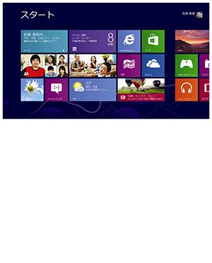

| GetNaviセレクション ジャーナリスト西田宗千佳の週刊GetNavi GetNavi特別編集 | |
| 西田宗千佳 | |
| (2014) | |
ジャーナリスト西田宗千佳の週刊ＧｅｔＮａｖｉ
西田宗千佳
第１章 タブレット、なんでこんなに安くなる!?
第２章 「ゲーム専用機ビジネス終末論」は本当か
第３章 テレビメーカーはなぜ苦しくなったのか
第４章 年末商戦は不発？ Ｗｉｎｄｏｗｓ ８苦戦の理由
第５章 ＰｌａｙＳｔａｔｉｏｎ ４で狙うのは「ゲームの構造変化」
第６章 もっと自由に!? 「第３のスマホＯＳ」登場の理由
第７章 「高い」タブレットはもう売れない!?
第８章 インテルの新ＣＰＵ「Ｈａｓｗｅｌｌ」でＰＣは復活するか!?
第９章 ＮＴＴドコモ「ツートップ戦略」の本当の意味
第10 章 「３Ｄプリンタ」はモノ作りを支える15 年選手!?
第11 章 高画素戦争よ、さようなら？ 変わるスマホの「デジカメ」
第12 章 「ＰＳ Ｖｉｔａ ＴＶ」の影にある「ＳＶＯＤ」の爆発
第13 章 タブレットが「軽くなった」理由
第14 章 シャープ４Ｋ「相当」テレビで画質が上がる理由
第15 章 なぜ「プラズマ」の灯は消えたのか
第16 章 ソニーがＰＣ事業を手放した理由
第17 章 ＬＩＮＥ「春の新サービス」の狙いとは？
第18 章 視界を変える「いまどきのＨＭＤ」
第19 章 日本でもついに「ＣＤの時代」が終わる!?
第20 章 あえて「板」を使うａｕ ＷＡＬＬＥＴの狙い
第21 章 「新生ＶＡＩＯ」はどうなるのか
この電子書籍に書かれているメーカー名や商品の価格は、連載当時のものです。
第１章 タブレット、なんでこんなに安くなる!?
今回の〝キーアイテム〟
Ａｐｐｌｅ
ｉＰａｄ ｍｉｎｉ
２０１２年11 月に世界34 か国で発売された７・９インチディスプレイ搭載タブレット。ＯＳはｉＰｈｏｎｅ ５と同じｉＯＳ ６。ボディのエッジを単結晶ダイヤモンドでカットして仕上げるなど、高級感のあるデザインを採用する。
ＳＰＥＣ●ディスプレイ：７・９インチＩＰＳ液晶（７６８×１０２４ピクセル）●ＣＰＵ：デュアルコアＡ５チップ●カメラ：５メガ（メイン）、１・２メガ（サブ）●接続端子：Ｌｉｇｈｔｎｉｎｇコネクタ、３・５㎜ステレオミニ●サイズ／質量：Ｗ１３４・７×Ｈ２００×Ｄ７・２㎜／３０８ｇ（Ｗｉ－Ｆｉモデル）
海外メーカー製の安さの秘密は「生産量」の多さ
昨年の秋、もっとも注目を集めた製品といえばＡｐｐｌｅの「ｉＰａｄ ｍｉｎｉ」だろう。16 ＧＢモデルで２万８８００円と決して高くはないが、世の中にはもっと安いタブレットもある。同じ16 ＧＢモデルの場合、Ｇｏｏｇｌｅが自社ブランドで販売している「Ｎｅｘｕｓ ７」は、１万９８００円。電子書籍サービスも展開するＡｍａｚｏｎの「Ｋｉｎｄｌｅ Ｆｉｒｅ ＨＤ」は１万５８００円と、さらに破格の安さだ。
７インチのタブレットがみんな安いか......というとそうでもない。国内メーカー製タブレットの多くはそんなに安くなく、５万円台のものもある。もちろん質量や機能などに差はあるものの、単に価格だけを見ると、互角に戦うのは難しい。
海外メーカー製の安さの秘密は「量」だ。国内メーカー製は多くても十数万台程度しか生産されないのに対し、ｉＰａｄ ｍｉｎｉなどは数百万台も生産される。どんな製品でも、大量生産・大量販売は安くするための常道だが、ＩＴ機器は特に効く。
半導体や液晶の工場を作って運営するには、数千億円単位のコストがかかる。だから儲けるには、いかに安定的に大量の需要を捌くかが重要だ。パーツを作る企業も10 万個よりも１００万個、１０００万個の発注をしてくれるメーカーを、品質でもコストでも納期でも優遇する。むしろこれらの企業の浮沈が、ＡｐｐｌｅやＡｍａｚｏｎからの受注で決まるといえるほど。十数万台レベルの生産量では、パーツを安く買うどころか、早く調達することもできない。
特にタブレットの場合、販売国による製品の違いは「ソフト」で吸収できる。全世界共通で同じモノを一気に量産、最後にパッケージなどを少し変えるだけで済むならば、世界中に売るメーカーの方が一国だけで売るメーカーより強いのは当然だ。
生産量が多いほど開発コストが下がり、安くなる好循環
量による「差」はパーツ原価だけにとどまらない。製造のための技術開発費にも反映される。例えば、ソフトの開発費が10 億円かかったとしよう。10 万台生産すれば１台あたり１万円。しかし、１０００万台作れば１台あたり１００円でしかない。ボディの加工コストも同様。高級な仕上げに必要な専用ラインを作ったとしても、販売台数が多ければ一台あたりのコストは小さくなる。ｉＰａｄが価格の割に高級な仕上げになっているのはこのためだ。しかも、同じ設計を何世代も使い回せば回すほど、技術開発費を節約できる。あのような加工を、数万台しか売れない製品に採用するのはコストの面で難しい。
生産量の差で生まれた価格差を埋めるのは？
結果、同じようなモノを作る場合、生産量が１０００万台級の企業と10 万台級の企業では天と地ほどの価格差が生まれる。しかも、そこで生まれた価格差を「特別な機能や軽さ」で埋めようとすると、特殊な部材が必要になり、さらに価格は上がる。その価値が消費者に伝われば高価格も許容されるが、そうでないとなると......。
最初から１００万台・１０００万台クラスの量産を前提に、大規模な資本投資をして良い製品を作り、ライバルを出し抜く。実はこのやり方、元々はある種の「日本製品」が得意としていたもの。そして、ＡｐｐｌｅとＧｏｏｇｌｅ、Ａｍａｚｏｎでは戦略に違いがあるのだけれど......。
低価格タブレットの源流は日本にあり
低価格タブレットのなかでも特にＡｍａｚｏｎのＫｉｎｄｌｅ Ｆｉｒｅ ＨＤとＧｏｏｇｌｅのＮｅｘｕｓ ７に共通するのは、メーカーがこれらの「ハードウェアの利益」を大きく見積もっていないことにある。Ａｍａｚｏｎは「ハードウェアは原価に近い価格で提供する」（Ａｍａｚｏｎのジェフ・ベゾスＣＥＯ）と明言しているし、Ｎｅｘｕｓ ７についても、Ｇｏｏｇｌｅの決算資料などから類推する限り、ハードの利益は販売価格の十数％である。一般的に、ハードの利益率は販売価格の20 ％以上あり、そうでないと家電メーカーはやっていけない。
ＡｍａｚｏｎやＧｏｏｇｌｅは、なぜハードで稼ごうとしないのか？ 理由は、利益源泉を別に確保するからだ。Ａｍａｚｏｎは書籍や音楽、映像などの販売価格から利益を得るし、Ｇｏｏｇｌｅもアプリ販売とネット広告で補完する。〝ハードはそれらの利益へ顧客を誘導するためのツールである〟、という考え方だ。
実は「家庭用ゲーム機」のビジネスモデルを採用
実はこの手法、先に成功した業界がある。それは日本が生み出した「家庭用ゲーム機」というビジネスだ。高品質なハードを一気に年間数千万台作って販売。ハードでは利益をあまり望まず価格を抑え、ソフトからのライセンス料で大規模なビジネスを展開した。このビジネスモデルを広く応用したのが、いまのＩＴ機器のモデルといっていい。
ただし「だからハードでは儲けなくていい」と考えるのは、ちょっと甘い。Ａｐｐｌｅのモデルはまたちょっと異なるからだ。
値引きなしでも高利益、Ａｐｐｌｅ勝利の方程式
ハードにはあまり利益を乗せずに価格を抑えて数をさばき、ソフトやコンテンツの利益で全体のビジネスをコントロールする。これが、ＡｍａｚｏｎやＧｏｏｇｌｅが低価格でタブレットを販売できる理由である。
「なるほど、じゃあＡｐｐｌｅも......」と考える人もいそうだが、実はそれは間違いだ。Ａｐｐｌｅは音楽市場を制覇し、いまやアプリ市場も手中に収めた。当然その売り上げは莫大なもので、ゲームや電子書籍で生まれた先述のような市場構造をＡｐｐｌｅも再現できるのでは......と思われがちで、ニュースなどでもそう語られることが多いのだが、それは実は思い込みに過ぎない。
Ａｐｐｌｅの決算資料によれば、オンラインコンテンツやソフトの売り上げは、全体のわずか８・５％。すなわち、Ａｐｐｌｅの利益のほとんどはハードの販売から生まれている、ということなのだ。
ハードの魅力を高める無料アプリもウェルカム
そのＡｐｐｌｅを代表するデバイスのひとつであるｉＰａｄが支持される理由は、アプリが多いから。でも、ハードからきちんと利益が得られるなら、Ａｐｐｌｅはアプリから利益を得る必要はない。無料アプリもウェルカム。そうすることで市場全体が活性化し、アプリはさらに増え、ハードの魅力に繋がる。ｉＰａｄやｉＰａｄ ｍｉｎｉは売価の35 ％程度を利益として得ており、しかも販売時にほとんど値引きが行われない。だから常にハードからの利益が高く、Ａｐｐｌｅの収益が安定するのだ。ｉＰａｄ ｍｉｎｉとＮｅｘｕｓ ７の価格差は、ほぼそのままＡｐｐｌｅの取り分......と考えてもいい。それでも納得してもらえるように製品を作るのが、Ａｐｐｌｅの腕の見せ所でもある。
では、Ｎｅｘｕｓ ７よりも安い「ノーブランドタブレット」が利益を上げる仕組みはどうなっているのか？
「中華タブレット」が安い理由と、Ａｐｐｌｅ・サムスン電子訴訟の関係
Ｎｅｘｕｓ ７などは確かに安いが、世の中にはさらに安いタブレットもある。俗に「中華タブレット」などと呼ばれるタブレットだ。実のところ、現在のＩＴ製品の多くは中国で生産されており、生産国の名前で呼ぶのは正しくないのだが......。
低価格なタブレットが安価なのは、一般的にスペックが低いからだ。特にこのあたりの機種で使われるパーツは、数か月～一年前はハイエンド機に搭載されていたものが多く、「旬を過ぎたパーツ」がだぶついてお買い得になったところを狙い、コスト面で割り切った製品に仕上げている、という部分がある。
もうひとつの大きな理由が、ソフトなどの開発費を最小限に抑えていることだ。この種のＩＴ機器は、ＬＳＩメーカーによって「リファレンスデザイン（推奨設計）」が定められている。ＬＳＩメーカーの言う通りのパーツを買い、彼らの言う通りに設計すれば動作する機器がすぐ作れる。特にＡｎｄｒｏｉｄの場合、ＯＳを無料公開部分だけを使っても動作はするので、「旬をすぎたパーツ」とセットで使えば大幅なコスト削減になる。だが、そうすると、名のあるメーカーが施すようなチューニングが存在しないので、使い勝手が犠牲になる。中華タブレットで日本向けフォントが搭載されず、中国向けのもので代替される例が多いのもそのためだ。
先行者はデザインにも莫大なコストがかかる
無関係なようだが、Ａｐｐｌｅとサムスン電子の間の訴訟もこの作り方と関わっている。Ａｐｐｌｅは、サムスン電子が「快適に使うためのデザインと工夫を盗んだ」と主張している。そこは、Ａｐｐｌｅが他社に隠れて、先行して莫大なコストをかけた部分でもある。もちろんその分、販売価格に転嫁されている。
もちろんサムスン電子には反論があるだろう。事実関係もいまだわからない。だが、Ａｐｐｌｅにとっては自分たちが心血を注ぎ込んだ「先行するための最大の投資」を他社がスキップすることになるので、頑なになるのも理解できる部分ではある。
（「ＧｅｔＮａｖｉ」２０１３年１月号掲載分に「ＧｅｔＮａｖｉ」のウェブページ掲載分を加筆・修正しました。）
第２章 「ゲーム専用機ビジネス終末論」は本当か
今回の〝キーアイテム〟
任天堂
Ｗｉｉ Ｕ
ＨＤ画質に対応した新型据え置きゲーム機。６・２型タッチスクリーンを搭載したＷｉｉ Ｕ ＧａｍｅＰａｄが付属し、テレビと手元の画面を使った新たなゲーム体験が楽しめる。ユーザー同士で交流できるＳＮＳサービス「Ｍｉｉｖｅｒｓｅ」を標準装備。
ＳＰＥＣ（Ｗｉｉ Ｕ ＧａｍｅＰａｄ）●ディスプレイ：６・２インチ●バッテリー持続時間：約３～５時間●充電時間：約２時間30 分●サイズ／質量：Ｗ２５５・４×Ｈ１３３・４×Ｄ41 ㎜／約５００ｇ（バッテリー、タッチペン含む）
急速に存在感を高めているスマホ向けゲーム
２０１２年12 月８日、任天堂の新型ゲーム機「Ｗｉｉ Ｕ」が発売された。最大の特徴は、タブレット型のコントローラー「Ｗｉｉ Ｕ ＧａｍｅＰａｄ」だ。ゲーム中の画面をテレビだけでなくＧａｍｅＰａｄのディスプレイにも表示できるようにし、「家族がテレビ番組を見ている時でもゲームができる」ようにしたことだ。
Ｗｉｉ Ｕは注目機種だが、業界全体が有望視しているわけではない。「ゲーム専用機のビジネスはもうすぐ終わる。新しいゲーム機はもう売れない」とする「ゲーム専用機ビジネス終末論」が出始めているのだ。
背景にあるのは、スマートフォンやタブレット向けゲームの広がりだ。特にアメリカでは、日本よりもさらにｉＰａｄの普及が進んでおり、おもちゃ店などでも「ｉＰａｄと連動するゲーム・おもちゃコーナー」ができるほど。特にポータブルゲーム機は、これらの機器に地位を奪われ、日本以外では、勢いを失っている。日本でも元気なのは、ケータイ・スマホ向けのいわゆる「ソーシャルゲーム」ばかりである。
世界Ｎｏ．１のゲーム機はｉＰｏｄ ｔｏｕｃｈ!?
２０１０年９月、最新版ｉＰｏｄ ｔｏｕｃｈの発表会見に登場したスティーブ・ジョブズ氏はこう言い放った。「ｉＰｏｄ ｔｏｕｃｈは、世界ナンバーワンのポータブルゲームプレーヤー。販売台数は任天堂とソニーの（ポータブルゲーム機の）合計よりも多い。アメリカでのシェアは60 ％を超え、これまでに15 億本のゲームがダウンロードされている」
すなわち「ゲーム市場の主役は我々Ａｐｐｌｅだ」と宣言したのだ。２０１０年当時、この宣言は少々時期尚早だった。だが、あれから２年が経過して市場を眺めると、ジョブズ氏の発言は、ある程度実現されつつある。
とはいえ、いまだ家庭用ゲームの産業は巨大だ。Ａｐｐｌｅは、４年におよぶＡｐｐＳｔｏｒｅビジネスの中で、50 億ドル以上（２０１２年８月現在）をアプリ開発者に売り上げとして還元した、と発表している。だが、家庭用ゲームの市場はもっと大きい。大ヒット作は、たった１本で20 ～30 億ドルを売り上げる。メガヒットは年間数本程度だが、それだけでもビッグビジネスだ。スマホ用のゲームは単価が安く、家庭用ゲーム機用のメガヒット・ゲームにかなわない。製作コストと時間をかけた〝濃い〟ゲームには積極的にお金を払う人が多く、それらは現状まだ家庭用ゲーム機のビジネスなのである。要は「マリオ」や「ドラクエ」のようなヒット確実なタイトルがある限りゲーム機はしばらく安泰、ということになるのだが......。
メガヒット・ゲームが先にスマホから出るＸデーは？
しかし、そういったメガヒットが確実視されるゲームが「ゲーム機でなく、スマホやタブレットから先に出る」日は来ないのだろうか。実のところ、〝濃い〟ゲームがスマホで出ないのは「ハードの性能」などの技術的理由ではなく、「ダウンロード販売でも数千円クラスの単価の高いゲームを買ってもらえるか」という市場性の問題が大きい。「パッケージ販売」の力やこれまでの慣習から、ゲーム機メーカーは「まだまだこの地位は明け渡さない」と考えているが、家庭用ゲーム機に悲観的な人々はスマホが盟主となる「決着の日は近い」と考えている。
では、その日はいつになりそうなのか？ スマホに負けないために、任天堂などはどう考えているのか？
ゲームでなく「世界観」でスマホへ攻め込む任天堂
家庭用ゲーム機ビジネス終末論の中で、任天堂のＷｉｉ Ｕは船出を迎えだ。だがもちろん、彼らも「スマホ有利」の下馬評を、単純に「高性能」だけで乗り切ろうとはしていない。任天堂にしても、さらにはＳＣＥにしてもマイクロソフトにしても、「スマホ・タブレットの時代が来ている」ことを理解した上で、積極的にそれらを「取り込む」方向を指向している。
といってももちろん、彼らのゲーム機向けに発売しているソフトをスマホにも出そう、としているわけではない。そうではなく、スマホに「家庭用ゲーム機との関わり」を持ち込もうとしているのだ。
そこで、任天堂が武器にしようと考えているのは、Ｗｉｉ Ｕからスタートする「Ｍｉｉｖｅｒｓｅ」というＳＮＳだ。Ｍｉｉｖｅｒｓｅは、いわば「ゲームを軸にした、任天堂の世界観のＳＮＳ」。例えばマリオをプレイ中にゲームオーバーになったとき、同じ場所でゲームオーバーになった人々が、そこで感じた感想や、人々の書き込んだ攻略情報などが表示されるようになっている。
Ｗｉｉ Ｕ発売時点では、Ｗｉｉ Ｕからしか閲覧できないのだが、今後、パソコンやスマホからの閲覧・書き込みにも対応するという。同社はこれまで「ゲーム機内」のサービスにこだわってきたが、ここで方針を転換する。スマホは日常的なものだ。そこでゲームに関するコミュニケーションができるようになれば、ゲームを「もっとしたい」と思ってもらいやすくなる。ゲームは家庭用ゲーム機。でも対話はもっと広く。それが任天堂の作戦だ。
では、ゲームソフトメーカーはどのようにスマホ・タブレットと向き合っていくのか。
いよいよスマホ・タブレットで「大作」登場!?
家庭用ゲーム機がスマホやタブレットに勝っている点は、多くの人がプレイしたいと思う「濃くてヒットが見込めるゲーム」、海外では通称「ＡＡＡタイトル」などと呼ばれるゲームがあることだ。逆にいえば、ＡＡＡタイトルがスマホで出るようになれば、両者を隔てるものはなくなる。
また、家庭用ゲーム機が有利な理由として挙げられるのは、操作性やハードウェア性能だ。十字キーやボタンがある方が、従来通りの操作を確実に行えるし、グラフィック性能なども、いまは専用機の方が良い。家庭用ゲーム機は性能のすべてをゲームに注げるが、スマホなどは通話も含め別の処理にも裂かねばならず、単に「同じＣＰＵを使うようになった」だけでは、差が縮まらない。特にこのハードウェア性能は、あと２年は差が埋まらないだろう。
しかし、だ。それらはみな、ある意味「言い訳」。ゲームソフトメーカーから見れば、本当に大切なのは「売れること」。操作性やハードウェア性能の多少の差は、ソフトの作り方や工夫でどうにもなってしまう。だから、複数の大手ゲームメーカー幹部は、口をそろえてこう言う。
「２０１３年から14 年には、ＡＡＡタイトルがタブレットでも登場する。それだけの売り上げを期待できるようになる」と。特に韓国などでは、ネットゲームを中心にＡＡＡタイトルをスマホ・タブレットにも、という動きが活発だ。
ただし、家庭用ゲーム機と同じやり方で売れるか、同じタイトルでいいかどうかは「まだわからないが、おそらく違う」とも言う。
「ハリウッド的」大作ゲームが成立する条件とは
スマホやタブレットと、家庭用ゲーゲーム機の最大の違いは、「ゲームソフトの価格」だ。家庭用ゲーム機は、「単価の高いパッケージソフトが基本」。高単価で数百万本売れる前提にたてば、コストをかけたゲーム作りがしやすい。ハリウッド映画と同じ仕組みだ。
それに対してスマホやタブレットは、無料や安価なゲームが中心。入り口は広いものの、その後に「継続的な課金」や「追加コンテンツの大量購入」を前提としないと、大きく儲けることが難しい。それらの条件は、ヒットが確実になってからコストを投下する形で行うのが現実的で、最初から大ヒットを見越してコストをかけるのはリスクが大きい。これはＣＭ収入で制作して視聴者に無料で放送後、ヒットすれば映画化する日本の民放のドラマに近い。
しかし、後者の仕組みでも「お金をかけてそのぶん大ヒット」という仕組みが目指せないわけではない。大切なのは「それだけ大きい収益が見込める土壌がある」ことと、「それを狙って大規模な投資を行う」ことができるか、だ。スマホもタブレットも、普及率はそろそろ十分。あとは、これらの機器で「しっかりしたゲームを真剣にプレイしたい」と思う人の数が増えることが重要だ。そういう人々がいて初めて、高いお金を支払ってもらえるのだから。
となると、「お手軽なゲームばかり」の現状は望ましいものではない。まずは家庭用ゲーム機からの移植が中心だろうが、〝濃いゲーム〟が増えていって「ああ、スマホでもいいのか」というイメージが浸透することが重要になる。
ゲームメーカーが「２０１３年から14 年以降」と考えている理由は、この環境ができあがるまでに、まだちょっと時間がかかる、と考えているからなのだ。
（「ＧｅｔＮａｖｉ」２０１３年２月号掲載分に「ＧｅｔＮａｖｉ」のウェブページ掲載分を加筆・修正しました。）
第３章 テレビメーカーはなぜ苦しくなったのか
今回の〝キーアイテム〟
東芝
レグザ ５５Ｚ７
地デジ６ｃｈの更新録画（別売の対応ＵＳＢ ＨＤＤ接続時）が可能な液晶テレビ。高度な番組検索機能「ざんまいプレイ」にも対応。「韓国メーカー製の液晶パネルを採用し、トップクラスの画質を実現。自前のパネルに固執しなかったがゆえに生き残ったといえます」（西田）
ＳＰＥＣ●画面サイズ：55 Ｖ型●解像度：１９２０×１０８０●チューナー：地デジ×９、ＢＳ／１１０度ＣＳ×２●接続端子：ＨＤＭＩ入力×４、ＵＳＢ×４ほか●サイズ／質量：Ｗ１２３４×Ｈ７９５×Ｄ２８８㎜／26 ・５㎏（スタンド含む）
テレビが売れなくなるのはメーカーも想定済みだった
ご存じの通り、現在、日本の家電メーカーはかつてない苦境に陥っている。シャープが２０１２年11 月に発表した２０１２年４～９月期連結決算は、最終損益が３８７５億円の赤字。パナソニックも同期の最終損益が６８５１億円の赤字となった。
なぜこれらの家電メーカーが苦境に陥ったのか？ 一般には「テレビが売れなくなったから」と説明されることが多い。確かに、電子情報技術産業協会（ＪＥＩＴＡ）の調べでは、２０１２年11 月のテレビ出荷台数は、前年同期比のおよそ半分となる51 万７０００台。日本の家電メーカーは、この10 年「テレビに特化した営業体制を敷いてきた」（家電メーカー販売担当）ため、出荷量が半分になるといかにも厳しい。「地デジ移行で数年分の需要を先食いし、テレビが売れなくなったから家電メーカーがダメになった」──そう、それはもちろん間違いではない。
だが、それだけでこんなに巨額の赤字にはならない。それくらいの事はメーカーも想定済み。問題は「海外との関係」「自らの設備」にある。
巨大工場に大規模な先行投資をした結果......
日本の家電メーカーは、海外事業比率が高い。パナソニックでおおむね47 ％、シャープが52 ％、ソニーにいたっては68 ％もある。もちろんそれでも国内事業は大きいが、どの企業も、海外展開を同時に見据えた展開を行っている。
特にここで重要になるのが「パーツ戦略」だ。テレビに必要な大型フラットパネル（液晶やプラズマディスプレイが中心だ）は、巨大な工場で一気に量産し、１枚あたりのコストを下げることが利益率の向上に直結する。高品質なパネルを持つことはテレビのクオリティアップにもつながり、二重の意味で差別化要因となる。これらの工場に大規模な投資をし、生産戦略で先頭を走っていたのがシャープとパナソニックだ。
工場がきちんと回っている間は、両社は強い。だが、テレビの需要が減り、工場に空きが出来てくるとどうなるだろう？ 工場は動かすだけで莫大なお金がかかる。数兆円の投資で作った工場なので、その費用の回収もまだ終わっていない。
本来は、国内の需要減を海外分で補い、先端工場を持つ利を維持していく、というのが両社の戦略だった。
「韓国系との競合」と「円高」のダブルパンチ
だが、そこに立ちふさがったのが、「韓国系のサムスン電子・ＬＧ電子との競合」と、「円高」というダブルパンチだ。特に液晶パネルにおいては、韓国系２社がウォン安の力を背景に、価格と生産量の点で力をつけ、性能でも劣らないレベルに近づいてきた。競争上シャープ・パナソニックは厳しくなり、工場の稼働率が落ち、パネルの利益率も低下する。それは直接、業績に跳ね返ってくる。
パネル工場を持たず、外部から調達する戦略を採った東芝は（それでも苦しいものの）、他社ほどつらくない。ソニーも業績回復のために最初にやったことは、「テレビ向け液晶パネル調達方針の見直し」だった。
技術があり、大規模な先行投資をしたが故に苦しむ。いまの家電メーカーのつらさはそこにある。
「テレビ不振」の本質とは
そもそもテレビを頻繁に買い替える人は多くない。５年に一度購入すればいい方で、10 年間使い続ける人も珍しくはないだろう。２～３年で多くの人が買い替えるＰＣやスマートフォンなどのデジタル家電とは、消費サイクルがまったく異なるのだ。
そこに、日本では地デジ放送への移行を２０１１年７月という期限を切ったことで、テレビの需要が一気に増えた。しかも、家電エコポイントというカンフル剤までつけて。結果、２０１１年はテレビが売れに売れた。今後数年は買い替えるつもりがなかった家庭の需要まで取り込んで。その〝先食い〟の分、数年間はテレビが売れなくなるのは当然だ。
だが、問題はそれだけではない。むしろメーカーにとって厳しかったのは、価格がどんどん下がったことだ。いまや発売から１年経ったテレビは、半額以下で売られることも珍しくない。製造原価も急速に下がっているが、だからといって、半年や１年で半額になるわけがない。そのぶん利益を削って売られているのだ。いや、商品寿命の後半は、ほぼ利益がない状態で売られている、と言っても過言ではない。モノが安くなるのは消費者にとってはありがたいこと。だが、利益なく売られては、メーカーが生きていけない。それでも大幅に値引きして売られる理由は、複雑だ。
エコポイント制度の実施時、需要は旺盛で、店頭に人があふれた。販売店はそれを捌かねばならないし、他店に行かれても困る。だから値下げする。そのため、メーカーには、販売数量を背景に仕入れ値を下げるよう迫る。メーカーは、生産せねば売上が立たない。特に、液晶工場を抱えた会社は、その稼働率を維持するためにも、価格を下げてでも売る必要がある。製造した製品は倉庫にあるだけで資産であり、費用がかかるので素早く売らなければならない。結果、利益がほぼなくとも、量販店の求めに応じて安価で出荷し、それがさらに価格競争を生んで、利益を削っていく......。
一度下がった価格はそうそう上げられない。需要を先食いしている上に、高い製品が売れない。テレビメーカーを苦しめているのはこの二重苦だ。別の言い方をすれば、「価格以外の競争軸を持てなかった」ことが、テレビメーカーの敗因なのである。
「工場稼働」のために壊れたテレビ産業
日本では、テレビの「大型化」が進んでいる。東芝の調べによると、日本国内の「50 Ｖ型」より大きいモデルの販売比率は、２０１１年上期は６％程度だったが、２０１２年下期には21 ・６％まで上昇している。米国ではさらに大型なモデルが売れている。店頭での売れ筋は、日本は42 Ｖ型前後だが、あちらは55 Ｖ型。しかも驚くことに、それを店から車で持ち帰る。55 Ｖ型テレビの入った「板」のような薄い箱が買い物カートに斜めに刺さった状態でレジに並ぶ人の姿を筆者が見たのは、一度や二度ではない。
しかし、そうした市場が健全に成立したか、というとそうではない。２０１１年夏以降、米国では50 Ｖ型以上のテレビが一気に低価格化した。２０１１年末のセール以降、55 Ｖ型のテレビが、最も安価な製品の場合、１０００ドルで売られることもあった（当時の価格でたったの８万円！）。いまはもう少し値上がりし、市場は健全化したものの、もはや大型でも高値で売ることはできなくなった。
こういう話をすると、「ああ、外国メーカーが安売りを仕掛けて日本がやられたのね」と思うだろう。
だがそれは違う。この安売りを仕掛けたのはシャープだ。シャープは他社より大型液晶を製造しやすい技術を持ち、同じサイズを他社より安く作れる。だから安売りを仕掛け、他社が「根負け」するのを狙ったのだ。
しかし、これは正直失策だった。いかにシャープでも、55 Ｖ型のテレビを８万円で売ってしまっては元がとれない。
シャープは当時、液晶工場の操業不振に困っていた。液晶工場の操業率が５割を切るような状態では、赤字だけがかさむ。そこで、無理矢理にでも工場の稼働率を上げる必要があった。工場でできたパーツは売らねばならない。結果、それは「低価格な大画面テレビ」となって世に出た。
シャープの想定通り、55 Ｖ型以上の大型テレビは値下がりし、当然それだけ利益を得にくい商品になった。そこで苦しんだのは、シャープだけでない。根負けしたのは「すべてのテレビメーカー」だった。普通にテレビを作っても、もう利益は得られない。工場を動かすために、その工場で作られた製品の市場が死ぬ。これが、デジタル家電の最悪のシナリオである。
大型テレビの市場は、こうしてさらに悪化した。現在各メーカーは、テレビ市場の秩序再構築に力を注いでいる。
「４Ｋ」の狙いは価格秩序再構築!?
いまのテレビ事業の最大の問題点は、「売っても利益が出ない」構造にある。実際には、デジタル家電全体が似たような問題に直面している。せっかく作った製品も、すぐに値下がりしてしまうのだ。値下がりした結果、高く販売できる製品は減り、利益率が下がる。
「テレビは安くなりすぎた」と言われる。だが、その言葉ではすべてを説明しきれていない。
ここで特に問題なのは「価格階層」だ。
商品には、低価格なものからハイエンドなものまで、いくつかの階層があるのが望ましい。多様な消費者のニーズを、価格差に伴うクオリティの差で満たすためだ。
しかし現状、テレビではこれが崩れている。急速な価格下落に伴って、サイズによる価格差も、機能による価格差も失われた。特に問題なのは、販売価格が発売後から下がり始め、半年～一年経つと元々の価格から大幅に下がってしまう、という点だ。一年後に売価が半額になっていたら、いかにパーツ単価が下がっていても、そこから利益を得るのは難しい。結果、発売当初は無理に高めに売価を設定し、それから数か月後の売価を仮の適正売価に見据え、その間だけで利益を取るしかなくなる。きわめて不健全な市場だ。
そこで望まれるのが「価格秩序の再構築」である。
高いが、消費者が納得して買える品質のものと、低価格でお手軽な製品をきちんと分ける。そして、パーツ単価下落以上のスピードで無理して安売りをしない。そうした秩序を取り戻すには、大型の新製品が必要だ。
実は、この大型新製品こそ、今春から続々市場に登場すると見られている「４Ｋ」テレビである。
４Ｋテレビは、主に55 Ｖ型以上の大型のサイズで、フルＨＤの縦横二倍の高解像度表示ができることがウリだ。コンテンツはまだ少ないが、映像処理技術の進展により、既存のＢＤディスクの映像などを「４Ｋ表示」する技術も確立している。元々この55 Ｖ型以上では、大型化したゆえに「画素が粗く感じる」と言われていた。そこで、４Ｋパネル＋画像処理技術を使った「高画質テレビ」を訴求することで、「高価だが良い製品」と「いままでの品質で低価格な製品」を分けることが可能となる。そしてその際、最初からある程度価格を抑えるものの、その後は無理に下げないよう努力することで、秩序の再構築も狙える。
４Ｋは、いまの「マス向けのテレビを置き換える」のではなく、「高いものを納得して買う」人向けの製品を、再び作ることが目的なのだ。
（「ＧｅｔＮａｖｉ」２０１３年３月号掲載分に「ＧｅｔＮａｖｉ」のウェブページ掲載分を加筆・修正しました。）
第４章 年末商戦は不発？ Ｗｉｎｄｏｗｓ ８苦戦の理由

今回の〝キーアイテム〟
マイクロソフト
Ｗｉｎｄｏｗｓ ８
ＰＣ用ＯＳ・Ｗｉｎｄｏｗｓシリーズの最新バージョン。タッチ操作に最適化されたインターフェイス「モダンＵＩ」をスタート画面に採用し、タブレット端末でも快適に操作できる。スマホなどで用いられるＡＲＭ技術を採用したＣＰＵでのみ使用可能な「Ｗｉｎｄｏｗｓ ＲＴ」など全４種類のバージョンを用意。
使用ＰＣの推奨ＳＰＥＣ●ＣＰＵ：１ＧＨｚ以上●メモリ：１ＧＢ以上（32 ｂｉｔ版）／２ＧＢ以上（62 ｂｉｔ版）●ＨＤＤ：20 ＧＢ以上●画面解像度：スナップアップ（画面を分割して２つのＵＩを利用する機能）を使う場合は１３６６×７６９以上
新しい風を吹き込んだが売り上げの起爆剤にはならず
２０１２年の10 月26 日、マイクロソフトの新ＯＳ、「Ｗｉｎｄｏｗｓ ８」が発売になった。「ゲットナビ」読者ならご存じだと思うが、Ｗｉｎｄｏｗｓ ８には先代ＯＳにはない様々な特徴がある。特に大きな変化は、タッチインターフェースの本格導入と、それに伴う新しいアプリである「Ｗｉｎｄｏｗｓストアアプリ」向けのインターフェイス、通称「モダンＵＩ」の導入だ。
これらの要素をきちんと生かすには、ＰＣそのものの再定義が必要だ。そのため、各社からはタッチインターフェースを生かした、「タブレットにもなるＰＣが多く登場した。ソニーのＶＡＩＯ Ｄｕｏ11 」やパナソニックのレッツノートＡＸ２などはその代表例といえる。デザイン的にも機構的にも、若干停滞していた感のあるＰＣに、新しい風を吹き込んだのは間違いない。
だが、その風が大きなビジネスにつながっているかというと、そうでもないようだ。各メーカー関係者は、この年末のＰＣ市場が「思ったほど盛り上がらなかった」ことに頭を抱えている。思ったように売れた機種は数えるほどで、まったくヒットには結びついていない。マーケット調査会社ＢＣＮの調べでも、Ｗｉｎｄｏｗｓ ８発売後の２０１２年11 月12 日～18 日の集計で、前年同期比９・８％減と前年割れ。それ以降も、12 月の最終週まで６週連続の前年割れだ。新ＯＳが売り上げの起爆剤になっていないのである。
タッチ機能を生かすにはＰＣの単価アップは不可避
理由はいくつかある。多くのメーカーが指摘するのは、製品の単価が上がったことだ。Ｗｉｎｄｏｗｓ ８の機能をフルに生かすにはタッチ機能が必要。そのために、タブレットスタイルへの変形機構を搭載したノートＰＣが多く登場したが、そのほとんどが15 万円以上の高価なモデルであり、なかなか売り上げに結びつかない。タッチ機能だけを通常のＰＣに搭載することもできるが、そのために「パーツコストで50 ドルから80 ドルは必要」と、あるメーカー関係者は語る。仮に80 ドルコストがアップしたとすると、売値は１００ドルくらい上がるだろう。日本円に換算すると、１万円前後の値上げだ。
だが残念ながら、タッチ機能を搭載しても肝心のＷｉｎｄｏｗｓ ８の「モダンＵＩ」を生かすアプリはまだ少なく、１万円の単価アップを容認できる人はそうそういない。高価格帯の変形ＰＣについても同様だ。
移行の価値は十分にあるが消費者が着目するのは......
誤解して欲しくないのだが、タッチ機能がＰＣに不要なわけでも、Ｗｉｎｄｏｗｓ ８というＯＳが不出来なわけでもない。使い方に慣れれば、ディスプレイのタッチはかなり使いやすく、生産性向上にも役に立つ。また、起動の素早さや消費電力の少なさなど、モダンＵＩ以外の部分に着目した場合、Ｗｉｎｄｏｗｓ ８はかなりよくできたＯＳで、Ｗｉｎｄｏｗｓ ７からの移行の価値は十分にある。
しかし、多くの人に見えるのは「モダンＵＩ」の部分であり、そこに魅力が出てこないと、価格アップを許容できるものではない。ＯＳだけをアップグレードする人は、全体から見ればもはや少数派だ。新ＯＳ搭載パソコンが売れないと、そのＯＳが成功したとは言えない状況にある。
Ｗｉｎｄｏｗｓ ８「モダンＵＩ」の理想と現実
そもそも、マイクロソフトがＷｉｎｄｏｗｓ ８に託した戦略とはなんだったのだろうか？
その軸は、もちろん「モダンＵＩ」（冒頭写真）だ。以前はＭｅｔｒｏと呼ばれており、タッチで操作するインターフェイスである。いままでのマウスによる操作から離れ、ＰＣをタブレットとしても使えるようにするもの......と言われることが多いが、それは狙いの一部でしかない。
モダンＵＩが狙っていたのは、Ｗｉｎｄｏｗｓでのソフト開発の主軸を、従来のＷｉｎｄｏｗｓ用アプリケーションから、モダンＵＩ向けアプリケーションである「Ｗｉｎｄｏｗｓストアアプリ」に移行することだった。Ｗｉｎｄｏｗｓストアアプリは、ＣＰＵの処理負荷や画面描画能力、ソフト開発効率の面で、より最新の技術を生かしやすいものになっている。そのため、ＣＰＵがＰＣ向けのｘ86 系と異なる、ＡＲＭ系を使った「Ｗｉｎｄｏｗｓ ＲＴ」の上でも動作する。将来的には、スマートフォン向けＯＳである「Ｗｉｎｄｏｗｓ Ｐｈｏｎｅ」向けアプリケーションも統合する計画だった。
マイクロソフトの本質は「ソフト開発環境」の会社だ。Ｗｉｎｄｏｗｓが広く普及したのも、開発ツールと開発情報が十分に提供され、Ｗｉｎｄｏｗｓ用ソフトと周辺機器の開発がしやすかったからだ。そして、結果、Ｗｉｎｄｏｗｓ用ソフトとＷｉｎｄｏｗｓが動くＰＣが増え、市場を席巻した。同様に、Ｗｉｎｄｏｗｓストアアプリへ環境を移行していくことで、ＰＣ・タブレット・スマートフォンなど様々な機器向けのビジネスを、得意の「開発環境」から改善して席巻したい......。これが、最終的な計画であった。
だが結果的に、それはうまくいっていない。
ＰＣで「やりたいこと」「できること」は、非常に高度化している。モダンＵＩとＷｉｎｄｏｗｓストアアプリへの移行を促進するといっても、それで「ユーザーがいまやりたいこと」をカバーできるわけではない。また、開発者向けのサポートという点でも、既存のＷｉｎｄｏｗｓ用ソフト向けに比べて弱いのはもちろん、急速に広がるｉＯＳ・Ａｎｄｒｏｉｄ向けに比べても強力とは言いがたかった。将来的な方向性と利用者へのメリットのバランスが悪かったために、モダンＵＩを主軸にする計画はうまくいっていない。
そして、マイクロソフトを困らせているのが「ハードウェア」の計画だ。
「Ｓｕｒｆａｃｅ」というマイクロソフトの博打
２０１３年３月１日、日本マイクロソフトは、新ハードウエア〝Ｓｕｒｆａｃｅ〟の日本発売を発表した。Ｓｕｒｆａｃｅは、２０１２年10 月のＷｉｎｄｏｗｓ ８発売時、アメリカでは鳴り物入りで同時リリースされた製品。現在マイクロソフトが推し進めている戦略の象徴的な製品だ。
Ｓｕｒｆａｃｅは、Ｗｉｎｄｏｗｓ ８戦略を象徴するものではあるのだが、ＯＳはＷｉｎｄｏｗｓ ８ではない。同じ技術基盤を使った〝Ｗｉｎｄｏｗｓ ＲＴ〟が採用されている。Ｗｉｎｄｏｗｓ ＲＴは、ＣＰＵにタブレットやスマートフォンと同じ〝ＡＲＭ系〟を使い、消費電力が低く、比較的サイズの小さな〝Ｗｉｎｄｏｗｓタブレット〟を作ることを目的とした技術である。ＳｕｒｆａｃｅもＷｉｎｄｏｗｓ ８を搭載し、既存のＰＣと同じ枠組みで作られた〝Ｓｕｒｆａｃｅ Ｐｒｏ〟と、Ｗｉｎｄｏｗｓ ＲＴを使った〝Ｓｕｒｆａｃｅ〟がある。前者はさほど軽くも小さくもなく、良くも悪くもＰＣ。だがＳｕｒｆａｃｅは、Ａｎｄｒｏｉｄタブレットにかなり近い製品だ。カバーのようにスリムな専用キーボードを接続できる洗練されたデザインのボディは、新しい世代を象徴するに十分な従来製品との〝違い〟を持っている。
だがこの製品、ある意味同社にとっては危険な存在でもある。
マイクロソフトは、ハードウエアを作るメーカーにＯＳを供給し、自らは「ＰＣそのものは作らない」という、分業的戦略を採ってきた。だがＳｕｒｆａｃｅは、自らが設計に携わり、自社ブランドのハードウエアとして販売した。ＰＣメーカーから見れば、面白い話ではない。これまでのパートナーが、突如ライバルになったのだから。ＯＳというカギを握っている以上、その潜在能力は高く、ＰＣメーカーの存在を脅かす可能性が高い。
ＰＣメーカーを無視してＳｕｒｆａｃｅをドンドン売ることになれば、マイクロソフトは自らの最大の味方である、ハードメーカーを敵に回す可能性もあった。それでもＳｕｒｆａｃｅを作ったのは、ＯＳをよく知るマイクロソフト自身だからこそ生み出せる、ソフトとの一体感が高く、他のＯＳ製品と差別化しやすい製品が欲しかったからだ。そう、同様にＯＳとハードを一体で開発している、Ａｐｐｌｅのようにだ。
だが、結果的にＳｕｒｆａｃｅはヒットに結びついていない。製品としては悪くないのだが、Ｗｉｎｄｏｗｓ ８（ＲＴ）の人気がいまひとつであるからだ。悪い意味で、同社の賭けは失敗しつつある。日本でも、大ヒットは難しいだろう。
では、Ｗｉｎｄｏｗｓ ８世代は本当に「ダメ」なのだろうか？ そうとも言いかねる。
本当はスゴイＷｉｎｄｏｗｓ ８の基盤技術
Ｗｉｎｄｏｗｓ ８の特徴といえば、タッチ操作を主体とした「モダンＵＩ」（写真）。それは間違いない。だが、タッチ対応のＰＣがなかなか増えず、モダンＵＩ上で動作する「Ｗｉｎｄｏｗｓストアアプリ」も増えてこない現状では、その魅力もなかなか伝わらない。
「じゃあ、別にＷｉｎｄｏｗｓ ７でも使い勝手は変わらないのでは」
そんな風に思う人もいるようだ。実際店頭でも、Ｗｉｎｄｏｗｓ ７搭載パソコン（要は型落ちモデルだ）を求める人が少なくない、と聞く。
もちろんその気持ちは分かる。慣れ親しんだ操作体系が変わってしまうのは苦痛だし、ＯＳのアップグレードなんてできればしたくない。
だが、技術は常に進化している。Ｗｉｎｄｏｗｓ ８は、ＯＳ基盤としてＷｉｎｄｏｗｓ ７から長足の進歩を遂げており、「同じ事をするならかなり高効率」なのである。
例えばモバイル性能。Ｗｉｎｄｏｗｓ ８は最新ＣＰＵの省電力性能を生かせるように作られているし、サスペンド・休止状態からの復帰速度もぐっと上がっている。複数のディスプレイを併用する「マルチディスプレイ」の機能も向上。ファイルコピーひとつとっても、より高速に行える。特に、ＰＣをケータイのように「待ち受け可能」にし、常に最新の情報をネットから取得する「コネクテッド・スタンバイ」と呼ばれる機能の可能性は大きい。
なにより、もはや64 ビットＣＰＵが基本になっていることも見逃がせない。８ＧＢクラスのメモリをきちんと使うことで、高性能なＰＣではその処理性能をフルに生かし、モバイル系デバイスでは省電力性能に特化した動き方ができる。そういう基礎部分をカバーするのが、本来のＯＳの仕事の一つなのだ。だから、新しいハードウエアの性能を生かすには、新しいＯＳが必要になる。
だが、それは表に見えず、わかりにくい。少々の効率化より、慣れ親しんだ操作を素早く行える方がプラスに感じられる場合は多い。
基盤技術は大切。それに加え、多くの人にもわかりやすい新機能がないと、新しいＯＳはなかなか広がらない。特にＰＣのように、「基本的な使い方は浸透しきっている」製品では特に、だ。
マイクロソフトは現在、コード名「Ｂｌｕｅ」と呼ばれる、Ｗｉｎｄｏｗｓ ８の改良版を開発中と言われている。Ｂｌｕｅではどこまで方向を修正できるのだろうか。
（「ＧｅｔＮａｖｉ」２０１３年４月号掲載分に「ＧｅｔＮａｖｉ」のウェブページ掲載分を加筆・修正しました。）
第５章 ＰｌａｙＳｔａｔｉｏｎ ４で狙うのは「ゲームの構造変化」
今回の〝キーアイテム〟
ＳＣＥ
ＰｌａｙＳｔａｔｉｏｎ ４
価格未定 年内発売予定
ＳＣＥから発売されている据え置き型ゲーム専用機。描写力と処理性能に優れるほか、ソーシャルメディアとの高い親和性や、様々なモバイル端末との連携機能を備えている。
ＳＰＥＣ●ＣＰＵ：ｘ86 －64 ＡＭＤ〝Ｊａｇｕａｒ〟、８コア●メモリ：ＧＤＤＲ５ ８ＧＢ●ハードディスク：内蔵●光学ドライブ（読み出し専用）：ＢＤ ６倍速ＣＡＶ、ＤＶＤ ８倍速ＣＡＶ●ＡＶ出力：ＨＤＭＩほか
ＰＳ４はプレイヤーの感情をゆさぶる圧倒的な表現力を獲得
２０１３年２月21 日、ソニー・コンピュータエンタテインメント（ＳＣＥ）は、13 年末までに新しい据え置き型ゲーム機「ＰｌａｙＳｔａｔｉｏｎ ４」（ＰＳ４）を発売する、と発表した。「え、もう？」と思う方もいそうだが、ＰＳ３の発売からすでに７年が経過。据え置き型ゲーム機の世代間隔では、これまでにないほど長い。久々ということもあり、ＳＣＥはニューヨークで大々的な記者会見を開いた。
ＰＳ４の特徴は色々あるが、グラフィック性能の向上は間違いない。ＰＳ３では「なんとかハイビジョン画質のゲームを実現している」段階だったが、ＰＳ４では大幅に変わる。数十万個を超える物体が画面中で動作し、質感の表現もよりリアルになる。
ＰＳ３用ゲーム「ＨＥＡＶＹ ＲＡＩＮ 心の軋むとき」の開発元・Ｑｕａｎｔｉｃ Ｄｒｅａｍのクリエイターで、ドラマチックな人物表現を得意とするデイヴィッド・ケイジ氏は、会見で次のようにコメントした。
「ゲームにおいてプレイヤーの感情をゆさぶることは、すべてのゲームクリエイターにとっての目標。ＰＳ４で、ようやくそのステージに達した。このレベルのグラフィックになると、ＣＧキャラクターの目つきや口元から、どのような感情なのかを感じさせられる。残る限界は、技術ではなく、我々の発想の側にある」
ゲーム専用機の構造欠陥を改善しもっと遊んでもらう環境を構築
ゲームの可能性を広げるためにハードの性能をアップすることは、７年間の技術の「変化」を考えれば当然。
だが、それはＰＳ４にとって一つの要素でしかない。ＳＣＥが狙うのは、もう少し違う種類の「変化」である。
「この６、７年の間に、あらゆるデバイスの使い方が変わった。どんな機器よりも没入感のあるゲームを提供するという、ゲーム機の役割は変わっていないが、新たな生活・デバイスの使い方・ネットワークとのつながり方は、認識しないといけない。ネットによって、マルチデバイスによって、新たな発想が生まれてくる」
ＳＣＥのアンドリュー・ハウス社長は、筆者にＰＳ４の狙いをそう語った。ＰＳ４には、ゲームを常に「自動録画」し、ワンボタンでＦａｃｅｂｏｏｋに公開してシェアしたり、タブレットやスマートフォンからゲームの一部を楽しんだりする機能が用意される。同社の携帯ゲーム機「ＰｌａｙＳｔａｔｉｏｎ Ｖｉｔａ」と組み合わせると、Ｖｉｔａをディスプレイにし、どこでも好きな場所からＰＳ４のゲームを楽しめるようになっている。また、サスペンド機能を据え置き型ゲーム機としては初めて標準搭載。ゲームの中断・再開を数秒で行えるようになるのだ。
「世間でどんなゲームが盛り上がっているかわからない」「テレビの前にいないと遊べない」「始めるまで時間がかかる」というゲーム専用機の構造欠陥を改善し、ゲームをもっと遊んでもらう環境を作ろう、というのがＰＳ４の本当の狙い。それは「ゲーム機以外でもゲームはできる」現在、あえてゲーム機を選んでもらうために障壁を低くして売る、という発想でもある。
では、そうした結果ゲームは売れるようになるのだろうか？ そして、どんな「いままでにないゲーム」が登場するのか？ そこが、ＳＣＥに求められていることだろう。
「ない袖は振れない」中で選ばれた「ｘ86 系」の採用
ＰＳ４の中身をＰＳ３までと比較すると、きわめて大きな違いが１点ある。それは、ＰＣと同じ「ｘ86 系ＣＰＵ」を採用しているという点だ。これまでＳＣＥは、自社のゲーム機にオリジナルの構造（アーキテクチャ）を採用してきた。ＰＳ２とＰＳ３では、東芝などのパートナーと共同で、独自のＣＰＵを開発してきたほどだ。ＰＳ３で採用した「Ｃｅｌｌ Ｂｒｏａｄｂａｎｄ Ｅｎｇｉｎｅ」はその代表といえる。
これまで同社のゲーム機は、オリジナル・アーキテクチャを使い、同じ時代に存在する他の機器（ＰＣなど）に比べ、対価格性能比の良好な製品を生み出してきた。また一方で、自社でＣＰＵを製造することで、そこの利益を自社で独占してもいた。特にＰＳ２では、全世界で販売された約１億５０００万台以上の製品のうち、最初の１０００万台程度をのぞき、すべてから大きな利益を得ている。これは、ＣＰＵまで自社で作ったがゆえである。
だが他方で、そういった方策には開発費と工場製造の初期投資が必要だ。その額は数千億円クラス。ビジネスがうまくいけば取り返せるものの、いまのソニーに容易に投資できる額ではない。また、半導体技術開発の難易度は上がっており、高性能なプロセッサー開発はＰＳ３の時代よりもさらに難しくなっている。インテルやＡＭＤ、クアルコムといった、他の用途で独占的な地位を持っていて、そちらで技術投資を取り返せる企業でないと、新しい高性能プロセッサーを作るのは難しい。
だから、ソニーはＡＭＤと組むことにした。ＰＣ向けの技術を流用、カスタマイズすることで、リスクを軽減しつつ、より高性能なゲーム機を容易に開発しようとしたのである。その分ハードから得られる利益は減るが、ソニーにとっても、ない袖は振りようがない。
また、ＰＣと同じ技術で作ることで、ソフトの開発はより容易になる。この点を、ＳＣＥとしてはゲーム開発者にアピールしたいと考えているようだ。一方で、機器としての個性は、ＰＳ３以前より弱くなる。２０１４年に販売されるであろうＰＣと比較しても、ミドルクラス（10 万円程度）の製品に似た性能になりそうだからだ。
「似ているようで違う」環境を目指す、秘密は「ＧＰＧＰＵ」
ＰＳ４ではプロセッサーに「ｘ86 系ＣＰＵ」を採用した結果、ソフトの開発効率は劇的に良くなるが、他社製品との差別化は難しくなる。実際性能でいえば、２０１３年末～２０１４年に発売される「ゲーム向けハイエンドＰＣ」に劣る可能性が高い。
「ゲーム機は性能が命。ＰＣに負けちゃしょうがない」と思う人もいるかもしれない。でも、それは少し的外れな意見だ。実際、発売当初は、どのゲーム機もＰＣより高性能であるものの、発売から時間が経つと抜かれる。携帯ゲーム機も同様だ。ゲーム機にとって重要なのは「性能が高い」ことではなく、「数年間同じ性能である」こと。ゲーム開発には長い時間がかかるが、その間、まったく同じ性能の機器が販売されていることで、ソフトの作り込みができて、ゲームを計画的に販売できる。
特にＰＳ４世代で大きな意味を持つのは、ＧＰＵ（グラフィックプロセッサー）に搭載されている計算能力を、グラフィック以外に生かす「ＧＰＧＰＵ」という手法だ。ＧＰＧＰＵを使うと、物体の衝突や髪の毛の表現、キャラクターの高度なＡＩ処理などを、ＣＰＵより効率的に行える。ＰＣでも、高性能なＧＰＵを搭載した製品ではＧＰＧＰＵが可能だったが、ノートＰＣなどでは難しい面もあった。ＰＳ４は「ＧＰＧＰＵ利用を前提としてゲーム開発ができる」（ＰＳ４の開発を指揮する、マーク・サーニー氏）のだが、それはＰＣを含め、初めての要素といえるものだ。
ＰＳ４は、ＰＣと同じ構造でありながら、「より高度な機能を当たり前として、安定的に使える」基盤であることが他機種との違いとなる。結果、ゲームの表現はよりリッチなものになるだろう。
それを支えるために、ＰＳ４はメモリ容量も８ＧＢと大幅に増えた。これを生かし、「ゲームをしながらＹｏｕＴｕｂｅを見たり、友人とコミュニケーションしたりする時にも、スムーズに動作する」（サーニー氏）ようになるという。
そうした高度な「同時動作環境」を用意する裏には、ゲームとネットワークサービスの関係を変えよう、というＳＣＥの意図がある。
「ネットの力」を借りてゲームビジネスを多様化
ＰＳ４は様々な野心的な機能を備えたゲーム機だ。なかでもユニークなのは、標準で「ゲームプレイ映像」の共有機能を備えていることだ。これまでも、ゲームのプレイ動画を撮影し、ネットに公開する人はいた。だがそのためには別途ＰＣや「映像取り込み用機器」の用意が必要で、コスト的にも技術的にもハードルが高かった。だがＰＳ４では、本体内部にゲーム映像を「動画ファイル」に変換する機能があり、ゲームプレイ中には、常にゲームが「同時録画」されている。コントローラーに新たに用意された「シェア」ボタンを押すと、その動画が瞬時に表示され、好きな部分だけを選んでＦａｃｅｂｏｏｋやＵｓｔｒｅａｍに公開することが可能だ。特別な機器を用意する必要も、特別なノウハウを覚える必要もなくなる。
「なんでそんなマニアックなことを」と思う人もいるだろう。でも、ＳＣＥはこの機能にゲームビジネスの今後を賭けている。
ゲーム動画の共有機能を搭載する理由は、「ネット経由でゲームのことを知ってもらう」機会を増やすためだ。前述のように、ゲームのプレイ動画をネットで「公開」する人はすでに存在しているが、人数はまだまだ少ない。だが、それらの動画を「見る」人はたくさんいるのだ。海外では視聴者が数百万人いる「ゲーム動画公開人」もいるし、日本でも、ニコニコ動画では「ゲーム実況」が人気コンテンツになっている。こうしたゲーム動画から話題となって、ヒットにつながったゲームも少なくない。
ＰＳ４が狙うのは、こうした「人から人へ良いゲームが伝わる」プロセスの簡素化と本格化だ。誰でも動画をアップできる仕組みが整えば、発掘されるゲームも多くなる、という発想だ。
そもそもその裏にあるのは、現在のゲーム業界の「恐竜化」だ。大規模になって儲けられるお金も大きくなった一方、ヒットさせるには多額のマーケティング費が必要で、それを取り返すにはさらに大規模に売らねばならない。しかし、そういったゲームだけでは多様性がなくなり、可能性も小さくなる。ＰＳ３などはまさにそれで苦しんでいる。だが、ゲームの周知に「ネットの力」を広く使えるようになれば、マーケティング費を減らせる。そういった部分へのコストを縮小し、開発規模が小さくなっても、スマッシュヒットする「中規模以下の作品」が増えると期待できる。
もう一度ゲーム業界に多様性を生み出すための「共有重視」こそが、ＰＳ４のなかでもっとも野心的な部分といえるのだ。
（「ＧｅｔＮａｖｉ」２０１３年５月号掲載分に「ＧｅｔＮａｖｉ」のウェブページ掲載分を加筆・修正しました。）
第６章 もっと自由に!? 「第３のスマホＯＳ」登場の理由
今回の〝キーアイテム〟
Ｍｏｚｉｌｌａ
Ｆｉｒｅｆｏｘ ＯＳ
Ｍｏｚｉｌｌａ Ｃｏｒｐｏｒａｔｉｏｎが開発しているスマホ、タブレット向けのオープンソースオペレーティングシステム。ホーム画面からアプリまですべての機能をＨＴＭＬ５アプリとして動作させることができる。
現在主流「ではない」ＯＳでスマホを作る動きが活発に
２０１３年２月末にスペイン・バルセロナで開かれた、モバイル関係の展示会「モバイルワールドコングレス ２０１３」以降、ケータイ業界ではにわかに「第３のＯＳ」というキーワードがささやかれるようになってきた。第３、の意味は「ｉＯＳ／Ａｎｄｒｏｉｄ以外」という意味だ。Ｍｏｚｉｌｌａ Ｃｏｒｐｏｒａｔｉｏｎの「Ｆｉｒｅｆｏｘ ＯＳ」、Ｌｉｎｕｘ ＦｏｕｎｄａｔｉｏｎとＴｉｚｅｎ Ｐｒｏｊｅｃｔが共同で開発を進める「Ｔｉｚｅｎ」など、現在スマホで主流となっているＯＳ「ではない」もので、新たにスマホを開発しよう、という動きが見えてきた。Ｆｉｒｅｆｏｘ ＯＳはＫＤＤＩなど世界の大手通信事業者18 社が賛同、ＬＧエレクトロニクスやファーウェイ、ソニーモバイルコミュニケーションズなどが端末の開発意向表明を行っている。Ｔｉｚｅｎも、ＮＴＴドコモなどが賛同しているほか、サムスン電子やＮＥＣ、パナソニックなども開発に参加している。
「より自分たちの考えを中心に」開発ができるＯＳを求めて
ここに来てなぜスマホ向けのＯＳがふたたび注目を集めているのか？ それは、ＡｐｐｌｅやＧｏｏｇｌｅの意向から離れて製品を作りたい、という要求が出てきているからだ。
ｉＰｈｏｎｅはもちろんＡｐｐｌｅの製品。だが、ｉＰｈｏｎｅを販売するには、販売施策からネットワークサービスの内容まで、Ａｐｐｌｅの考える条件を満たさない限り、許可は下りない。通信事業者とＡｐｐｌｅの考えは常に一つではなく、両者の思惑の違いが、常に水面下では問題になっている。わかりやすい例では、ＮＴＴドコモからｉＰｈｏｎｅが発売されないのも、これが主な理由だ。
一方、ＡｎｄｒｏｉｄはｉＯＳに比べオープンで、メーカーが独自の製品を作りやすく、これまでは問題が少なかった。だが、いまや事情は変わってきている。メーカーが独自色を出し過ぎると、互換性や操作性統一の点で問題が出るため、Ｇｏｏｇｌｅは、Ａｎｄｒｏｉｄへの自社関与度を上げつつあるのだ。アプリストアであるＧｏｏｇｌｅ ＰｌａｙやＧｍａｉｌなどのサービスを使う場合、より「Ｇｏｏｇｌｅの考え」を重視させる方向性となっている。
これらのことから、通信事業者や端末メーカーは「より自分達の考えを中心に」開発ができるＯＳを求め始めている。このことは「第３のＯＳ」として、マイクロソフトのＷｉｎｄｏｗｓ Ｐｈｏｎｅの名を挙げる企業がほとんどないことからもわかる。自由になるためにもう一度マイクロソフトに頭を下げるのは本末転倒、というわけだ。
アプリやサービスは一時的に退化？ 利用者軽視？
だが、ここで注目してほしい点がある。これらの事情の中に、「利用者重視」の観点は薄い、ということだ。実際、Ｆｉｒｅｆｏｘ ＯＳであろうとＴｉｚｅｎであろうと、端末で使える機能やサービスは、既存のスマートフォンと大差ない。むしろ、既存ＯＳとの互換性がない分、アプリやサービスの充実度では、一時的に退化する可能性がきわめて高い。そのため、これら第３のＯＳに賛同した企業の関係者で「単なる様子見。大きな成功は疑問」と語る人々も少なくない。
「ＨＴＭＬ５」が軸になる第３のＯＳ
スマートフォンでの「第３のＯＳ」にメーカーが期待することはなんだろうか？ もっとも大きなことは、〝自由な技術開発が期待できる〟ことだ。
だが他方で、「第３のＯＳ」ができることは、ｉＯＳ／Ａｎｄｒｏｉｄと極端に違わない。操作面でもＵＩでも、デザイン面などの違いはあっても、「スマホの常識を覆す」ようなことは、まず起こらない。
では、それでもメーカーが期待する部分は、技術的にいえばどこになるのだろうか？
それは「ＨＴＭＬ５」の一言に集約できる。
ＨＴＭＬ５は、我々が普段ウェブを見る時に使っている「ＨＴＭＬ」の最新版である（正確には、そこまで単純に言うと語弊があるのだが、本質ではないのでここでは省く）。といっても、ちょっとＩＴに詳しい方ならご存じの通り、ＨＴＭＬ５はすでに珍しいものではなく、日常的にお世話になっているものだ。ＰＣではもちろん、スマホ用のウェブでも、ゲーム機でも、ＨＴＭＬ５はいまや基礎技術となっている。ＨＴＭＬ５を利用すれば、単に「情報としてのウェブ」を作れるだけでなく、「アプリとしてのウェブ」開発が促進される。多くの人がブラウザ上でＧｍａｉｌなどを使っているように、ウェブとアプリの境目はすでに曖昧だ。
現状スマホでは、ＨＴＭＬ５で無理に作ったアプリより、各ＯＳ専用の、いわゆる「ネイティブアプリ」の方が動作が速く、快適に仕上がるのが一般的。だが他方で、ＯＳを「ＨＴＭＬ５基準」で作って操作画面やアプリもＨＴＭＬ５で作って快適に動くよう配慮すれば、メーカーにとってはプラスとなる。ＯＳ毎に作り直すようなムダは少なくなり、開発効率も上がるからだ。この要素は、第３のＯＳであるＴｉｚｅｎでも、Ｆｉｒｅｆｏｘ ＯＳでも同様であり、そこがメーカーが求める「自由度」でもある。
だがすでに述べたように、それはあくまで作り手の論理。ユーザーがスマホだけをみれば、ｉＰｈｏｎｅやＡｎｄｒｏｉｄ端末とたいした違いはない。でもメーカーとしては「スマホだけ」でないから、このあたりに大きな期待がかかることになる。
カーナビにもテレビにも広がる「第３のＯＳ」
スマホ以外にスマホＯＳを、というと、サイズの大きい「タブレット」を思い出しそうだ。だが、ここでいうのはもっと違った機器である。具体的には、カーナビやテレビだ。
いまやスマホは多くの人にとってナビになっている。Ｇｏｏｇｌｅ Ｍａｐｓはもちろん、ＮＡＶＩＴＩＭＥのようなサービスを使った場合にも、十分にカーナビの役割を果たしてくれる。実際すでに、自動車に据え付けるのではない、いわゆる「ポータブルカーナビ」の市場はスマホに食われ、この数年間で市場が数分の１になった。２０１５年までには、ほぼ消滅するだろう。また、自動車に据え付ける本格的なカーナビへの浸食も始まっている。そこでカーナビの開発効率を上げ、より「通信連携」に主軸を置いたモデルを開発するのであれば、従来の技術でなく、スマホ由来のものを使おう、と考えるのは自然なこと。特に新規開発であれば、様々な形で応用の効くＨＴＭＬ５技術を軸に......という発想も生まれる。また、カーナビ上ではゲームなどの既存アプリを動かす必要はないので、ＯＳにＡｎｄｒｏｉｄそのものを使わねばならない必然性も低い。
テレビも似た側面がある。映像配信を中心に、ネット機能の必要性はどんどん高まっている。だがテレビメーカーとしてはモデル毎にサービスやアプリを作り直すのは、それこそ面倒。だから、ＨＴＭＬ５をサクサク処理できるウェブプラウザを軸にした技術でテレビを作ろう、という流れはすでに定着しつつある。実際、東芝の最新機種は、見た目でこそ判断できないが、各種ネット機能をすべてＨＴＭＬ５ベースで作っている。
特にこの方向性を強く指向して開発が進められている第３のＯＳが「Ｔｉｚｅｎ」だ。その裏には、Ｔｉｚｅｎを推すサムスンが総合家電メーカーであることも、無縁ではない。サムスンはＴｉｚｅｎで様々な機器を作り、そのノウハウと影響力で他社に先駆けようと考えている。スマホからの技術・コンテンツの横展開が本当にうまく行くかは未知数だが、このような背景を考えると、いろいろ頷けるところはある。
では、なぜサムスンはＴｉｚｅｎを選び、また他の企業はＦｉｒｅｆｏｘ ＯＳを選ぶのだろうか？
〝第３のＯＳ〟の本質は「企業の思惑」にあり?!
ＴｉｚｅｎとＦｉｒｅｆｏｘ ＯＳは、〝第３のＯＳ〟として注目されているが、その内容はかなり似通っている。アプリだけでなく操作画面（ＵＩ）の構築にもＨＴＭＬ５を使い、ＡｐｐｌｅやＧｏｏｇｌｅといった、現在主流のモバイルＯＳを支配する企業の影響力が小さいことが特徴だ。今後は、カーナビやテレビといった、スマートフォン以外の用途にも広げることが想定されている。
この両ＯＳを見比べていると、正直なところ、画面や機能は、そう差はないように思える。「Ｆｉｒｅｆｏｘ ＯＳの方がＨＴＭＬ５への最適度が高い」「スマートフォン以外への応用ではＴｉｚｅｎの方が容易」との分析もあるが、実際のところ、「両者は極端に違うわけではない」との見方が有力だ。
ではどこが違うのか？ ぶっちゃけて言えば「担ぐ企業」が違うのだ。
Ｔｉｚｅｎは元々、インテルやノキアが推進してきたモバイル用ＯＳ「ＭｅｅＧｏ」「Ｍｏｂｌｉｎ」などの技術資産を生かして開発されている。また、特にスマートフォン向けは、サムスン電子の携帯電話向けＬｉｎｕｘをベースとしている。結果、オープンなＯＳといいつつも、サムスンとインテルの思惑が強い。サムスンは多様な機器で使えるＯＳを求めているし、インテルはスマートフォン・タブレットでの出遅れを取り戻したいと考えている。逆にいえば、Ｔｉｚｅｎは、この２社に引きずられる形のプロジェクト、ともいえる。
一方、Ｆｉｒｅｆｏｘ ＯＳは、どこかが強いイニシアチブを発揮しているわけではない、比較的中立的なプロジェクトだ。どこかの企業の思惑に左右されにくいことはメリットでもあるが、誰も責任を取らず、動きの遅いプロジェクトになる可能性もある。事実製品計画という意味では、Ｔｉｚｅｎの方がずっと先に進んでいる......との情報もある。
結局のところ、ＯＳがいくら開発されても、それで消費者の利便性に適う商品ができなければ意味はない。ｉＯＳが広がったのは、Ａｐｐｌｅ製品に魅力があったからだし、Ａｎｄｒｏｉｄが育ったのは、ｉＯＳという強いライバルに対抗する製品を各メーカーが模索してきたからだ。ビジネスである以上、ＯＳ開発は企業の思惑と無縁ではいられないが、〝第３のＯＳ〟が評価されるには、まず消費者にとって魅力的な製品を生み出すことが最優先。しかもそれは、現在のスマートフォンと、機能や価格の面で「はっきりと違う」ものでなくてはならない。
（「ＧｅｔＮａｖｉ」２０１３年６月号掲載分に「ＧｅｔＮａｖｉ」のウェブページ掲載分を加筆・修正しました。）
第７章 「高い」タブレットはもう売れない!?
今回の〝キーアイテム〟
ＮＴＴドコモ
ｄｔａｂ
約10 ・１液晶を搭載したＷｉ－Ｆｉ専用タブレット。ドコモ契約者で「ｓｐモード」および「ｄビデオ」を規定利用期間契約の場合はキャンペーン価格９９７５円で購入できた（掲載当時）。ドコモの各種クラウドサービスを利用可能。
ＳＰＥＣ●ＯＳ：Ａｎｄｒｏｉｄ ４・１●ＣＰＵ：Ｋ３Ｖ２Ｔ １・２ＧＨｚ（クアッドコア）●ディスプレイ：約10 ・１インチ（１２８０×８００ドット）●ＲＡＭ／ＲＯＭ：１ＧＢ／８ＧＢ（データフォルダ容量約４・５ＧＢ）●バッテリー容量：６０２０ｍＡｈ●サイズ／質量：約Ｗ２５７・４×Ｈ１７６×Ｄ９・９㎜／約６３３ｇ
ドコモが１万円以下のタブレットで市場に参入！
みなさんは、タブレットにいくらまで払ってもよいと考えるだろう？
実際、２０１２年から、タブレットの価格下落が激しい。Ｇｏｏｇｌｅの「Ｎｅｘｕｓ ７」は１万９８００円でヒットしているし、ハイスペックである「Ｎｅｘｕｓ10 」ですら３万６８００円だ。Ａｍａｚｏｎの「Ｋｉｎｄｌｅ Ｆｉｒｅ ＨＤ」は、８・９インチモデルで２万４８００円しかしない。そこに、ＮＴＴドコモも参戦した。10 インチタブレットの「ｄｔａｂ」は、「ドコモの回線を利用しているユーザーで、ｄビデオを６か月以上利用すること」など条件がついてはいるものの、９９７５円という破格値で販売されている（掲載当時）。
安価なタブレットなんていくらでもある、と思う人もいるだろう。実際秋葉原あたりでは、中国などから流れてきた「１万円以下のタブレット」も買える。インドのメーカーの製では50 ドル（５０００円以下だ！）のモデルもある。だがこれらの「ノーブランド低価格タブレット」は、多くのユーザーの求めるものではない。要は「安かろう悪かろう」な製品だからだ。
だが、ＮｅｘｕｓシリーズやＫｉｎｄｌｅ Ｆｉｒｅ、ｄｔａｂは違う。特にｄｔａｂは１万円以下でありながら、クアッドコアＣＰＵと十分な画質のディスプレイを備えている。実際、処理性能だけなら、Ｎｅｘｕｓ10 よりｄｔａｂの方がいいくらいだ。
「３万円以下時代」の新たなビジネスモデルは？
こうした低価格タブレットが登場している理由は、ご存じの方も多いはず。ハードウエアで大きな利益を得るのでなく、コンテンツなどの販売で利益を得るためだ。デジタルコンテンツは機器がなければ見られず、コンテンツの消費媒体としてもっとも魅力的なのは「タブレット」だ。タブレットを数年使い、定期的にコンテンツを買ってくれれば、そこから得られる収益はハードから得られるものに匹敵する。要は、日本人にはおなじみの「家庭用ゲーム機のビジネスモデル」と同じである。
他方で、そうした低価格化路線は、ハードで収益を得たい企業に大きな影響を与えている。
国内メーカーが作っているタブレットは、質量やデザインの面で色々見るべきところが多い。だが、コンテンツ重視モデルで低価格化できないため、５万円から８万円で販売するしかない。携帯電話契約とセットにした割引は存在するが、いかにも不利。販売数量はまったく伸びていない。
低価格化路線はＡｐｐｌｅにも影響を与えている。Ａｐｐｌｅは伝統的に、コンテンツではそれほど儲けずハードの利益を重視する。だから他社製品より高い。それでも売れるのはたいしたものだが、２０１２年あたりから９・７インチモデルのｉＰａｄは「高い」と言われはじめていた。同社が２０１３年４月24 日に発表した２０１３年第二四半期の決算によると、ｉＰａｄの販売台数は、前年同期に比べ65 ％も上がっているものの、利益は40 ％しか上がっていない。なぜなら、増えた分が、より低価格なｉＰａｄ ｍｉｎｉの分だからである。ｉＰａｄ ｍｉｎｉは小型であるから売れているのではなく、実質的に「低価格版ｉＰａｄ」として売れているのだ。
このまま行けば、タブレットは「高くて３万円」でしか売れない商品になる。各社はそれを見越して、新しいビジネスモデル構築を強いられているのだ。そこでどう差別化するか？ そして、なぜドコモは低価格タブレット路線に飛び込んだのか？
国産タブレットを本当に作っているのは「ケータイ事業者」だ?!
多くのタブレットは、基本部分は世界共通の仕様で、グローバル市場で販売されている。だが、日本のタブレット売り場を見ると、他国とは少し異なる点に気づく。日本でしか販売されていないタブレットがあるのだ。それらはすべて日本メーカー製のものであり、ケータイ回線を内蔵している。日本人が好む「小型軽量」なタブレットを、日本のケータイ事業者が、日本のメーカーに開発してもらっている......といえばわかりやすいだろうか。
タブレットを開発するには相応のコストがかかる。それには、ある一定の数以上は売らなければならないし、一定数売るには、世界中で販売されているタブレットに対し、価格競争力がないといけない。だが、日本だけで販売されるタブレットでは部品の調達数が少ないため、価格も安くしづらい......。
要は「数が出ない」ゆえの堂々巡りなのだが、それをカバーしてくれるのが、ケータイ事業者だ。彼らは、ある時期に販売される製品のラインナップを揃えるため、ある一定の数を発注することと、開発費・広告宣伝費などの一部を負担することを条件に、日本メーカーに開発を依頼している。しかも販売時には、ケータイ事業者が販売奨励金（いわゆるインセンティブ）を販売店に出して、実質的な販売価格を下げている。これはタブレットだけでなく、ケータイそのものでも行われている手法であり、日本型ケータイビジネスの特徴といえる。
他方で、こうした手法は少しずつ割に合わなくなっている。ケータイ事業者の負担が大きい割に、プラスには働かなくなってきているからだ、契約者は徐々に増えづらくなる一方、特に、販売奨励金によるキャッシュバックを目的にした「短期でのＭＮＰ」が増え、実際には顧客がさほど増えていないのに、顧客獲得コストだけが上がっていく結果となっている。無理矢理値引くのでなく、新しいビジネスの形にあわせたタブレットの拡販を、各社とも目指す方向に向いている。
その最たるものが、ＮＴＴドコモの「ｄｔａｂ」と「ｄビデオ」の関係なのだ。
Ｗｉ－Ｆｉの「ｄｔａｂ」を推すＮＴＴドコモの思惑
ｄｔａｂは、ＮＴＴドコモのスマートフォン利用者ならば、ビデオ配信サービスの「ｄビデオ」に加入するだけで、９９７５円で購入できる（掲載当時）。安いからといって、性能面がそう悪いわけではない。操作のトップスピードは他のタブレットに劣るものの、動画再生能力など、一部の部分では、Ｇｏｏｇｌｅの10 インチタブレット「Ｎｅｘｕｓ10 」に勝る部分もある。Ｎｅｘｕｓ10 が３万６８００円からであることを考えると、かなり安い。タブレットを性能で選ばないのであれば、これほどお買い得なタブレットは現在他にはない、といっても過言ではない。
他方で、ｄｔａｂには「ケータイ事業者が売るタブレット」としては破格な点もある。それは、ケータイ網による通信機能（ＷＡＮ）を持たず、Ｗｉ－Ｆｉ接続機能のみを備えている、ということだ。ケータイ事業者の作るタブレットは、自社の回線に契約してもらうための道具である場合がほとんど。だから、Ｗｉ－Ｆｉだけにすることは、「必要な武器を持っていない」ことにもつながる。
とはいえ、逆の見方もできる。ＷＡＮを搭載するということは、ハードコスト的にも、毎月の支払い的にも高くなり、購入のハードルが高まる、ということ。統計によっても数値は異なるが、ＮＴＴドコモ関係者の話によれば、「日本で売れているタブレットの８割がＷｉ－Ｆｉモデル」だという。進化が速く、毎年のように買い替える可能性がある機器では、買いにくいＷＡＮ搭載版よりも、Ｗｉ－Ｆｉ版が求められる、という事情はあるだろう。そのなかでドコモがあえてＷｉ－Ｆｉ版を推すのは、まずはドコモユーザーに、気軽に使えるタブレットを普及させたいからである。
その背景にあるのは、コンテンツなどの販売モデルの開拓。ｄビデオがセットになっているのはそのためだ。タブレットでコンテンツを買うビジネスモデルを、ドコモも狙っているのである。
だが、ことはそれだけに終わらない。ドコモがｄｔａｂの先で狙うのは、ｄビデオの普及だけではないのだ。
「買い物用タブレット」が台風の目になる
ｄｔａｂは、「ドコモのスマートフォンを契約している」「ドコモのビデオ配信サービス『ｄビデオ』を６か月以上契約する」という条件を満たす人には、他のタブレットに比べて圧倒的に安い９９７５円で販売されている（掲載当時）。ｄビデオは月額５２５円（掲載当時）のサービス。「ドコモはこの施策で、ｄビデオの加入者を増やしたいのだ」──そう言われることが多い。
だがそれだけでは、この戦略は読み切れない。ドコモはもっといろんなものをタブレットの上で「売りたい」と考えているからだ。このところドコモは、いくつもの企業の買収や提携を進めている。生鮮野菜宅配の「らでぃっしゅぼーや」を子会社化し、ＪＴＢと旅行サービスの提供について提携している。これら「非デジタルな買い物」もタブレットで取り込むことが、ドコモの最終目標である。
「なんでわざわざドコモで!? 」と思われそうだ。でも、ドコモはこの種のサービスのキープレーヤーに近い。ポイントは「決済」だ。ケータイ料金収受のために作った、ドコモショップとコンビニエンスストアを中核としたシステムは、クレジットカードがいまひとつ広がりきらない日本では、大きな価値を持つ。ドコモはそうしたビジネスに向け、決済システムの改革を始めている。
日本において、ケータイ会社以外でこの種に食指をのばそうとしているのが「楽天」だ。電子書籍サービス「ｋｏｂｏ」において、海外ではすでに汎用のＡｎｄｒｏｉｄタブレット「ｋｏｂｏ Ｖｏｘ」を提供している。決済システムをうまく統合すれば、ｋｏｂｏは「楽天の買い物タブレット」になる。日本で汎用タブレットの提供が遅れている理由は、そうした戦略を含めた準備に時間がかかっているからと見られる。そしてご存じの通り、Ａｍａｚｏｎは自社専用タブレット「Ｋｉｎｄｌｅ Ｆｉｒｅ」でビジネスを広げている。
ガジェットマニア的な目で見れば、こうしたハードウエアにはあまり魅力がないかも知れない。だが「ふつうの人」に気軽なネット端末を提供する、という側面で考えると、ショッピングがひも付いたタブレットの価値はきわめて高く、今後台風の目となるだろう。
（「ＧｅｔＮａｖｉ」２０１３年７月号掲載分に「ＧｅｔＮａｖｉ」のウェブページ掲載分を加筆・修正しました。）
第８章 インテルの新ＣＰＵ「Ｈａｓｗｅｌｌ」でＰＣは復活するか!?
今回の〝キーアイテム〟
ソニー
ＶＡＩＯ Ｐｒｏ11
ＳＶＰ１１２１８ＣＪ
「Ｈａｓｗｅｌｌ」のモバイル向けＣＰＵ「Ｃｏｒｅ ｉ５－４２００Ｕ（１・60 ＧＨｚ）」を搭載したノートＰＣ。タッチパネル機能搭載11 インチクラスのウルトラブックとして世界最軽量（掲載当時）となる約７７０ｇを実現している。約11 時間駆動可能。
ＳＰＥＣ●画面：11 ・６型ワイド（１９２０×１０８０）●ＯＳ：Ｗｉｎｄｏｗｓ ８64 ビット●プロセッサー：インテルＣｏｒｅ ｉ５－４２００Ｕプロセッサー●メモリ／ストレージ：４ＧＢ／１２８ＧＢ ＳＳＤ●付属バッテリー駆動時間：約11 時間●サイズ／質量：約Ｗ２８５×Ｈ11 ・８×Ｄ１９７㎜／約７７０ｇ（バッテリー含む）
消費電力は少ないがパワフルさに欠けたＡｔｏｍ
スマホやタブレットの多くにおけるノートＰＣとの大きな違いは、「軽いのに長く動作する」ことだった。ノートＰＣの場合、５時間以上動作する製品のほとんどは１㎏以上と重い。だがタブレットやスマホは、その半分から１／４の質量で10 時間近くも動く。もちろんノートＰＣの方が色々なことができるのだが、「多機能よりも軽くて長く動くものがいい」と考える人は多いだろう。実際には、インテルもそうした軽量でスタミナに優れるデバイス向けに「Ａｔｏｍ」というＣＰＵを用意している。これを搭載した製品の消費電力は、多くのスマホやタブレットが採用するＡＲＭ系ＣＰＵの搭載機に匹敵し、長時間駆動が可能となる。だが、そうすると今度は処理性能が低くなって、各種動作をサクサクこなすＰＣらしい「パワフルさ」が失われてしまった。だからこのＡｔｏｍを搭載するＷｉｎｄｏｗｓ採用デバイスは、使い勝手の面でＷｉｎｄｏｗｓらしさを出せず、ｉＯＳやＡｎｄｒｏｉｄ採用製品に比べ、どうにも魅力に欠けると言われてきた。
スマホ・タブレットの能力を取り込むための改善!?
しかし、そんなＷｉｎｄｏｗｓ採用デバイスのイメージが一新される時がきた。２０１３年６月４日、インテルは、ＰＣ用のＣＰＵ「Ｃｏｒｅ ｉシリーズ」ブランドの第四世代プロセッサーを発表。これは開発コード名「ＨａｓＷｅｌｌ」と呼ばれるもので、まもなく出荷されるＰＣより、随時採用になる。
ＨａｓＷｅｌｌはデスクトップ用・モバイル用などいくつかの種類があるが、特に注目はモバイルＰＣ向けのものだ。例えば、このプロセッサーを採用したソニーの新ノートＰＣ「ＶＡＩＯ Ｐｒｏ11 」（写真）は、質量がたった７７０ｇなのにバッテリーで11 時間も動作する。一般的にＩＴ機器の駆動時間は、バッテリーの容量に比例する。バッテリー容量が少なくても駆動時間が長いということは、それだけ劇的な消費電力の低下があった、ということでもある。まだタブレットなどに比べると重いが、その差は数百ｇ以内。タブレットとキーボードを一緒に持ち歩くなら埋まってしまう程度だ。
ＨａｓＷｅｌｌでは、なぜここまでの改善が行えたのだろうか？ 同じ処理をする時の消費電力が下がった──わけではない。秘密は「処理していない時の消費電力」にある。
コンピュータは意外と「待っている」時間が多い。１／１００秒・１／１０００秒単位で処理をするコンピュータに対し、人間の動作は遅い。絶え間なく文字を入力しているように見えても、瞬間瞬間で見ると、ＰＣには人間のキー入力を待っている時間がある。ＨａｓＷｅｌｌでは、そうした待ち時間の消費電力をこれまでに比べ最大１／20 に減らした。その削減時間を積み上げると、全体では驚くほど消費電力が減って、バッテリー動作時間が長くなる──というわけだ。実はこの仕組み、スマホやタブレット用のＣＰＵではすでにあったもの。ＰＣもそれらと戦うために、彼らの能力を取り込むように、大幅な改善が行われた、と見ることもできる。
では、これで「ＰＣの退潮」に終止符が打たれるのだろうか？ ある意味「イエス」だし、別の側面から見ると「ノー」だ。ＰＣの姿は大きく変わり、再び魅力的なものになるだろうが、タブレットのニーズは変わらない。
ＰＣを「スマホ」化するＣｏｎｎｅｃｔｅｄ Ｓｔａｎｄｂｙ
Ｈａｓｗｅｌｌの導入により、ＰＣに広がろうとしているのが、「Ｃｏｎｎｅｃｔｅｄ Ｓｔａｎｄｂｙ」という機能である。これはＰＣに「スマホと同じ要素」を導入しようとするものだ。
スマホは、画面が消えていても実際には電源が切れているわけではない。電話もメールも着信できる。可能な限り消費電力を抑えておきながら、必要に応じて「画面を消したまま通信を行う」機能が搭載されているのだ。だが、従来のＰＣはそうではない。俗に言う「スタンバイ」「レジューム」機能の場合、ＰＣ全体が「休んで」しまい、通信ができない。通信をするにはＰＣが起動している必要があり、消費電力が下がらない。結果、ノートＰＣをスマホのように長時間連続で使う場合、バッテリーが長持ちしにくい、という問題があった。
そうした点を改善するため、マイクロソフトがＷｉｎｄｏｗｓ ８より導入したのが「Ｃｏｎｎｅｃｔｅｄ Ｓｔａｎｄｂｙ」だ。実はすでに、インテルのＡｔｏｍをＣＰＵに使ったＰＣには以前から導入されていた。だが、Ａｔｏｍは性能が低く、ＰＣらしい「重い仕事」に向かない。また、Ａｔｏｍは32 ビットＣＰＵなので、現在主流である64 ビット版ＯＳにも対応していなかった。しかしＨａｓｗｅｌｌは、フル機能の、十分に高速な64 ビットＣＰＵだ。これを搭載することで、Ｃｏｎｎｅｃｔｅｄ Ｓｔａｎｄｂｙが使えるようになり、ようやくＰＣも、スマホのように「立ち上げたら常に最新のメールが届いている」状態が一般的になる。
ただし、すべてのＨａｓｗｅｌｌ対応ＰＣが「Ｃｏｎｎｅｃｔｅｄ Ｓｔａｎｄｂｙ対応」になるわけではない。実際のところ対応しているのは、２０１３年６月末現在（掲載当時）、ソニーの「ＶＡＩＯ Ｄｕｏ13 」のみだ。ＰＣがスマホ的になっていくには、色々と開発上の工夫が必要になるからである。
ＣＰＵだけじゃ省電力化はできない!!
「Ｃｏｎｎｅｃｔｅｄ Ｓｔａｎｄｂｙ」とは要するにＰＣをスマホ的に使えるようにする、というものだが、Ｈａｓｗｅｌｌ世代のＰＣが登場したばかりの２０１３年６月末時点では、このＣｏｎｎｅｃｔｅｄ Ｓｔａｎｄｂｙに対応しているモデルは、ソニーのＶＡＩＯ Ｄｕｏ13 のみである。
なぜそうなるのか？ 実のところ、Ｃｏｎｎｅｃｔｅｄ Ｓｔａｎｄｂｙを実現するには、ＣＰＵ以外のパーツも頑張って省電力制御を行う必要があるからだ。例えばＤｕｏ13 は、メモリに、従来のものより省電力性能が高く、タブレットなどに使われている「ＬＤＤＲ３」規格のものが使われている。ＣＰＵだけでなくメモリも消費電力を下げねば、「最低限の電力で動き続けて通信や命令を待つ」ことが難しいからだ。同様に、ディスプレイや通信モジュールも、メール受信などがあるまでは「積極的に休む」構造で、消費電力を下げられるものがチョイスされており、その結果、Ｃｏｎｎｅｃｔｅｄ Ｓｔａｎｄｂｙが実現できている。
Ｃｏｎｎｅｃｔｅｄ Ｓｔａｎｄｂｙに対応していないノートＰＣも同様に、「パーツの差」などによってスペックに大きな違いが生まれている。バッテリー動作時間の場合、パーツだけでなく、ハードウェアを開発するうえでの「全体調停能力」の差も影響を与えているのだ。そういったことが特にうまいのは、ソニーやパナソニックといった日本メーカーだ。Ｈａｓｗｅｌｌの登場に合わせ「長時間動作ＰＣ」を出してきたのが、この２社であるのはそうした背景もある。
そして、同様に全体調停能力に長けているのがＡｐｐｌｅだ。同社は、ハード設計レベルではソニーやパナソニックほど「突き詰める」ことをしないが、自社ＯＳである「ＯＳ Ｘ」との協調動作を徹底的に追求することで、性能を出し切るのがうまい。新ＭａｃＢｏｏｋ Ａｉｒでバッテリー動作時間が大幅に延びているのは、Ｈａｓｗｅｌｌ＋最適設計の賜物だ。
〝タブレット〟と〝ＰＣ〟の差はなくなる？
今後のＰＣについて語る前に、まず、みなさんは「タブレット」である条件はなんだと考えているだろうか？ 「ｉＯＳやＡｎｄｒｏｉｄで動いていること」は違う。Ｗｉｎｄｏｗｓ搭載ＰＣにもタブレットはある。「軽くて薄いこと」「板状であること」は、確かに正しい。でも、それだけでは足りない。
筆者は４つめの条件として、「起動が速く、長時間バッテリーで動作すること」を付け加えたい。本来、タブレットとは「板状のコンピュータ」を指す言葉であり、別にバッテリーでどれだけ動作するのか、は関係ない。バッテリーで長時間動作しないものも、昔からタブレットとして売られている。しかし、ｉＰａｄが発売されて以降、我々の「タブレット観」は大きく変わった。別の言い方をすれば、「ｉＰａｄに似た特質を持っているもの」が〝タブレット〟になってしまったのだ。それを考えると、板状ではあっても１㎏を越えていて、バッテリー持続時間が短いような製品はもう、市場では〝タブレット〟とみなされない。
この問題に直面していたのが、Ａｔｏｍ以外のＣＰＵを採用していたＷｉｎｄｏｗｓ ８タブレットだ。例えば、マイクロソフトの「Ｓｕｒｆａｃｅ Ｐｒｏ」は、確かにデザインも面白いしペン機能も良いのだが、重くて厚くてバッテリーが持たない時点で、「タブレットではない」と思われやすい。
だが、Ｈａｓｗｅｌｌのようなプロセッサーが普及すると、状況は大きく変わる。Ｈａｓｗｅｌｌを使っても、さすがに「ｉＰａｄ並に薄くて、性能は従来のＰＣ並み」というタブレットを作るのは難しい。だが、差はこれまでより小さくなり、「ＰＣに見えるけどタブレット」という製品なら作れる。ここにきてようやく、タブレットはｉＰａｄの呪縛から解き放たれ、「板型のコンピュータ」という本来の定義に戻るわけだ。
そうすると、本当に重要なのは「アプリの充実」や「使いやすさ」になる。ＰＣにはＰＣの良さがあるが、タブレットの良さではない。Ｗｉｎｄｏｗｓ ８ではそこがまだ弱く、搭載した板状のマシンは「タブレットとして選ぶ価値」がまだ出ていない、ということになる。Ｗｉｎｄｏｗｓ ８・１でその点は改善されるのだろうか？ 状況を見る限り、相当時間はかかりそうだが......。
（「ＧｅｔＮａｖｉ」２０１３年８月号掲載分に「ＧｅｔＮａｖｉ」のウェブページ掲載分を加筆・修正しました。）
第９章 ＮＴＴドコモ「ツートップ戦略」の本当の意味
今回の〝キーアイテム〟
ＮＴＴドコモ／ソニーモバイルコミュニケーションズ製
Ｘｐｅｒｉａ Ａ ＳＯ－０４Ｅ
「ツートップ戦略」の一台。機種に応じた「月々サポート」適用額を毎月の利用料金から割り引いた実質負担額が約５０００円と手頃で、人気を博した（掲載当時）。手に収まりやすいラウンドフォルムで、操作のしやすいのも特徴。
ＳＰＥＣ●ＯＳ：Ａｎｄｒｏｉｄ ４・１（発売当時）●ＣＰＵ：ＡＰＱ８０６４ １・５ＧＨｚ（クアッドコア）●ディスプレイ：４・６インチＨＤ●サイズ／質量：約Ｗ67 ×Ｈ１３１×Ｄ10 ・５㎜／約１４１ｇ
実は以前から「端末差別」はあった
ドコモは２０１３年夏、「ツートップ」戦略を採用した。サムスン電子の「Ｇａｌａｘｙ Ｓ４」と、ソニーモバイルの「Ｘｐｅｒｉａ Ａ」にプロモーションの焦点を絞り、顧客をここに誘導する作戦だ。２機種のみ、特定の条件下での割引額を大きくするなどの作戦で、これらの販売数量を引き上げる形とした。
巷では、この作戦に色々な声が上がった。なかでも多いのは「他のメーカーに失礼ではないか」という意見だ。
ただ、それは、実情をよく理解していない声、という気もする。
販売時期によっても異なるが、端末販売の現場では、あるメーカーの製品だけを強く推す流れは昔からあった。Ａ社の製品を買いに来た人に、携帯電話事業者が推していて在庫も多い他社の製品を勧める、割引率を変える、なんてことは日常茶飯事。「外からは見えないが端末差別はあった」のだ。
だが、ツートップ戦略で異なっていたのは、ドコモのトップが旗色を明確にしたことだ。実はこの流れ、すでに今春には見えていた。春商戦ではソニーモバイルの「Ｘｐｅｒｉａ Ｚ」を推し、春モデル発表会見でも、ドコモ・加藤 薫社長が紹介をする際には、メッセージをＸｐｅｒｉａ Ｚに絞っていた。製品が良かったこと、プロモーションがわかりやすかったことなどが功を奏し、Ｘｐｅｒｉａ Ｚはヒット商品になった。ツートップ戦略は、その方針を全面展開したものに過ぎない。元々あった「差別」が誰の目にも明確になったのが、今回のドコモ・ツートップ戦略の本質......といえるだろう。
多種類揃える意味を失い「売れる端末」に絞ることに
その背景にあったのは、「調達する端末種別を減らしたい」という、ＮＴＴドコモ側の思惑だ。実のところ、調達端末の種別を減らしているのはドコモだけではない。ＫＤＤＩもソフトバンクも減らしている。各社同一の流れの中で、ドコモは「劇的にそれを演出した」に過ぎない。
フィーチャーフォン時代、ケータイの個性は「デザイン」や「搭載デバイス」「搭載サービス」で決まっていた。すべてを備えた端末は作りづらく、機種ごとに良い点・悪い点が決まっていた。だがスマホになると、差は一気に減った。汎用ＯＳを使い、サービスやアプリを後から追加しやすくなったこと、デザインの差異が減ったことなどから、フィーチャーフォン時代より、端末ごとの差はなくなっている。
「え、あんなに違うのに」と思う人もいるだろう。確かに、性能や快適さ（別の言い方をすれば、端末の出来そのもの）には差がある。だが、それはカタログだけではわからない。Ａ社製品とＢ社製品の差は、使ってみるか、使っている人に聞いてみないとわからなくなった。「この機種はカメラがいいから」「二つ折りよりスライドがいいから」という、シンプルな選び方はできなくなったのだ。
そうすると、以前のように多数の製品を用意しておく意味は減っていく。ケータイの場合、端末はまず携帯電話事業者が端末を調達し、それから販売店に卸す。そのため、売れない端末を調達してしまうと、その分彼らの損になる。メーカーとの付き合いは大切だが、「売れる端末」「売りやすい端末」だけに絞ってビジネスをしたい......というのは、携帯電話事業者の本音だ。
「協業」でできたケータイ大国・日本
では、携帯電話事業者と携帯電話メーカーの関係は、どのようにできあがったものなのだろうか。
携帯電話が他の製品と違うのは、メーカーにとって、製品を「直接売る相手」が消費者ではなく、携帯電話事業者である、ということだ。携帯電話事業者はメーカーから、自社規格に適合する携帯電話を仕入れ、それを携帯電話事業者が消費者に売る、というモデルになっている。例えば「ｉＰｈｏｎｅが○○という携帯電話事業者で使える」といった場合は、その携帯電話事業者がＡｐｐｌｅと契約を交わし、まとまった数を仕入れて売っている。だからＡｐｐｌｅがｉＰｈｏｎｅを売る相手は、あくまで「携帯電話事業者」というわけだ。
そもそも日本で携帯電話のサービスが始まった１９８０年代は、端末は携帯電話事業者から名目上「貸し出される」もので、現在のように好きなものを選んで買うものではなかった。
このような仕組みだった理由は、携帯電話事業者によりネットワーク構成やサービス内容が異なっていたからである。携帯電話が珍しかった頃は、汎用の端末が世の中にあふれていたわけではない。だから、携帯電話事業者は、自社にあわせて最適化した製品を調達し、消費者に提供する必要があった。
この関係が進歩すると、携帯電話の販売は端末のポテンシャルとサービスの充実度に左右されるようになる。当然、カギを握るのは、携帯電話事業者の技術力と企画力だ。メーカーは、携帯電話事業者が生み出した規格やサービスに適合した端末を作るのが仕事。消費者にとって「魅力的な携帯電話」には、ネットワークと端末の両面において高い性能が求められた。それを満たすために、技術開発やそのコストについては、携帯電話事業者がかなりの部分をカバーし、メーカーは端末製造に力を注いだ。これがいわゆる「フィーチャーフォンの時代」の携帯電話事業者と携帯電話メーカーの関係だ。フィーチャーフォン全盛時代の「ケータイ大国・日本」は、こうした協業体制でできあがっていた。
「メーカー協業」はなぜスマホ時代になって壊れたのか？
現在、メーカーと携帯電話事業者の「協業体制」は崩れつつある。
スマホとフィーチャーフォンでは、なにが変わったのだろうか？ それは、「通信」と「サービス」に対する考え方だ。
フィーチャーフォンの頃を思い出していただきたい。フィーチャーフォンの新製品が登場する時、携帯電話事業者は、たいてい「新サービス」をセットにしてきた。あの「写メール」も、２０００年11 月にＪ－Ｐｈｏｎｅ（現ソフトバンクモバイル）とシャープが共同で開発したサービスだ。
フィーチャーフォンの時代、新サービスによる利便性確保と同様に大切だとされたのが「通信インフラへの負荷の小ささ」だ。例えば〝高精細（大容量）の写メールサービス〟を展開するとしよう。ユーザーが相互に送り合うメールのサイズが上がれば、当然通信回線の利用量も上がる。それを見越して回線構築計画を立てたうえでサービス展開を検討していたのだ。写メールだけでなく、アプリで通信を使う際にも、そこでどれだけのデータ量を使うのか、自社インフラからある程度「枠」を定めたうえで、アプリ仕様を決定していた。当時の携帯電話インフラは現在ほど余裕がなく、計画的な利用を心がける必要があったのだ。
そうした事情はよくわかるのだが、ネットの本質は「自由」。多くの人が携帯電話でネットを広く使うようになるほど、計画的なサービス構築には窮屈さも伴ってきた。
そんななか生まれたスマホは、自由にネットを使えるものだった。スマホが普及した現在、フィーチャーフォン時代に比べて携帯電話事業者との「計画的なサービス構築」の割合は減っている。
また、スマホでは、新サービスと端末の発売は必ずしも同期していない。ｉＰｈｏｎｅ向けの新サービスが登場する場合、それはＡｐｐｌｅやサービスを直接運営する会社が率先して展開するもので、携帯電話事業者が軸になる必要はない。
そうすると、メーカーと携帯電話事業者の関係は変わる。密な連携よりも携帯電話事業者にとってはたくさん売れる「良い端末を作るメーカー」が重要になってくる。
「数」を売る企業が最終的に勝利する
良い端末＝売れる端末を作るメーカーが優位になっていったのには、また別の理由もある。
フィーチャーフォン時代、携帯電話端末の「機能」と「サービス」は、携帯電話事業者の商品企画と密接に繋がっていた。例えば、ＮＴＴドコモ向けの携帯電話をソフトバンクに持って行っても、使えるのは通話くらいであり、他のサービスは十分に利用できなかった。
だがスマホになると、そうした関係は変わった。すべてのサービスが携帯電話事業者と無関係になったわけではないが、通話やメールといった一般的なサービスは、どの端末をどの事業者に持って行っても、ある程度対応可能になった。ＬＩＮＥやＧｍａｉｌのように、携帯電話事業者に依存しないサービスをユーザーが利用することも増えた。
そうするとどうなるか。どの事業者にも端末を販売できるのであれば、大量にパーツを調達し、大量に端末を製造するメーカーの方が利益率が上がる。またパーツを供給する部品メーカーも、高性能で良いパーツは、大量に購入してくれるメーカーへ優先的に供給することになる。すなわち、「よく売れる端末＝良い端末」を持っているメーカー、それも世界中で販売しているメーカーに有利になるのだ。
こうした関係は、特別なサービス構築が遅れていた海外の場合、フィーチャーフォン時代から存在していたものでもある。だからスマホにも比較的早く対応できるメーカーもいた。
だが、日本国内だけを中心に、日本の携帯電話事業者とだけ組んでいたメーカーは、変化に対応するのが遅れた。日本向けだけに作っていては、販売数量が一桁小さくなる。そこでがんばるには、よほど製造開発を効率化するしかない。
携帯電話メーカーを見回してみてほしい。なんとか元気なのは、世界中で売るメーカーか、どの携帯電話事業者にも端末を売るメーカーか、底堅い需要を抱えたメーカーかのどれかに当てはまるはずだ。２０１３年７月31 日にスマホ事業からの撤退を発表したＮＥＣは、開発していたスマホのほとんどをＮＴＴドコモにのみ卸しており、国内他社への展開はもちろん、世界展開もほとんどできていなかった。残念ながら、苦しくなるのは必然だったのだ。
（「ＧｅｔＮａｖｉ」２０１３年９月号掲載分に「ＧｅｔＮａｖｉ」のウェブページ掲載分を加筆・修正しました。）
第10 章 「３Ｄプリンタ」はモノ作りを支える15 年選手!?
今回の〝キーアイテム〟
３Ｄ Ｓｙｓｔｅｍｓ Ｉｎｃ
Ｃｕｂｅ
コンパクトな個人向け３Ｄプリンタ。糸状の樹脂を融解して積み重ねて造形する「熱溶解積層方式」を採用する。２０１３年８月２日にヤマダ電機ＬＡＢＩ１日本総本店池袋で販売が開始された。
ＳＰＥＣ●ヘッド数：１個●最大造形サイズ：１４０×１４０×１４０㎜●使用マテリアル：ＡＢＳ／ＰＬＡ（各16 色）●積層ピッチ：０・２㎜●入力データ形式：ＳＴＬ●サポートＯＳ：Ｗｉｎｄｏｗｓ、Ｍａｃ●サイズ／質量：Ｗ２６０×Ｈ３４０×Ｄ２６０㎜／４・３㎏
企業のデザイン開発には古くから利用されていた
このところ、３Ｄプリンタが話題だ。樹脂や石膏粉などを使い、立体物を積層して作り上げる仕組みで、２０１０年頃から低価格なものが登場しはじめたことで、注目を浴び始めたように思う。２０１３年８月からはヤマダ電機ＬＡＢＩ１日本総本店池袋に３Ｄプリンタコーナーが設置され、ブームも本番という印象だ。
実は３Ｄプリンタの歴史は長い。我々が目にすることは少ないが、企業のデザイン開発などで15 年近く前から利用されている。最大のメリットはもちろん「速い」ことだ。
プロトタイプを作る場合、一番簡単な方法は、粘土をこねたり木を削ったりして作る方法。要は彫刻であり、技能があれば難しくはない。だが、手作業であるだけに「少しだけ形の違うものを何種類も作る」のは大変。テスト用にいくつも作って比較する、といった目的には適していない方法だ。
しかし現在、プロトタイプを手作りすることは減っている。デザインそのものをＣＡＤ（Ｃｏｍｐｕｔｅｒ Ａｉｄｅｄ Ｄｅｓｉｇｎ）で行うのが一般的だからだ。ＣＡＤでデザインすれば、モデルは簡単にＣＧになる。映像として見ることが容易なだけでなく、製造用の金型作成につなげるのも簡単だ。
そして、その間に入るのが３Ｄプリンタだ。３Ｄプリンタがあれば、映像で見ていたＣＡＤのプロトタイプを「試作モデル」として手にとれる。１つの出力には数時間かかるが、要は待てばいいだけ。バージョン違いを人の手で複数作るよりはずっと簡単だ。プロトタイプを素早く作れることから、こうした手法を「ラピッド（素早い）プロトタイプ」などと呼ぶ。現在のモノ作りは、ラピッドプロトタイプなしにはあり得ない。
個人向けの価格は下がるがその実用性は？
正直、３Ｄプリンタを構成する技術は、いまの家庭用のプリンタとそう大差ない。インクの代わりに樹脂や石膏で絵を描いているようなものだ。厚紙の輪切りを重ねて作る「立体地図」をご存じだろうか？ あれと仕組みは同じで、平面の印刷技術に縦方向への積層技術を重ねただけだ。
企業向けにしか使われてこなかった理由は、量産されておらず高価であったこと、樹脂を溶かして積層する「熱溶解積層方式」（ＦＤＭ）が２００７年まで特許で守られていたこと、そして、３Ｄデータを扱えるＰＣが普及していなかったことなどが理由だ。精度にさえこだわらなければ、３Ｄプリンタは簡単に作れる。いまや数万円で手に入るようになっているが、さらに安くなるだろう。
では、３Ｄプリンタがあればなんでもできるのか？ 一般家庭にも広く普及するのか？ というと、そう簡単な話でもない。その実用性は、喧伝されるほど大きくはないのである。
３Ｄプリンタの弱みと可能性
３Ｄプリンタは、ＣＧで構成されたものを立体物に置き換える仕組みだ。３Ｄプリンタによって、家に一台あればなんでも作れるし、工場などの機材も置き換わる、という論調があるのだが、それはちょっと極論が過ぎる。
実際問題、従来から、ＣＧを立体化する仕組みはいくつもあった。例えば、工業界で一番広く使われているのは「切削」。みなさんがよくご存じのものとしては、ＭａｃＢｏｏｋシリーズのボディ加工などに使われている。現状でも、モノを精度高く作るなら、切削の方が精度もスピードも上だ。３Ｄプリンタで作ったものはまだ表面が粗く、出来上がったものをそのまま製品にできるわけではないし、「印刷終了」までにはかなりの時間がかかる。
また、３Ｄプリンタの意外な弱みは「強度」にある。薄い素材を積み上げて作るようなものなので、水平方向への力には強くない。また、元々低い熱で溶かしたり、紫外線で固まる接着剤でくっつけたりして作るため、そもそも堅牢とはいえない。部品などの製造に使う場合、長く使った場合の堅牢性には疑問がある。
ただそれでも、３Ｄプリンタにはすごい可能性が秘められているのも事実だ。まず一つは「エコ」。工業用切削機械は高価で、騒音も大きく、動作には水や電力も大量に必要である。家庭やオフィスはもちろん、小規模な工場であっても入れるのは負担が大きい。
特に注目すべきは「内部構造」の部分だ。外から削って加工するような技術の場合、当然「内側の構造」を削るのは無理。複数のパーツを組み合わせて作らねばならない。だが３Ｄプリンタでは物体を輪切りにして積み上げていくため、内部構造まで一気に作れる。ＣＴスキャンでは体を輪切りにし、脳や内臓の様子を観察することができるが、その逆の仕組みを「組み立て」でやっている......と思えば分かりやすいだろうか。手では組み立てが難しいギアが組み合った構造などを、一気に〝印刷〟で作れるとなると、いままでにない機器ができあがる可能性も出てくる。
いつかは「臓器」も「骨」も印刷する時代に？
可能性をより大きなものとするため、現在開発が進められているのが、利用する「素材」のバリエーションを広げることだ。
現状、もっとも広く使われているのは樹脂。要はプラスチックの一種を溶かしてくっつけて使うわけだが、コストが安い一方で、強度や多色化では不利だ。次に使われているのが石膏。石膏の粉末を、着色しながら接着剤で固めていく手法だ。カラフルでリアルなものが一発で出来上がるのが最大の利点で、複雑な構成物を作る場合にも向いている。
ただ、どちらも欠点は強度だ。そういう意味で注目が集まっているのは、金属を使う方法だ。金属といっても、加工が楽なホワイトメタル（スズや亜鉛の合金で、フィギュアや装飾品に使われることが多い）ではなく、チタン合金などの非常に堅牢なものである。溶解をレーザーで行うことで、融点の低い素材しか使えないという欠点を解消しつつ、高精度なパーツを用意できるのが特徴である。ただし当然、これは純粋に工業用。家庭に入るような代物ではない。他方、ホワイトメタル加工ができるタイプの３Ｄプリンタが安くなれば、ホビーも含めた、アクセサリー制作などの分野で活躍することが予想されるので、こちらはこちらで面白い。
さらに遠い未来としては、素材に「細胞」を使った３Ｄ印刷が想定されている。東京大学と京都大学は共同で、ｉＰＳ細胞を使い、軟骨や臓器などを作る技術を研究している。内部構造まで再現できるという、３Ｄプリンタならではの特質を生かしたものだが、将来的には、欠けた臓器や体の一部を作ることを目指している。この他にも、現在使われている人工骨の素材を使い、その人の骨のデータを使った「オーダーメイド人工骨」製造を研究している機関も存在する。
こうした医療分野での応用は、精度や安全性など、解決せねばならない問題の量が桁違いに多く、実用化はまだまだ相当に先の話だ。だが、医療にいままでにない可能性を開拓するものであり、将来性はもっとも大きい分野と言えるかも知れない。
印刷とともに進む「３Ｄデータの自動作成」
印刷する時には文書が必要であるように、３Ｄプリンタを使う時には「３Ｄデータ」が必要になる。要は、ゲームなどでおなじみの３Ｄデータ作成が重要......ということになるのだが、話はそう簡単ではない。
現状、３Ｄプリンタでは「外観」を中心に再現されている。要は「フィギュアを印刷する」時や「スマホのケースを作る」ようなパターン。この場合、中身は詰まった状態にするだけでいい。そうすると、データの用意は簡単だ。３Ｄグラフィックソフトを使って外形を作れば、それでＯＫ。石膏などを使った、色を再現できるタイプの３Ｄプリンタであれば、表面の色やテクスチャーもそのまま反映される。実際に「印刷」する時にはデータ変換なども必要で、そこにはそれなりのノウハウもあったりするのだが、どちらにしても、技術的にはそんなに大変ではない。
だが、より３Ｄプリンタらしく、内部構造まで作り込もうとすると、話は変わる。工業用のＣＡＤソフトを使い、構造強度まで含めた計算をして作り上げる必要がでてくる。ここまでくると、素人の手に負えるものではなくなってくる。設計のプロが「製造の手段」として使う範囲だ。
やはり問題は、いかにデータを用意するのか、という点になってくるだろう。プロが使う場合、当然自作する必要が出てくるわけだが、フィギュアなどを量産しようとすれば、そこではどうしても効率の問題が出てくる。素人が扱う場合には、そもそも「３Ｄデータの準備」がかなり難題だ。好きなキャラクターのデータをネットから落としてきてフィギュア化する......なんてこともできるが、著作権上の問題がからんでくる。
そうしたこともあり、３Ｄプリンタと同時に存在感を増しているのが「自動データ作成技術」である。例えば、物体の周囲をカメラで撮影して、自動的に形とテクスチャーを用意する技術。一部の店舗で、すでに「あなたを３Ｄ化してフィギュアに」といったサービスが展開されているが、これはこの技術の応用だ。また医療用では、ＣＴスキャンのデータから３Ｄモデルを自動生成する......というアプローチも行われており、それを３Ｄ印刷用に転用することが考えられている。
（「ＧｅｔＮａｖｉ」２０１３年10 月号掲載分に「ＧｅｔＮａｖｉ」のウェブページ掲載分を加筆・修正しました。）
第11 章 高画素戦争よ、さようなら？ 変わるスマホの「デジカメ」
今回の〝キーアイテム〟
Ａｐｐｌｅ
ｉＰｈｏｎｅ ５ｓ
日本でも２０１３年９月20 日に販売されたｉＰｈｏｎｅシリーズの上位機。８メガのｉＳｉｇｈｔカメラは、一画素あたりの面積が先代機比約15 ％広くなったことで、より多くの光を集められ、画質が向上した。
ＳＰＥＣ●ＯＳ：ｉＯＳ ７●チップ：64 ビットアーキテクチャ搭載Ａ７チップ、Ｍモーションプロセッサ●液晶：４インチＲｅｔｉｎａディスプレイ（６４０×１１３６ピクセル）●サイズ／質量：Ｗ58 ・６×Ｈ１２３・８×Ｄ７・６㎜／１１２ｇ
ピクセルサイズをアップして多くの光を取り込む手法
スマホが出るたび、「新機能」としてアピールされるのがデジカメ機能の強化だ。精細感や色再現性をアップし、暗い場所や動きが速いシーンでの撮影を確実に......というのが、定番の改善である。
２０１３年９月10 日（米国時間）に発表された「ｉＰｈｏｎｅ ５ｓ」でも、同じような改善がなされた。だが、いつもとは違う点が一つあった。カメラの解像度は数値的には上がらなかったのだ。Ａｐｐｌｅ・製品担当副社長のフィル・シラー氏は、会見でこう言い放った。
「より大きなピクセルサイズは、より良い写真を生み出す」
ｉＰｈｏｎｅ ５ｓのセンサー解像度は、ｉＰｈｏｎｅ ５および５ｃと同じ８００万画素。だが、センサーサイズは15 ％大きくなり、１画素（ピクセル）あたりのサイズも大きくなる。これにより、多くの光を取り込んで画質の向上を図りたい......という意図だ。
実はこの手法、スマホ向けのカメラ機能ではトレンドとなりつつあるものだ。単に解像度を上げるのではなく、あえて撮影解像度は「下げる」ことで、画質アップを狙うのだ。
センサー１画素のサイズを大きくするアプローチを最初に採ったのはＨＴＣだ。ＨＴＣ Ｏｎｅでは「ＨＴＣ Ｕｌｔｒａ Ｐｉｘｅｌ Ｃａｍｅｒａ」と呼ぶカメラで、約４００万画素のセンサーを使った。これはスペックを落としたのではなく、１画素あたりの光量を増やして使い勝手を上げるという、Ａｐｐｌｅと同じ考え方である。メールやＳＮＳでの利用が中心ならば、すでに写真の「解像度」は十分。画質アップを解像度に頼らないで別のアプローチを採ったわけだ。
周辺部の画素を手ブレ防止に活用するなどやり方は様々
他方、真逆ながら、別の意味で「解像度に頼らない」アプローチをするのが、ソニーモバイルだ。今秋のフラッグシップモデル「Ｘｐｅｒｉａ Ｚ１」で、２０００万画素のセンサーを使う。いかにも画素数主義のように感じるが、実は、標準設定の「プレミアムおまかせオート」では、８００万画素しか使わない。周辺部の画素を手ぶれ補正に使ったり、複数フレームの写真を合成して光量を補ったりすることで、画質を高める手法を採っているからだ。「高画素センサーを生かす」という点ではＨＴＣやＡｐｐｌｅの手法と異なるが、「スマホに必要な写真の解像度」を定めて、そこに合わせて画質を上げるという意味では同じ考え方だ。
スマホはもっとも日常的なカメラとなったが、そこでのニーズはいわゆる「本格的なデジカメ」とは異なる。巨大なレンズやセンサーを搭載するのも難しい。だからこそ、「スマホに適切なカメラのセンサーとは何か」を考え、単純な高画素戦争には向かわない......というのが各社の結論なのである。
「物理法則」あるかぎりプロ用カメラは滅びず
では、スマホとデジカメの違いはなんだろう？
「スマホがあればデジカメはいらない」という話になりがちだが、この辺はちょっと微妙なものがある。
スマホが抱える本質的な問題点とは、「大きくできない」ことだ。カメラは光を取り込み、それを記録する機器。「光を取り込む」という点において、物理法則の壁は打ち崩しようがなく、半導体のように「技術が進歩すれば簡単に小さくなる」わけではない。すごくおおざっぱにいえば、「レンズが大きくて明るい光を取り込めること」「撮像素子がレンズからの光を忠実にデータ化できること」を覆すのは難しい。撮像素子については、技術的な進展によってある程度カバーができる。だからこそ「高画素化」や「高感度化」が大きなポイントになってきたのだが、それでも、数倍のサイズ差をひっくり返せるものではない。スマートフォン用の撮像素子と一眼レフ用の撮像素子では、面積が８倍以上異なる。サイズの分だけコストは上がるが、撮影条件が厳しいシーンでの画質は上がる。一眼レフとミラーレスの間ならば「人によるこだわりの差」で納得できる部分もあるが、一眼レフとスマホ用カメラの差、となると、なかなか埋めがたいところがある。
プロが一眼レフを使うのは、単純に画質が良い、ということもあるが、それ以上に「厳しいシーンでも設定さえすれば、きちんとした写真が期待できる」という点にある。シャッタースピードが極端に速い（すなわち写真１枚あたりの光量が少ない）スポーツ写真や、超望遠での撮影、商品の端々にまで配慮したいコマーシャル写真などでは、画質と信頼性の点から、「巨大な撮像素子と巨大なレンズ」を使ったカメラが必要になる。今後も、こうしたプロの世界のニーズは変わらないだろう。
他方で立場が微妙なのが、コンパクトデジカメだ。コンパクトデジカメは撮像素子もレンズも小さい。いまやスマートフォンのとの差はさほどない。
じゃあコンパクトデジカメはもういらないのか......というと、「将来的にはイエス。でもあとちょっとの間だけは、イエスでもありノーでもある」というのが実情だ。その裏にあるのは「画像処理」の考え方だ。
ＬＳＩのデジカメか、ソフト処理のスマホか
デジカメとスマホを分けるのは、なにもレンズだけではない。
もう一つ大きいのは「どうやって画像を処理して写真にしているか」という部分だ。
実は、撮像素子から得られたデータを記録するだけではきれいな写真にはならない。意外に思われるかもしれないが、撮像素子には「偏り」がある。パーツの技術的特性や製造上の問題により、色の傾向が見た目とは変わることがあるのだ。高級一眼レフに使われる高価な撮像素子は偏りが小さく、スマホ用のように小さくて量産が必須なものほど偏りやすい......と考えていただいていい。
それを補正するのが「イメージングプロセッサ」などと呼ばれる小規模なＬＳＩの仕事である。こうしたＬＳＩは撮像素子とセットで出荷され、撮影したデータを「画像」の形にしてくれる。
こうしたＬＳＩはデジカメ用撮像素子にもスマホ用撮像素子、さらにはフィーチャーフォン用撮像素子にもあるが、その規模や全体での処理内容は、大きく異なる。
デジカメの場合には、内部にある情報処理系とセットで画像処理を積極的に行い、最終的な「絵」を作る。レンズによる画像ゆがみの補正などもここで行われる。キヤノンが「ＤＩＧＩＣ」、ソニーが「ＢＩＯＮＺ」などと呼んでいるのは、こうした複数のＬＳＩのセットを指す。ＬＳＩ化するとコンパクトで省電力になり、クオリティも担保できるため、コンパクトデジカメなどには必須の機能だ。フィーチャーフォンの時代には、この種の機能があったからこそ、急速に画質が上がった。
それに対してスマホでは、こうしたＬＳＩの活用度合いが少ない。ある程度をソフトで行うようになっているのだ。初期のスマホでカメラの画質がフィーチャーフォンより悪かったのは、そうしたことが理由だ。
だが、ＬＳＩで処理してしまうと、画質調整やエフェクトなどはかけづらい。ネット連携もしにくい。最近のデジカメは様々な機能に対応しているが、その結果、「ＬＳＩを使ってシンプルに作れる」良さが弱まっている。
ｉＰｈｏｎｅを含め、現在のスマホのカメラ機能が良くなってきているのは、処理能力に余裕が生まれた上に、ソフト処理ノウハウが蓄積されたからだ。写真をネットに送ることが増えたため、むしろこちらの方が使いやすい。
「ソフト処理」がトレンドになるこれからのカメラ
今後のデジカメ用センサーの動向を考えると、方向性はきれいに２つに分かれると予想されている。
一つ目は、巨大でシンプルでとにかく「美しい１フレーム」を切り取れるものだ。要は、一眼レフやハイレゾ動画に使われる「プロ用」のセンサーである。製造技術と商品性がマッチする限り、性能が追求されていくだろう。これらは極端な低価格化は望まれない。
他方、より「澄み切った」映像が求められるようになっているので、光学的なフィルターは望まれなくなりつつある。その代表例が「ローパスフィルターレス」と呼ばれる高級デジカメだ。以前は、撮像素子の解像度の粗さから来る限界の改善と、ソフト処理の負荷と副作用を軽減するため、必要悪としてモアレなどの発生を防ぐローパスフィルターが使われてきた。それにはいまだ一定の成果があるが、本質的には「一枚膜を置いて光を通す」ものなので、光の純度は落ちる。だから、多少のモアレなどは許容しつつも「純度」を上げ、問題点は後から人が判断してソフト処理してもらおう......という流れになっているのだ。映画用カメラでも同様のことはあり、いかにも映画的なノイズや色の感じは、あえて後から「調整しながら乗せていく」ことが増えている。
二つ目は、撮像素子そのものの考え方を、より「ソフト指向」にする、というものだ。例えば、ソニーを含めいくつものメーカーが試みている手法に、撮像素子の「画素配列変更」というものがある。現状の撮像素子は、人間の目での受容度が高い緑の素子を倍にし、赤と青の素子を組み合わせた「ベイヤー配列」だが、感度を上げるために、赤青緑に加え「白」を加えたＲＧＢＷ配列にする、という考え方がある。こうすると、理想的に働いた場合、暗部性能は現在の数十倍にまで高まる可能性がある。だがこの場合、当然センサーから得られる映像の色などは変わってくるため、ベイヤー配列向けとは違う、適切な画像処理をセットにする必要がある。
もっと積極的なパターンとしては、ピントを撮影時に決めてしまわず、撮影後に決める「ライトフィールド記録」という手法もある。現在も、アメリカのベンチャー企業・Ｌｙｔｒｏがこの機能を搭載したデジカメを発売しているほか、日本では東芝が積極的に技術研究を進めており、ライトフィールド記録機能を搭載した、スマートフォン向けの２眼式撮像素子「ＴＣＭ９５１８ＭＤ」を、２０１４年１月より出荷した。ライトフィールド技術は、ピントの失敗がなくなる、まさに「未来のカメラ」だが、他方で、写真データは従来の「画像ファイル」と同じではなくなるし、表示時にも、撮影時のデータからの演算が必須になる。
どちらにしろ、デジカメの映像は、どんどん「処理したもの」になっていき、コンピュータとしての性能もより高いものが必須となっていくだろう。
（「ＧｅｔＮａｖｉ」２０１３年11 月号掲載分に「ＧｅｔＮａｖｉ」のウェブページ掲載分を加筆・修正しました。）
第12 章 「ＰＳ Ｖｉｔａ ＴＶ」の影にある「ＳＶＯＤ」の爆発
今回の〝キーアイテム〟
ＳＣＥ
ＰｌａｙＳｔａｔｉｏｎ Ｖｉｔａ ＴＶ
ＰＳ ＶｉｔａのＵＩを利用しテレビとＨＤＭＩ接続することで、ＰＳ ＶｉｔａやＰＳＰなどのゲームが楽しめるデバイス。「Ｈｕｌｕ」など各種映像サービスにも対応。
ＳＰＥＣ●解像度：７２０ｐ、１０８０ｉ、４８０ｐ●端子：ＰＳ Ｖｉｔａカードスロット、メモリーカードスロット、ＬＡＮ端子ほか●サイズ／質量：約Ｗ65 ×Ｈ１０５×Ｄ13 ・６㎜／約１１０ｇ
「Ｖｉｔａ ＴＶ」は従来のゲーム機と異なる層を狙う
２０１３年11 月14 日、ＳＣＥは、小型ゲーム機「ＰｌａｙＳｔａｔｉｏｎ Ｖｉｔａ ＴＶ」を発売した。Ｖｉｔａという名前でおわかりのように、携帯ゲーム機「ＰｌａｙＳｔａｔｉｏｎ Ｖｉｔａ」の設計を流用したもので、サービスやソフトに互換性がある。
違うのは「サイズ」と「使う場所」だ。ＰＳ Ｖｉｔａ ＴＶは手のひらサイズで、ＨＤＭＩケーブルでテレビとつなぎ、ＰＳ３用のコントローラーで操作する。
ＰＳ Ｖｉｔａ ＴＶは据え置きゲーム機だが、ゲームにそれほど熱心ではなく、低コストかつ小型な機器で、「ちょっとゲームでも」やりたい層を狙っている。ソフトは揃っているし、テレビの近くにあっても目立たない。従来の据え置きゲーム機とは少々趣の異なる層を狙った製品といえる。
他方で、この製品で狙うところは、ゲーム以外にもう一つある。
「それはストリーミングビデオ。日本ではまだまだだが、これから絶対に広がっていく」
ＳＣＥのアンドリュー・ハウス社長はそう話す。欧米ではすでに「ディスクからストリーミングへ」の流れが定着しているからだ。
テレビ局と同等の存在感を持ちつつある〝ＳＶＯＤ〟
アメリカ・カナダでは、「Ｎｅｔｆｌｉｘ」というビデオサービスが定着している。月額９ドルを払えば、数万本のビデオから好きなものを見られる。こうした形態のサービスを、月額制（サブスクリプション）のビデオオンデマンドであるため、「ＳＶＯＤ」などと呼ぶ。日本でも、ＮＴＴドコモの「ｄビデオ」や「Ｈｕｌｕ」などが有名だが、Ｎｅｔｆｌｉｘの加入者数は２７００万人を越えており、文字通り規模の桁が違う。
２０１３年９月に、この会社が放送業界始まって以来の快挙を成し遂げた。オリジナル制作したドラマ「Ｈｏｕｓｅ ｏｆ Ｃａｒｄｓ」が、テレビ番組のアカデミー賞ともいわれる「エミー賞」を受賞したのだ。ネットオリジナルのドラマというと低予算、というイメージが強いだろうが、これは、みなさんがよく知る「ハリウッド系海外ドラマ」と同じように、大予算・一流のスタッフ・一流のキャストで作られている。元々Ｎｅｔｆｌｉｘは、日本で言えばツタヤのような「レンタル店」だったわけだが、多数の会員を集め、もはやケーブルテレビ局と変わらない存在になりつつあるのだ。これは日本でいえば、ニコニコ動画などが作ったドラマが「半沢直樹」級にヒットして、テレビで見られるようになって、他のメディアでも大人気......くらいのインパクトがある。
海外では放送に追加して「ネット」があるのが、テレビにとっては当たり前であり、その市場をＡｐｐｌｅやＧｏｏｇｌｅが狙っている。
アメリカでＳＶＯＤが流行る理由
アメリカで月額固定制のビデオオンデマンド、ＳＶＯＤが急速に普及しつつある理由は、アメリカの置かれた「テレビ事情」がある。
日本では、テレビといえばいうまでもなく「地上波」が基本。だがアメリカにおいて、地上波は「基幹放送」ではあるが「主軸放送」ではない。
基幹放送とは、全世帯が確実に受信できなければいけない放送のこと。なにか大きな事件や災害があった時の情報インフラでもあるものだ。これに関して、基本無料で視聴できる地上波放送がメインであることは、日本もアメリカも変わりない。
だが、多くの人が「主に見ている」放送、ということになると、状況が少々異なる。アメリカでは、多くの家庭で、ケーブルテレビを中心とした有料放送が契約されており、映像の主たる消費元となっている。アメリカでは、ドラマもスポーツも、プレミア性の高いものはケーブルテレビで放送されることが多い。しかも、チャンネルが多いことを生かし、再放送も頻繁に行われる。見逃した番組も、昔の名作も、比較的すぐに見られるので、わざわざ録画する人はいない。録画機も存在しているが、日本のように一家に一台必須、の状態ではない。アメリカのドラマなどがリッチな作りになっているのは、３億の人口を抱え、１億世帯を越えるアメリカで、多くの人が有料放送にお金を払うため、番組制作にもお金が回るから......という部分が大きい。調査資料によっても異なるが、有料チャンネルの契約世帯数は約８５００万世帯で、世帯普及率は80 ％を超える。
一方で、ケーブルテレビの料金は高い。地上波の再配信に有料放送、ビデオオンデマンドにインターネットと、複数のサービスをパッケージにしたものが増えているが、全部に加入すると毎月１００ドル以上（約１万円）を支払うことになる。
だが、映像を見るだけなら、もっと安い方法がある。ＳＶＯＤだ。ＳＶＯＤならば、月額利用料は10 ドル以下。映画とスポーツ、それぞれで別のサービスにはいっても20 ドルで済む。インターネットサービスを別に契約しても、月額のコストは60 ドル程度だ。実際のところ、ケーブルテレビを止め、こうした低コスト化を実践している人々はまだ少ないが、特にアメリカに移民してきたばかりの低所得層を中心に、最初からＳＶＯＤのみに契約する層は増えている。これが、Ｎｅｔｆｌｉｘの支持層だ。
日本のテレビは「地上波偏重」
アメリカでの主軸放送がケーブルテレビならば、日本での主軸放送はもちろん「地上波」だ。番組制作機能も、主要なものは地上波キー局に集約されており、地上波なしに日本の映像コンテンツは考えられない。
実際問題、日本のテレビにおいて、「見られている映像のソース」がどこから出ているかを調査すると、他国にはない偏りがはっきりする。
テレビにはゲーム機やビデオレコーダーなど、色々な機器が接続できるようになったものの、ある広告代理店が「テレビに表示されている時間」で統計を取ったところ、80 ％弱の時間が「地上波放送」で占められる、と言われていた。残りの20 ％を、ゲームとビデオ（ＤＶＤやブルーレイの再生）が占めており、衛星放送・ケーブルテレビを中心とした有料放送の比率は極端に低い。テレビ局が「テレビ中心」でネットを軽視しやすいのも、こうした傾向に基づいている。
では、今後も地上波に依存できるか？ というと、そうでもない。ご存じの通り、地上波の平均視聴率は長期低迷傾向にあり、「テレビを見ない」という人はゆっくりとだが、着実に増えてきている。音楽においてはすでに、音楽番組ではなく、ＹｏｕＴｕｂｅやニコニコ動画がヒットの起点になって久しい。より簡単に、確実に番組を見られる方法が広がっていくとすれば、諸外国のように、ＳＶＯＤのような映像配信を好む人々が増えていく可能性は高い。
結局そこでカギになるのは、地上波が持っていた番組制作能力を、どこがカバーするのかという問題になる。現在地上波が制作能力を持っている理由は、そこに最も多くの人とお金が集まるからだ。だが、ネット配信に人が集まってくれば話は別である。アメリカのＮｅｔｆｌｉｘで起きたことは、地上波やケーブルテレビでなくても十分に人が集められて、お金をかけたコンテンツを作れるという証明でもある。
残念ながら日本の場合、ネットからオリジナルコンテンツを生み出そうという動きは、これまであまりうまくいっていない。現在日本最大のＳＶＯＤである「ｄビデオ」も、オリジナルコンテンツ指向であった「ＢｅｅＴＶ」を方針転換して生まれたものだ。テレビでは見られないコンテンツで人を集める、というやり方よりも、「レンタルビデオの代わり」である方が、簡単に人を集めやすかった、ということだろう。
日本型ＶＯＤの台風の目は「携帯電話事業者」だ
日本において、ＶＯＤはなかなか普及してこなかった。
一番の理由は「無料の地上波が強い」からなのだが、もうひとつの理由は「地理的要因」である。
レンタルビデオは便利だ。しかも日本のように土地が狭い場所では、「仕事帰りにＤＶＤを借りて、歩いて帰る」のが難しくない。買い物ヘ行くにもクルマで30 分、というアメリカとは事情が違うのだ。
では、日本でＤＶＤレンタルがいつまでも使われるのか？ 徒歩圏にあるディスクレンタルは確かに便利だが、ネットのオンデマンドサービスに比べれば利便性は大きく劣る。だが、対応機器を買ってまでオンデマンドサービスを使おう、と思う人は少数だろう。アメリカにおいても、ＳＶＯＤ普及のカギは、ゲーム機やテレビにあった。すでに家庭にある機器ですぐに楽しめるなら、機器購入のハードルはなくなる。アメリカでのＳＶＯＤ利用者のうち、７割は家庭にあるゲーム機から使っており、テレビのネット接続者の９割はＳＶＯＤを目当てにネット接続をしている。このシナリオは、日本でも近い形で反映されてくるだろう。
ただし、すでに述べたように、日本の地理的用件はオンデマンドサービスの普及の大きなブレーキになる。ＤＶＤレンタルの不便さが「我慢できないほど大きくはない」ために、新しいことにトライするくらいなら、いままで通りの方法で......という風に感じる人が多いはずだ。
そのなかで、日本において強い「追い風」を自ら作りだしているのが、携帯電話事業者だ。携帯電話事業者は、スマートフォンへの機種交換や新規契約の際、積極的に自社のＳＶＯＤをセットで拡販している。要は「１か月だけ契約してくれればスマホの代金を割り引くので、お願いできませんか？」というパターンだ。
多くの人は、割引目的で、ある意味いやいや契約する。だが、コンテンツさえあれば、ＳＶＯＤは非常に便利なものだ。契約してみた人が使ってみると「あれ、これ、意外といいかも」と考え、そのまま解約せずに使う......という流れに至る。
実はこれが、ＮＴＴドコモの「ｄビデオ」契約者が増えている理由でもある。「押しつけ」型の拡販は解約が多いものなのだが、ｄビデオは、数字こそ公開できないものの「他のサービスに比べ、比較にならないくらい解約率が低い」（ＮＴＴドコモ）のだとか。
個人の利用率が高く、パソコン以上に「スマホ頼り」な日本市場の動向を考えると、いつのまにか携帯電話事業者が「日本での映像配信の覇者」になっている可能性も小さくない。
（「ＧｅｔＮａｖｉ」２０１３年12 月号掲載分に「ＧｅｔＮａｖｉ」のウェブページ掲載分を加筆・修正しました。）
第13 章 タブレットが「軽くなった」理由
今回の〝キーアイテム〟
Ａｐｐｌｅ
ｉＰａｄ Ａｉｒ
一世代前のｉＰａｄに比べて容積が約１／４も小さくなり、質量も28 ％軽く４６９ｇとなったタブレット端末。９・７インチのＲｅｔｉｎａディスプレイを採用する。Ｗｉ－Ｆｉ Ｃｅｌｌｕｌａｒ版が各キャリアから発売されている。
ＳＰＥＣ●ＯＳ：ｉＯＳ ７●ＣＰＵ：Ａ７チップ●ディスプレイ：９・７インチＲｅｔｉｎａディスプレイ（２０４８×１５４６ピクセル・２６４ｐｐｉ）●入出力端子：Ｌｉｇｈｔｎｉｎｇコネクタ、３・５㎜ステレオミニ●サイズ／質量：Ｗ１６９・５×Ｈ２４０×Ｄ７・５㎜／４６９ｇ
10 インチは重いのはもはや〝昔〟の話
２０１３年の秋に発売されたタブレットには、一つ大きなトレンドがある。それは「10 インチクラスの復権」だ。
２０１２年あたりから、「タブレットは７インチが主流」という見方が強かった。要は10 インチは重い、とみんなが思っていたからだ。だがたった一年で、その認識がゆらぎ初めている。９～10 インチクラスの新製品には、大きさを感じさせない軽量な機種が出始めているのだ。
一番人気はやはりｉＰａｄ Ａｉｒだろう。Ｗｉ－Ｆｉモデルは４６９ｇで、２０１２年モデルに比べると１８０ｇ近く軽くなっている。ｉＰａｄ Ａｉｒを手に持ってみると、いままでのｉＰａｄとは大きく異なる快適さに驚く。ｉＰａｄ ｍｉｎｉに比べれば重いのは事実なのだが、画面サイズが大きいこともあって、その差が数字より小さなものに感じられる。
２０１３年11 月末発売のＡｍａｚｏｎの「Ｋｉｎｄｌｅ Ｆｉｒｅ ＨＤＸ ８・９」は、３７４ｇとさらに軽い。なんと、ｉＰａｄ ｍｉｎｉとで40 ｇ弱、Ｎｅｘｕｓ ７とで90 ｇ弱しか違わない。Ａｍａｚｏｎはこの製品の開発にかなり注力したようで、２０１２年モデルはから１９０ｇ近くも軽量化している。
一般的な雑誌は５００ｇ程度なのだが、これは、片手に持って快適な限界からきている、と言われる。それより軽くなったために、従来よりも快適だと感じられるのだろう７インチの小ささは魅力だが、10 インチにも、コミック・雑誌の見開き表示やアプリの迫力などの点で、やはり別の美点がある。
タブレットの質量は面積に比例する!?
タブレットの軽量化という点では、ソニーが２０１３年春に発売した「Ｘｐｅｒｉａ Ｔａｂｌｅｔ Ｚ」が10 ・１インチクラスで４９５ｇと先鞭をつけている。
実は、ある指標を用いると、これらの機器には共通の要素があることが見えてくる。ディスプレイサイズを「面積」で表し、１平方インチあたりの質量を計算してみよう。すると、２０１３年の新タブレットは、Ｘｐｅｒｉａ Ｔａｂｌｅｔ ＺからＫｉｎｄｌｅ Ｆｉｒｅ ＨＤＸまで、皆「９・４ｇから９・９ｇ」という値になる。実は７インチクラスも「１平方インチあたり10 ｇから11 ｇ」であり、大差ない。要はタブレットの質量は面積に比例している、ということなのだ。
一方、２０１２年モデルで同じ計算をすると、どの製品も「１平方インチあたり12 ｇから14 ｇ」となる。この差が「２０１３年モデルの軽さ」の秘密である。ガラス・ボディ・バッテリーなどの質量が毎年軽くなっているので、その分だけ、しかもサイズが大きなものほど軽量化の恩恵を受けやすいため、２０１３年発売の10 インチタブレットは快適になった......ということが見えてくるのである。
軽量化でも「強いところ」しか勝てないタブレットビジネス
タブレットの重さは、なにで決まるのだろうか？
答えは明確。ディスプレイとそれをカバーするガラス、ボディ、そしてバッテリーの重さである。
ＣＰＵやカメラ用センサーなどは、実際たいした重さではない。パーツでいえばスマートフォンと違いはないからだ。だが、タブレットは「画面が大きい」ことが重要。画面が大きくなるとディスプレイパネルの重量が増え、それを覆うカバー用のガラスとボディの重量が増える。そして、広い画面を明るく照らすには、輝度が高く消費電力の大きなバックライトが必要になる。その条件で実用的なバッテリー動作時間を維持するには、バッテリー容量を大きくするしかない。すなわちそれだけ重くなるわけだ。
これらの条件は、メーカーによって極端に変わるわけではない。防水にするかしないか、ワンセグチューナーを入れるか入れないか、といった事情はあるにしろ、それだけで１００ｇも２００ｇも変わったりするものでもない。軽くするには、消費電力を減らしてバッテリーを軽いものにするか、ディスプレイをカバーするガラスを薄いものに変えて軽くするか、ボディの素材を軽いものにするか、といった手段しかない。要はそれらの手法のうち、どこに力を入れてがんばるかの違いなのだ。
消費電力の点に着目したのはソニー。Ｘｐｅｒｉａ Ｔａｂｌｅｔ Ｚは、消費電力低減と細かな部材の軽量化によって実現された。ボディの軽量化でがんばったのはＡｍａｚｏｎだ。Ｋｉｎｄｌｅ Ｆｉｒｅ ＨＤＸでは、同社の開発チーム「Ｌａｂ １２６」の専属チームが開発したマグネシウム・ガラス繊維複合素材のボディを使うことで、大幅な軽量化を行った。全体の積み重ねを強調するのはＡｐｐｌｅだ。ｉＰａｄ Ａｉｒの軽量化にはガラスとボディの軽量化が寄与しているが、消費電力低減によってバッテリー搭載量を減らしたことも大きな影響があった。
タブレットは「パーツを集めてくればできる事業」と言われやすい。価格も安く利益も出づらいので、分業が重要とも言われる。だが、特に軽量化でリーダーシップをとっている企業は、自ら製造プロセスにも口を出し、生産数量も含めて「全力」でタブレットを作っている。そういう余力の存在も含め、「強いところしか勝てないビジネス」だ。
タブレットを劇的に変えるのは「脱ガラス」
結局タブレットの重さを決めているのは、ディスプレイのサイズとそれをカバーするガラスの重さ。２０１３年の水準でいえば、１平方インチあたり10 ｇ前後で、どの製品も極端には違わない。
だが「１平方インチあたり４ｇ強」という、他社製品より圧倒的に軽いモデルが、２０１３年末に登場しようとしている。その製品は13 ・３型のディスプレイを使っているのに、トータル質量が約３５８ｇしかないのだ。ちなみに、その製品と同じ厚さの紙の場合、１平方インチあたりの重量は４ｇだから、ほとんど紙と変わらない。
その製品とは、ソニーのデジタルペーパー端末「ＤＰＴ－Ｓ１」。電子書籍専用端末に使われている電子ペーパーを使い、「Ａ４の書類束の代わりに使える端末」をめざし、現在開発が進められている。
がっかりさせて申し訳ないが、この製品はまだ当面個人向けには販売されない。ＰＤＦを表示して書き込むというシンプルな機能しかないものであるのに、価格は９万８０００円程度とかなりたかくなると予定されているためだ。しばらくは業務用・教育用として、運用するためのシステムとセットで販売される予定だ。
機器の性能はともかく、なぜこんなに軽くなるのか？
理由は、使われているＥ－Ｉｎｋディスプレイの「基板」がプラスチックだからだ。
現在のディスプレイは、時計用などの安価なものをのぞき、ほとんどがガラス基板で出来ている。高精細な映像を実現するには、ガラス基板上に制御用の回路を配置するのが、精度面でもコスト面でもプラスだからだ。
だがガラスは重い。素材工学の面での問題を解決し、プラスチックに回路を生成すれば、質量は一気に軽くなるわけだ。現在はコストや機能面で限界があるが、軽量化という１点を見ても、劇的な効果があるのはおわかりいただけるはずだ。一般的なタブレットに使われるのはまだ先の話だろうが、プラスチック基板ディスプレイの登場は、ＩＴの世界を一変させる可能性がきわめて高い。
軽量化が「壊れないタブレット」を生み出す
端末が軽くなるのはすばらしいことだ。画面の狭さを我慢して小さなタブレットを選ぶ必要はなくなり、荷物はもっと軽くなり、寝ながら電子書籍を読んでも、腕は疲れなくなる。
だがそれ以上に、軽いプラスチック基板のディスプレイを使ったタブレットの登場には、大きなメリットがある。
それはなにより「壊れにくくなる」ことだ。
タブレットや電子書籍端末は意外と壊れやすい。ディスプレイにも、それをカバーするパーツにもガラスが使われているからだ。落とすとどうしても割れてしまう。
硬いガラスを使って壊れにくくはしているものの、軽くしようとして薄くすると、それでも割れやすくなる。落とさなければいいのだが「うっかり」をなくせるほど人間は器用ではない。それに、硬いガラスは表面を「こする」「つつく」といった行為にはとても強いが、角などに瞬間的にかかる衝撃には耐えられない。
だが、端末が劇的に軽くなると話は変わってくる。軽いということは落とした時の衝撃も小さくなる、ということ。落下時衝撃に強い素材が使われていれば、故障の確率はさらに低くなる。プラスチックはガラスに比べ、軽い上に耐衝撃性に優れていて、非常に壊れにくい。落ちても一瞬ゆがむだけで、致命的な破壊を逃れられる可能性が高いのだ。
こうした「壊れにくい」要素を強く求めているジャンルがある。それは「教育」だ。子どもは、大人ほど慎重に機械を扱わない。現在は落下に備えたカバーをつける場合が多いのだが、そうするとただでさえ重いタブレットがもっと重くなる。「中学校以上ならばともかく、小学校以下にタブレットを本格導入するなら、プラスチック基板ディスプレイの登場は必須」という教育関係者は少なくない。
プラスチック基板ディスプレイの普及には、まだまだ問題が山積している。一般的なタブレットに使えるようになるまでには、まだ数年以上の時間が必要だろう。だが、カバーガラスなどの分野では、ガラスと樹脂シートの組み合わせやガラスに近い透過度を持つプラスチックの利用など、様々なトライアルが行われている。タブレットはまだまだ軽くなっていくだろう。とはいえ、ディスプレイが劇的に変わらない限り、毎年の「軽量化度」は小さくなっていく可能性が高い。
（「ＧｅｔＮａｖｉ」２０１４年１月号掲載分に「ＧｅｔＮａｖｉ」のウェブページ掲載分を加筆・修正しました。）
第14 章 シャープ４Ｋ「相当」テレビで画質が上がる理由
今回の〝キーアイテム〟
シャープ
ＬＣ－60 ＸＬ10
独自の「４原色技術」と「超解像 分割駆動エンジン」を組み合わせ、フルＨＤパネルに４Ｋ相当の高精細な映像を表示できる液晶テレビ。４Ｋ映像信号に対応した画像処理ＬＳＩも搭載している。
ＳＰＥＣ●画面サイズ：60 Ｖ型ワイド●画素数：１９２０×１０８０ドット●接続端子：ＨＤＭＩ入力×４、Ｄ５×１、ＵＳＢ×３（写真／音楽／動画×２、ＨＤＤ録画用×１）●サイズ／質量（スタンド含む）：Ｗ１３７２×Ｈ８７８×Ｄ３８７㎜／約28 ・５㎏
フルＨＤのパネルで４Ｋ「相当」の映像を表示!?
シャープは２０１３年12 月上旬より、「ＡＱＵＯＳクアトロン プロ」ブランドの新型テレビ「ＸＬ10 」シリーズを発売した。最大の特徴は、従来通り１９２０×１０８０ドットの液晶パネルを使っているのに「４Ｋ相当の高精細表示」を実現していることだ。もちろん、宣伝文句だけのハッタリではない。ＢＤなどの映像を流すと、確かにいままでの２Ｋ（フルＨＤ）テレビとは精細感・奥行き感の異なる、パっと見４Ｋテレビに近い解像感のある映像が得られる。
理由は、もちろんディスプレイパネルにある。スペック上はいわゆる２Ｋパネルだが、ＸＬ10 のパネルは「４色画素」「超解像分割駆動」という仕組みを採用。同社は２０１０年より、赤・青・緑に「黄」を加えた４色の点を組み合わせて映像を作る液晶パネル「クアトロン」搭載テレビを発売している。この技術の発展版が、ＸＬ10 に使われているクアトロン「プロ」だ。
発展系とはいうものの、パネルの製造技術はほとんど変わっていない。２Ｋパネルに違いなく、４Ｋパネルのように高価なパーツに入れ替えたのではない。だから、ＸＬ10 は60 型で32 万円程度と、同社の４Ｋテレビ「ＵＤ１シリーズ」と比べて約18 万円も安い。
なぜ実現できたのか？ その秘密は、人間の目のしくみにある。
解像感アップの鍵を握る色は「黄」と「緑」
映像は「輝度」と「色差」の組み合わせで表現される。そして、色には「輝度」により大きな影響を与える色と、「色差」に大きな影響を与える色がある。人間が違いに敏感なのは「輝度」。そのため、輝度に大きく影響を与える色の解像感を高めると、映像全体の解像感が上がったように見えるのだ。
輝度に大きく影響を与える色とは「黄」と「緑」。この２色と赤・青の組み合わせをうまく使うと、従来よりも横方向の輝度解像度を２倍（に見える感じ）にできるうえに、クアトロン プロの場合、１画素を水平方向には上下に二分割して擬似的に解像度を上げる仕組みもあり、双方を組み合わせると、「輝度だけは４Ｋ解像度」に近い映像が出来上がる。これによって、「２Ｋパネルなのに、なんとなく解像度が高い映像が楽しめる」テレビが出来上がる。
もちろん、この技術があれば４Ｋパネルが不要、というわけではない。４Ｋパネルのほうが色情報の解像度多く、よりリッチな映像になる。
そもそも、この手法を用いるには、バックエンドで映像を「クアトロンプロ向けに最適化」しなければならない。すなわち、２Ｋ映像の信号の解像度を高める超解像技術とセットである必要があるのだ。
ＸＬ10 の例でわかるように、「画質」は人間の目の構造や認知の仕組みに大きな影響を受ける。そのため、画質を向上させるべく、世の中には色々な工夫が存在する。
「解像度通りの絵を出さない」のがテレビ
４Ｋの話になると、必ず出てくる言葉がある。
「４Ｋの映像コンテンツがない。２Ｋ（フルＨＤ）の映像の拡大では意味がない」
もちろん、４Ｋの映像があるに超したことはない。４Ｋテレビが最大の効果を発揮するのは４Ｋの映像が使われた時だ。
だが、２Ｋの映像のアップコンバートでも十分価値はある。映像を見てみるとわかるのだが、２Ｋのパネルに２Ｋの映像を表示するより、４Ｋのパネルに「画像処理を施した２Ｋの映像」を表示した方がきれいになる。
といっても、４Ｋには４Ｋを......と思う人が多いはず。それは、「パネルの解像度と同じ解像度の映像が表示されるべき」と多くの人が思っているからだ。確かにとてもわかりやすい話である。
だが、我々が日常的に見ている映像の中に「パネル解像度と同じ解像度で表示されている映像」など、実際にはほとんどない。
例えば、地デジ放送は横解像度が１４４０ドット。フルＨＤ（１９２０×１０８０ドット）のパネルとは解像度に差がある。さらに、テレビには「オーバースキャン」という考え方がある。アナログ時代、映像を画面いっぱいに表示するため、映像の周辺部を画面の外にはみ出すようにしていた名残だ。
デジタルテレビでもこういった要素は残っている。ゲーム機の映像の場合、ＰｌａｙＳｔａｔｉｏｎ ３世代まではほとんどのゲームの縦解像度は７２０ドットしかない。ゲーム機側でそれをフルＨＤに拡大する場合もあるし、テレビ側でフルＨＤに拡大する場合もある。
要は「テレビ」という製品は、パネル解像度よりも小さかったり大きかったりする映像を自然に拡大縮小して表示する機構が必須だ、ということだ。そこがパソコン用のディスプレイとの違いともいえる。その最たるものが、アナログ放送やＤＶＤビデオをハイビジョンにする「アップコンバート」であり、４Ｋへのアップコンバートはその延長線上にあるものだ。
もちろん、そうした処理はパネルの解像度が上がれば上がるほど難しくなる。一般的に映像は引き延すとぼける。液晶のようなディスプレイデバイスはぼけに弱く、画質劣化と感じられやすい。オーバースキャン処理や、横１４４０ドットを１９２０ドットに伸ばすくらいならまだしも、より大きくすると画質は劣化しやすくなる。そこをなんとかしているのが、家電メーカーの持つアップコンバート技術だ。
４Ｋ普及のカギ「超解像技術」は天文学生まれ
映像を拡大表示するということは、基本的には「ぼける」ということだ。どんな技術を使おうと、映像に映っていない情報を生み出すことはできない。（というわけで、アダルトビデオのモザイクを元に戻すことは、数学的に不可能なのだ。）
だが、解像度を上げることは不可能ではない。そうした処理を一般的に「超解像」と言うが、秘密は「時間軸」と「ディテール」だ。
人間が「解像度が高い」と感じるのは、ディテールが存在する場所で、そのディテールを感じられる場合だ。例えば木の肌や壁、髪の毛、空気に舞うチリなどの情報がきちんと見えれば、人間は解像感が高いと感じる。
解像感を高いと「思わせる」には、ディテールを構成する要素をはっきりさせて、細部が「細かく分かれている」ように見せるのが近道だ。ディテールをはっきりさせる画像処理は単純な技術なので、どの部分でもできる。
だが問題は「どこがディテールか」を見分ける方法だ。人間なら「見た目」で判断できるが、ソフトウエアはそうではない。全体のエッジを立てるとギスギスした不自然な絵になるし、背景のボケ味もなくなって遠近感もなくなる。ディテールの種類によって、処理を使い分ける必要もある。
そこで使うのが「時間軸」だ。空のようになだらかな場所は、動画の前のコマも、さらに前のコマもなだらかなはず。また、人の顔のように「移動するもの」のディテールは、移動の状況も把握した上で処理する必要がある。そのため、前のコマの周囲の状況を見て、どこがディテールかを把握する、というのがこの手の技術のセオリーだ。
当然そのためには多様な処理が必要だ。画面をどれだけ分割し、どれだけ前のコマまで考えて処理をするのか、そして、ディテールかどうかを判断するための技術も、それぞれの企業のノウハウである。
そうした処理に使える時間は、１／１００秒以下。そのためテレビでは、専用の超解像ＬＳＩを開発し、その処理に専念させることで、短時間でも可能な限り美しい「高解像度化」を実現している。
実はこの主の技術は、元々天文学で使われていたもの。撮影した天体写真に処理を行い、できる限りの情報を取り出すために用いられていた。それがリアルタイム化し、いまのテレビに使われているのだ。
一方、ブルーレイなどからは「それなりにディテールのある４Ｋ映像」が得られるのはなぜだろうか？
ブルーレイの情報は「２Ｋ」では再現しきれない?!
４Ｋテレビでブルーレイを見ると、意外なほど「２Ｋテレビで見た時」とは違って見える。もちろん４Ｋネイティブの映像にはかなわないが、それでも、間違いなく「いままでより美しく」はなる。シャープが「クアトロンプロ」で狙うのは、「４Ｋネイティブが主でないいま、同じコストで２Ｋより良い絵を出すにはどうしたらいいのか」という方策でもある。
２Ｋのブルーレイ映像を４Ｋにするときれいになるのは、もちろん、高性能な超解像技術があってのことだ。だがそれだけでなく、そもそも２Ｋのパネルでは、２Ｋの映像を完全に再現できていなかったようなのだ。
例えば「ノイズ」。映画には、フィルム撮影されたがゆえに、細かなノイズが乗っている。俗に「フィルムグレイン」と呼ばれるものだ。ＤＶＤではつぶれてしまって見えなかったが、２Ｋのブルーレイでは見えるようになった。テレビで映画を見る人には、これが「チラチラする見づらいもの」に感じられることが多かったようだ。
４Ｋテレビで改めて同じブルーレイを見ると、見づらく感じたノイズが自然なものに見える。比べてみると、２Ｋ時代のフィルムグレインは、確かに不自然な「ドットの集まり」だが、４Ｋだとそうは見えない。
理由は、同じ面積のノイズを表現するために、より多くのドットを使うためだ。自然界のノイズは「ドット」ではない。２Ｋではもっとも小さいノイズも大きな１ドットにはめ込まれて不自然に見えてしまうが、点の多い４Ｋでは、同じ部分を４ドットで表すため、自然になる。
点を数学的な点としてではなく「自然なボケを伴ったもの」として扱うには、十分な解像度のあるディスプレイが必要。特に液晶パネルのような直視型では、ボケ味を再現するのにより高い解像度が必要になる。
５年前まで、２Ｋはとても扱いやすく、適切な解像度だった。だがこれからしばらくは、４Ｋをいかに主流なものにしていくか、という競争が続くだろう。８Ｋはさらにその先で、まだ技術的方法論も見えていない。
というわけで、４Ｋがスタンダードになる道も、まだ先がだいぶ長いようである。
（「ＧｅｔＮａｖｉ」２０１４年２月号掲載分に「ＧｅｔＮａｖｉ」のウェブページ掲載分を加筆・修正しました。）
第15 章 なぜ「プラズマ」の灯は消えたのか
今回の〝キーアイテム〟
パナソニック スマートビエラ
ＴＨ－Ｌ65 ＷＴ６００
世界で初めて最新規格ＨＤＭＩ２・０に対応し、良質な４Ｋ／60 ｐ映像の入力が可能な65 Ｖ型液晶テレビ。高画質化技術「４Ｋフレームクリエーション」の採用により、動きの滑らかな４Ｋ表示を実現している。
ＳＰＥＣ●解像度：３８４０×２１６０●チューナー：地デジ×３、ＢＳ／１１０度ＣＳ×３●接続端子：ＨＤＭＩ入力×４、ＵＳＢ×３ほか●年間消費電力量：２５１ｋＷｈ／年●サイズ／質量（スタンド含む）：Ｗ１４６８×Ｈ９６０×Ｄ４２５㎜／約43 ・０㎏
もう国内メーカー製のプラズマテレビは出ない
２０１３年12 月27 日、パナソニックは、兵庫県尼崎市にある同社の工場にて、プラズマディスプレイパネルの生産を終了した。同社は13 年10 月、尼崎工場の売却方針とプラズマディスプレイ事業の終息を発表しているが、それを受けての操業終了である。これにより、名実ともに国内でのプラズマの灯は消えた。２０１３年度中は在庫の販売が続けられるが、もう、他社からも、プラズマテレビの新製品が出てくることはない。
ちょうど10 年前、パナソニックはプラズマディスプレイ工場への投資を決断した。計画は２００６年に発表され、尼崎工場への総投資額は６０００億円にも上る。結果的にそれは過剰投資となり、工場の稼働率低下によって収益が圧迫され、経営状態の厳しいパナソニックにとって支えられない重荷となった。同社の業績が改善されていればもうしばらくは......との思いもあるが、全世界的に、プラズマディスプレイの行方が不透明だったのは事実だ。ＬＧなどは生産を続けているものの、テレビ向けパネルの主軸としては、どこも液晶を中心に置いているからだ。
プラズマは液晶の「広がりと進化の速さ」に負けた
パナソニックがプラズマに賭けた理由は、液晶より品質が良く、勝ち目があると考えたためだ。確かに、動画応答性能や発色など、プラズマが有利な点は多い。
だが、それも昔の話だ。確かにプラズマはいまも魅力的だが、液晶の高品質化によって、その差はグッと縮まった。また低価格製品は主に中国・韓国製の低価格な液晶パネルを使ったテレビが主流だ。
プラズマディスプレイは良い技術だが、高画質化の面でも低価格化の面でも、進歩速度は液晶の方が速かった。理由は、多数のメーカーが切磋琢磨していたからだ。プラズマを主軸に置いたメーカーは、２００６年当時ですら、パナソニックとパイオニア、ＬＧくらいだった。しかも、液晶はモバイルからテレビまで、様々なシーンで使われている。モバイル向けとテレビ向けは同じパネルではないが、技術開発や工場運営という意味で、共通点は少なくない。
１社で大半の需要を獲得し、ある種の寡占事業となるなら、利益は最大になる。パナソニックが期待したのは、プラズマでそうした地位を占めることだった。だが、液晶の広がりのなか、プラズマそのものの居場所は減っていった。ハイエンドテレビを支持する人々だけでは、巨大な工場投資をカバーできない。結果、プラズマは苦境に陥った。
パナソニックは、新製品の４Ｋテレビで液晶を採用している。プラズマ撤退が主な理由だが、「早急な製品投入と低価格化」が求められている中で、プラズマの４Ｋ化が厳しかった、というのも事実であるようだ。
「液晶パネル」は複数の技術でできている
「液晶にはまだまだ画質を向上させる余地があります。少なくとも２０１４年は、そこを追求していきたい」
ソニーでテレビ事業を統括する、同社・業務執行役員ＳＶＰの今村昌志氏はそう語る。これは、液晶テレビを開発する多くの人々に共通の発想だ。プラズマからの撤退を決めたばかりのパナソニックも「Ｓｔｕｄｉｏ Ｍａｓｔｅｒ Ｄｒｉｖｅ」という高画質化技術を使い、プラズマテレビを超える画質を目指している......と公言している。
ではなぜ、プラズマより劣ると言われていた液晶が、ここまで継続的に進化を続けていられるのだろうか？
理由は、液晶テレビが「複数の技術の集合体」であるからだ。我々が「液晶パネル」と考えているパーツであっても、実際には「バックライト」「偏光板」「カラーフィルター」といったパーツに、軸となる「液晶」を組み合わせて作られている。バックライトが改善されれば輝度が向上するし、カラーフィルターが改善すれば発色が改善する。多様な技術の集積であるがゆえに、組み合わせの妙で画質向上が見込めるのだ。
プラズマディスプレイは液晶に比べると構造がシンプルだ。だからこそ製造効率が良く、発色・発光を妨げる要素が少なく、高画質につながりやすかった。他方、組み合わせによるクオリティ向上の効果は出にくい。１社がほとんどのパーツを作って組み立てる「垂直統合」型ならばなおさらだ。液晶は分業制であり、製造効率の点では最適と言いがたい。しかし、多数の企業が切磋琢磨する状況になると、複数の企業の努力が積み重なり、より進化しやすくなる傾向にある。
これに拍車をかけているのが、液晶パネルの「オープンセル調達」という流れである。これまでテレビ用液晶パネルは、パネルメーカーでほとんどのパーツを組み上げ、「液晶モジュール」として出荷されていた。だが、中国メーカーを中心に「より低価格なパネル製造」を狙い、バックライトやフィルターを別途調達して組み立てる流れが広がっている。これが「オープンセル」だ。
日本メーカーのように高画質化を狙うところは、このオープンセルを低価格化でなく、バックライトをより高度なものに組み替えることによる「クオリティアップ」に使おうとしている。
こうした分業の仕組みがうまく回るうちは、液晶テレビの高画質化は進むはずだ。
プラズマの高画質技術を液晶に投入するパナソニックの今後
パナソニックは、社運をかけたディスプレイパネル事業の選択に失敗した。プラズマを１社で生産し、消費するのではコスト的に見合わないと判断し、２０１３年中に撤退することになった。
では、これから彼らはどうやっていくのか？ 当然のことながら、液晶パネルの供給を受け、ビジネスを継続していくことになる。
ただし、完全に液晶工場を持たない、ソニーや東芝などとは少々状況が異なっている。パナソニックは傘下に「パナソニック液晶ディスプレイ株式会社」という、そのものズバリ、液晶ディスプレイを生産する会社を持っているからだ。だが、ここで作られる液晶パネルは基本的に26 Ｖ型など中型以下であり、コスト競争力の面でも需要の面でも厳しいテレビ向けは想定していない。数年前まではここで作られた液晶パネルがパナソニックの「液晶ＶＩＥＲＡ」向けに使われていたのだが、いまはそうとは限らない。パナソニックの津賀一宏社長も「（テレビ用）パネルを内製するつもりはない。パネルを買ってきて、どうやってお客様に価値を提供するかを考える」としている。手持ちの液晶パネルは、中小型を中心に、サイネージや産業用などのいわゆるＢｔｏＢ分野に注力し、サイズとコストが重視されるテレビについては他社と同じように調達で......ということなのだ。
液晶テレビは色々なパーツで出来ており、その組み合わせで色々な高画質化方針がある、ということは先ほどご説明した通りだ。そうした方針についてはパナソニックも変わらない。特に同社は、テレビの内側での高画質化処理で色々なテクニックを使い、液晶とプラズマの差を埋め、発色においては２０１４年中には超えていく......としている。テレビ内部での高画質化処理については、ディスプレイパネルの種類に依存する部分が少ない。そうした「プラズマからずっと受け継いでいる高画質化技術」を生かし、さらに液晶に特化した機構を組み込んで不利を跳ね返していきたい......というのが、パナソニックの方針である。特に４Ｋテレビにおいて、最初から液晶で商品を展開する関係上、液晶に特化した技術開発を進めている。
想定以上に遅れている有機ＥＬの大型化
現在、ディスプレイ技術の主軸はいうまでもなく「液晶」だ。ライバルはいくつもあった。テレビ向けとしてはリアプロジェクション方式もあったし、いうまでもなく、プラズマも有力だった。だが、コストとクオリティとのバランスの問題から、どれも液晶に敗れた。
液晶は確かに良い技術だ。特に、解像度を高める際に他の技術よりコストを抑えやすいこと、複数の要素によって画質向上を目指せること、量産体制が確立した後のコスト構造が低いことなどが利点である。
他方、液晶には拭いがたい欠点もある。それは「光の透過によって色を再現する」ことに起因する。カラーフィルターをバックライトの色が透過するのを「液晶が遮る」ことで画像を作るのが液晶ディスプレイの仕組みだが、そのために、黒が完全に黒にはなりにくい。色純度とコントラストで不利になる。一方、プラズマなどの「自発光型」と呼ばれるディスプレイは、発光しない時は黒くなるので、コントラストはずっと高くなるのだ。
そうした自発光型ディスプレイとして有望視されているのが「有機ＥＬ」だ。液晶と同様、高解像度化が容易であり、しかも発色はプラズマ以上に良い。画質向上の余地という意味では、液晶よりずっと可能性が高い。
だが、問題は量産性だ。広い面積で高解像度かつ均質なディスプレイを作るのがきわめて難しい。ソニーとパナソニックは、２０１３年中に大型有機ＥＬディスプレイの量産技術を確立することを目指し提携したが、果たせなかった。均質性と量産性のバランスが解決できなかったためとみられている。液晶でシェアトップのサムスン電子も、いまだ製品化できていない。ＬＧ電子は製品化にこぎ着けたが、同社のテレビ向け有機ＥＬディスプレイは、白色の有機ＥＬにカラーフィルターをかける構造のもの。量産は容易なのだが、自発光型の良さは出づらい。
有機ＥＬの大型化については何度も楽観論が語られた。２０１２年頃には「今度こそ」と考えるメーカー関係者も多かったのだが、状況は想定よりも悪く、液晶との差をつめられずにいる。
こうしたことから、少なくとも２０１５年くらいまでは、有機ＥＬテレビは「出ても超高級モデル」になると思われる。１００万円のテレビを買える人は多くないだろう。あと数年は、この状況は崩れそうにない。有機ＥＬは、すでに実用化されているモバイル向けかウェアラブル機器向けが中心になり、テレビとしてはニッチに止まるだろう。
（「ＧｅｔＮａｖｉ」２０１４年３月号掲載分に「ＧｅｔＮａｖｉ」のウェブページ掲載分を加筆・修正しました。）
第16 章 ソニーがＰＣ事業を手放した理由
今回の〝キーアイテム〟
ソニー
ＶＡＩＯ Ｆｉｔ11 Ａ
ＳＶＦ１１Ｎ１９ＥＪＳ
天板がセンターで折れ曲がり、スタンドスタイルに変形するギミックを備えたノートＰＣ。スタンドスタイルから画面を倒すことで、タブレットにも変形する。カラーはシルバー、ブラック、ピンク。
ＳＰＥＣ●ＯＳ：Ｗｉｎｄｏｗｓ ８・１64 ｂｉｔ●画面：11 ・６型ワイド（１９２０×１０８０ドット）●ＣＰＵ：Ｃｅｌｅｒｏｎ Ｎ２９２０（１・86 ＧＨｚ）●ストレージ：１２８ＧＢ ＳＳＤ●バッテリー駆動時間：約８・０時間●サイズ／質量：Ｗ２８５×Ｈ16 ・５～19 ×Ｄ１９８㎜／約１・28 ㎏
ソニーにとってＰＣは「切り離す対象」となった
２０１４年２月６日、ソニーは自社のＰＣブランド「ＶＡＩＯ」事業を、投資ファンドの日本産業パートナーズ（以下ＪＩＰ）へ売却すると決めた。同日会見を行った、平井一夫社長は、「ソニー全体の収益構造の早期改善のため、『スマホ、タブレットに集中すべき』と判断した。ソニーのＰＣ開発や企画、設計は終了し、14 年春で事業は終了する」と語った。ＶＡＩＯのブランドはＪＩＰの元で残るが、ソニーからＰＣ事業はなくなる。
なぜソニーがＰＣから撤退するのか？ 最大の理由は、ソニーの経営状況が悪く、事業の維持が難しいからだが、「切り離す対象」になるほど、ＰＣ事業に旨味がなくなった、ということでもある。
個人向けＰＣ事業は売り上げが下がり続けている。電子情報技術産業協会の資料によれば、13 年度４月から10 月までの国内ＰＣ出荷台数は、前年同期比で８・７％マイナスの約４８９万台。だがこれは「Ｗｉｎｄｏｗｓ ＸＰからの移行特需」で増える法人向けを加算した値で、個人向けは各社ともに、前年比20 ％程度落ちている、と見られている。ソニーも例外ではない。特にソニーは法人向けが弱く、ＮＥＣや富士通、東芝などに比べ不利な位置付けにある。
基盤はＰＣからスマホ、タブレットへ移行
個人向けＰＣの出荷が伸び悩んでいるのは、スマホやタブレットに市場が食われているためだ。ＰＣには、道具としての価値がある。だが、家でウェブを見るだけなら、タブレットでもいい、と考える人もいる。その過程で低価格化に対する要求も高まっており、「薄くて軽い」「独自のギミックを持っている」などの特徴を持つものの、少し高価な傾向にあるＶＡＩＯはさらに不利な状況にあった。
だがそれでも、ＰＣ事業がソニーにとって「他社との違いを見せるために重要な事業」であり続けていたならば、話は違っただろう。しかし、いまやそうではない。
00 年代前半まで、デジタル家電の中心はＰＣだった。ＰＣで独自の価値を追求することは、テレビやデジカメ事業の価値を上げることにもつながった。だがいまや、デジタル家電の中心はスマホとタブレットだ。スマホ連携の方が価値向上に繋がりやすい。また、ソニー製品としか連携しないものでは売れづらい時代となった。
となれば、家電メーカーとしてのソニーが「独自のＰＣ」を持っている意味は薄れていく。いまやマイクロソフト自身が、ＯＳとハードを一体化させたＰＣである「Ｓｕｒｆａｃｅ」を売る時代であり、ＯＳを持たないハードメーカーは不利な状況に置かれつつある。そんななかソニーは「次世代への基盤として、ＰＣは、社内に置く必要がない」と決断した、ということなのだ。
規模縮小で始まる「新生ＶＡＩＯ」の船出
ソニーはＶＡＩＯ事業を手放した。ＶＡＩＯ事業は、投資ファンドである日本産業パートナーズの元で事業を継続する。第一のポイントはブランドとして「ＶＡＩＯ」は存続する。第二に、日本を中心にビジネスを継続する。第三に、新会社はソニー本体のＶＡＩＯ部隊と製造部門であるソニーＥＭＣＳからの転籍組、合計４００名程度で構成する、ということだ。
これだけを聞くと、「なるほど、ソニーのＶＡＩＯがそのまま移っていくのか......」と思うだろうが、実際にはそんなに甘くない。
一番違うのは規模だ。ソニー時代のＶＡＩＯには、ソニー本社からだけで１１００名が関わっていた。ソニーからの転籍組は１５０人程度と言われており、規模はざっくりいって１／７～８になる。対象市場も日本が中心、ということになると、販売数量は70 ～80 万台。２０１３年のソニーのＶＡＩＯの出荷台数は５３０万台前後と見込まれており、１／５程度まで減る。
規模が小さくなるということは、それだけコスト面で不利になる、ということだ。ＶＡＩＯは独自性の高いＰＣとして人気だったが、その一方で高コストである、とも言われてきた。コストを下げるには量産が必須。ＣＰＵやディスプレイパネルなどの調達も、量をこなすメーカーが有利だ。おそらく「新生ＶＡＩＯ」は、ラインナップを絞った上で、これまでより若干高い製品にならざるを得ないだろう。「激安の軽量ノートＰＣ」のような製品は、期待すべきではない。
だが、それが常にマイナスなわけではない。ユーザーに支持される商品に絞ってビジネスをすることは不可能ではないし、新会社に転籍する人々が「ＶＡＩＯの濃い部分を引き継いだ人々」であるならば、ＶＡＩＯらしい製品をコストをかけて作る、というビジョンになるだろう。
問題は、それが競争力を持っているのかということと、「ＶＡＩＯの濃い部分」とはどういうところになるのか、ということだ。
「新生ＶＡＩＯ」の姿を予想する
日本産業パートナーズの元で事業を継続する「新生ＶＡＩＯ」事業会社で作られる製品は、どんなものになるのだろうか？ ＶＡＩＯが「ソニーで果たしていた役割」から考えると、新生ＶＡＩＯがやること・やらないことが見えてくる。
そもそも、ソニーにとってのＶＡＩＯには２つの役割があった。
一つは、純粋に売り上げを期待する商品としての役割だ。ただしこちらについては、さほど「ＶＡＩＯらしさ」はない。ほとんどは低価格なものから得られており、低価格だけに、ハードウエアとしては、ロゴやカラーリングくらいしか手を入れていなかった。そして、現在売り上げが急降下しているのはこのジャンルであり、規模縮小が避けられない新生ＶＡＩＯでは、この部分は確実に小さくなる。
二つ目は、ソニーのＡＶ機器と連携する「ハブ」としての役割だ。ＶＡＩＯには、ＤＬＮＡによるテレビ・スマートフォン連携機能などが積極的に組み込まれてきた。そうした機能を搭載するには、ＰＣがもっとも手軽であり、ニーズも高かったからだ。「ＶＡＩＯ独自アプリケーション」の存在は、良くも悪くも「ソニーのＶＡＩＯ」の最大の特徴だった。
この部分についても、ある程度縮小が考えられる。
ソニーとの連携が必須でないということは、「ＡＶのパソコン」という位置付けを求められなくなる、ということでもある。ＶＡＩＯ専用ソフトウエアの開発にはかなりのリソースがつぎ込まれていたが、ソニーから離れることでそこは減る。ある意味お互いに「自由になる」といえるかも知れない。
他方で、ＶＡＩＯを「特殊な価値のあるハードウエア」と規定すると、それを動かすために必要なソフト、例えばタッチパネルを生かすアプリや省電力アプリ、ボタンコントロールアプリなどは必須だ。ＶＡＩＯの価値を維持するために、そうしたアプリの開発は続くだろう。
とすると、新生ＶＡＩＯは「ソニーのＡＶ」色が抜けたパソコン、すなわち「よりシンプルだがハード的には付加価値のあるパソコン」になる......と予想できる。そこで消費者に選んでもらうには、質量やデザインなどで相当な差別化が必要になる。道のりはかなり険しいものになるだろう。
では、ＶＡＩＯを手放すことによるソニーに残る価値は、本当にソニーにプラスとなるものなのだろうか？
暴れ馬・ＶＡＩＯの血はどこへ行くのか
ソニーからのＶＡＩＯ切り離しによって、ソニー内部にはＰＣ事業がなくなる。だが、モバイル関連製品の事業がなくなるわけではない。いうまでもなく、Ｘｐｅｒｉａを作っている「ソニーモバイル」があるからだ。
部材もＯＳも違うとはいえ、製造ノウハウの面において、ＰＣとスマートフォン・タブレットには共通項が多い。携帯電話網との接続など、ワイヤレスネットワーク関連の技術開発が必要な分だけ、スマートフォンの方が難しい部分もある。他方で、スマートフォンやタブレットでは、ＰＣで培った「高密度実装技術」「薄型軽量化」技術は必要とされる。またその他の家電製品でも、ＰＣの技術は使える。例えば、「ＰｌａｙＳｔａｔｉｏｎ ４」が、優れた廃熱性能を背景にコンパクトかつ静かな製品になっているのは、ＰＣで培った設計ノウハウがあってことのものだ。
だが筆者は、そうした技術面の価値は、ある意味副次的なものだと考えている。
ＶＡＩＯがソニーに残すのは、ある意味で「強烈な個性を持った製品を企画する能力」であるはずだ。ＶＡＩＯには時々、「なんでこんな発想をするんだ」と思うようなＰＣが混ざってくる。安定性やコスト面では困りものだったが、他にない発想をベースとした「暴れ馬ぶり」がＶＡＩＯの良さだった。
他方、Ｘｐｅｒｉａは良い製品が多いものの、スペック先行で「優等生的」な印象が拭えない。ＶＡＩＯチームから人々が合流することで、やんちゃなＸｐｅｒｉａが生まれるかも知れない。
だが一方で、旧ＶＡＩＯチームからは、ソニーへ転籍する人と新会社へ移る人の両方が出てくる。新会社でも「ＶＡＩＯブランド」でビジネスをする以上、これまでのＶＡＩＯの血を受け継ぐ人物を受け入れて、「ソニーのＶＡＩＯよりＶＡＩＯらしいもの」を作ろうとするはずだ。
伝統が２つに分かれることがどういう結果を生むのか、筆者にはわからない。願わくは、ソニーとＶＡＩＯの両方で、我々をわくわくさせてくれるような商品が出てくる未来になりますように。最悪の場合、「どちらもつまらなくなる」未来だってあり得るのだ。
（「ＧｅｔＮａｖｉ」２０１４年４月号掲載分に「ＧｅｔＮａｖｉ」のウェブページ掲載分を加筆・修正しました。）
第17 章 ＬＩＮＥ「春の新サービス」の狙いとは？
今回の〝キーサービス〟
ＬＩＮＥ
メインのサービスは、スマホやＰＣなどに対応したインターネット電話やテキストチャットなどの機能を有するインスタントメッセンジャー。利用者が相互にアプリをスマホなどにインストールしておけば、通信キャリアや端末を問わずに音声通話やチャットが行える。２０１４年２月26 日に「ＬＩＮＥ電話」、「ＬＩＮＥ Ｃｒｅａｔｏｒｓ Ｍａｒｋｅｔ」、「ＬＩＮＥビジネスコネクト」といった新サービスを発表した。
「スマホ時代の主要な通信手段」として定着
ＬＩＮＥが２０１４年春、矢継ぎ早に新サービスを展開した。
目玉は、一般の電話番号へと音声通話が可能となる「ＬＩＮＥ電話」だ。これまでＬＩＮＥは、利用者同士での「無料音声通話」サービスとして使われてきたが、ＬＩＮＥ電話ではついに「普通の通話」になる。もちろん無料ではなく、通話のたびにプリペイド分から支払う「コールチャージ」の場合、固定電話へ１分３円、携帯電話へは１分14 円かかる。いわゆる「ＩＰ電話」では最も低い水準で、現在のＬＴＥ対応携帯電話通話料（おおむね30 秒20 円）に比べて劇的に安い。
もちろん、足りない部分もある。他社のＩＰ電話では「０５０～」の専用電話番号が付与され、着信もできるものが中心だが、ＬＩＮＥ電話には０５０番号はなく、携帯電話の番号そのものが使われる。
また同時に、「ＬＩＮＥ ビジネスコネクト」「ＬＩＮＥ Ｃｒｅａｔｏｒｓ Ｍａｒｋｅｔ」というサービスも始まる。前者は、ＬＩＮＥを媒体として使いたい企業向けのサービスで、後者はＬＩＮＥのスタンプをクリエイターが「直販」できるサービスだ。特に「ＬＩＮＥ ビジネスコネクト」は、単純に広告媒体としてではなく、店舗の予約やアフターサービスといった「顧客との個別のやりとり」を安全に行うための手段であり、企業からの注目度が高い。
これらの３つに共通しているのは、ＬＩＮＥが「日本でのスマホ時代の主要な通信手段」として定着しており、その強みをさらに生かす戦略に出ている......ということだ。調査によっても異なるが、日本でのスマホ利用者におけるＬＩＮＥ普及率はおおむね70 ％程度。フィーチャーフォン全盛時代、コミュニケーションの主軸はケータイメール（キャリアメール）だったが、スマホの時代には、それがＬＩＮＥに移り変わった印象だ。
他方で、ＬＩＮＥは利用者数の割に収益を生んでいない。２０１３年通期でのＬＩＮＥ事業の売上げは３４３億円。パズドラのガンホーの同期の売上げが約１６３０億円であることを考えると、世界３億ユーザー・日本シェア７割という数字の割に振るわない。要は「ＬＩＮＥは使うが、ＬＩＮＥでお金は使わない」人が多いのだ。
収益拡大の本命は実は「ＬＩＮＥ ビジネスコネクト」
そこで、プラットフォームとしての強みを生かして収益を拡大すべく登場したのが、この３つの新サービスだ。
そのなかでも重要なのは、意外にも「ＬＩＮＥ ビジネスコネクト」である。他の２つは注目されるが単価が低く、収益は薄い。ＬＩＮＥを便利にし、顧客を離さないための策といえる。企業からの安定的な収入を増やせるこのサービスこそが収益拡大の本命である。
「個人への道」を押さえて収益につなげるＬＩＮＥの思惑
ＬＩＮＥはもはや、日本のスマートフォンにとって欠くべからざるコミュニケーション基盤だ。特に若年層にとっては、携帯電話事業者の違いは些細な問題だが、ＬＩＮＥのＩＤが変わることは致命的な変化といってもいい。
他方、ＬＩＮＥにとってそこで利益を得るのはなかなか難しい。ＬＩＮＥ同士での通話やメッセージのやりとりでは、お金が発生しないためだ。現在の主な収益源はゲームやＬＩＮＥで使う有料スタンプだが、それらも、有料で使うのは利用者の数％に満たず、世界で３億を超えるユーザー数の規模から考えると小さすぎる。コミュニケーションに彩りを添えるサービスでは、なかなかお金が生まれないのだ。
そこでＬＩＮＥが目をつけたのが「コミュニケーション基盤としての価値」である。
「ＬＩＮＥ電話」はそのものズバリのサービスだから、説明は不要だろう。ただし、通話料そのものが安価であることを考えると、巨大なビジネスになるとは限らない。
一方、「ＬＩＮＥ ビジネスコネクト」は、ＬＩＮＥを企業と個人を結ぶ回線として使えるようにすることで、企業側から費用を得るビジネスモデルだ。以前から広告媒体としては利用されていたが、今後はもっと濃密なサービスが考えられる。例えば、アルバイトのシフト管理。企業の業務システムと連携し、彼らのＬＩＮＥアカウントから直接連絡が出来るようになると、メールや電話の代替になり得る。電話でピザを注文する代わりに、ピザ店のＬＩＮＥアカウントへ注文の連絡を入れる、という使い方もあり得るだろう。
また、家電メーカーが「家電機器と個人をつなぐもの」としても使える。ＬＧ電子は米国にて、家電に対する命令（例えば、エアコンの温度調整など）をＬＩＮＥ経由で発すると、自宅の家電が反応して動く......というシステムを発表している。ここで使っているのは「ＬＩＮＥ ビジネスコネクト」だ。
ＬＩＮＥが日常最も使うツールである状況を活かし、個人への「道」を提供することでお金をもらう......というビジネスモデルは興味深い。ただし、成功するか否かは「それが便利かどうか」で決まる。そういう意味では、ＬＩＮＥがいかに「便利だと思えるシナリオを企業に提案できるか」に、成否が掛かっているといえるだろう。
「数」でメッセージング基盤を競い合うＳＮＳ
本連載執筆中の２０１４年４月２日、ＬＩＮＥは、登録ユーザー数が４億人を越えたと発表した。もちろんこの数は、日本のみならず、世界規模のネットサービスのなかでもトップクラスである。
とはいうもののそれでも、世界にはさらに利用者数の多いサービスがある。Ｆａｃｅｂｏｏｋのユーザー数は２０１４年現在で12 億人を越える。Ｔｗｉｔｔｅｒは登録するだけでなく実際に利用している「アクティブユーザー数」を公開しており、２０１４年２月の段階で２億４１００万人だった。
ＳＮＳに類するサービスがユーザー数を競うのは、この種のサービスが「ユーザーの生活基盤」に近づいているからだ。ウェブよりもＳＮＳを見ている時間が長くなって久しく、コミュニケーションの形としても、古典的なメールより、リアルタイム性の高いＳＮＳ系のメッセージングの利用頻度が高まっている。利用率はそのサービスの滞在率であり、メディアとしての価値でもある。広告で儲けるにしろ、コンテンツなどの売上げで儲けるにしろ、滞在率が高いメディアは有利だ。
重要なのは、「そのメディアがどのユーザーに使われているのか」という点だ。ＦａｃｅｂｏｏｋとＴｗｉｔｔｅｒはともにＳＮＳではあるが、両者の住み分けははっきりしている。パーソナルな関係で情報をシェアすることの多いＦａｃｅｂｏｏｋに対し、Ｔｗｉｔｔｅｒはよりパブリック。前者は身内的で、後者はマスメディア性が高い......ともいえる。もちろん使う人によって性質は大きく変わるのだが、少なくとも「ＳＮＳ上でビジネスをしようと考える人」は、メディア特性の違いを重視している。
ＬＩＮＥのメディア特性は、「アジアで強い」「若者に強い」ということだ。逆に言えば、「欧米に弱い」「収入の多い、高年齢層に弱い」ということでもある。ＬＧエレクトロニクスが米国でＬＩＮＥを使った家電連携を発表したが、多くのアメリカ人には「ＬＩＮＥとはなんだ？」という状況であり、さほど感銘を与えなかったようだ。
ただし、ＬＩＮＥのようなツールの強みはどこも理解している。Ｆａｃｅｂｏｏｋは２月に、欧米で大きなシェアを持つメッセージングサービス「ＷｈａｔｓＡｐｐ」を１９０億ドル（約１・９兆円）で買収した。ＷｈａｔｓＡｐｐはＬＩＮＥに近い特性を持っており、「若者向けかつモバイル中心のメッセージング」という、Ｆａｃｅｂｏｏｋの弱点をカバーするうえで有効だ。
今後、ＬＩＮＥとそのライバルはどのような関係になっていくのだろうか？
ＬＩＮＥと「メッセージング基盤」を奪い合う各企業
ＳＮＳを介したインスタントメッセージングは、新たな競争軸になりつつある。多くの人がスマホ上でメッセージングを行っているが、プラットフォームは携帯電話事業者やＯＳメーカーの手から、ＳＮＳを提供する企業へと移ってきた。日本国内において、ＬＩＮＥはその最右翼である。
一方、Ｆａｃｅｂｏｏｋは２０１４年２月に、欧米で大きなシェアを持つメッセージングサービス「ＷｈａｔｓＡｐｐ」を１９０億ドル（約１・９兆円）で買収した。Ｆａｃｅｂｏｏｋはこのところ、スマホ向けの施策で失敗を繰り返している。２０１３年に発表した「Ｆａｃｅｂｏｏｋ Ｐｈｏｎｅ」こと「ＨＴＣ Ｆｉｒｓｔ」も鳴かず飛ばず、その軸になったスマホ用ＵＩ「Ｆａｃｅｂｏｏｋ Ｈｏｍｅ」も評判が良くない。Ｆａｃｅｂｏｏｋは、ユーザー数の面では限界に近いところまで成長しており、次は「層」「利用年数」を伸ばす必然性がある。若い層はＦａｃｅｂｏｏｋに冷淡だと言われており、スマホ需要の拡大は急務。失策を取り返すには、欧米でＬＩＮＥに近い特徴を持つ「ＷｈａｔｓＡｐｐ」を取り込むのが得策......、と判断されたのだろう。
結果、日本でＬＩＮＥとＦａｃｅｂｏｏｋが激突......となれば面白いのだが、実際には、そうはなりそうにない。日本では、ＬＩＮＥとＦａｃｅｂｏｏｋの利用層が、諸外国以上に異なるからだ。30 代以上に強いＦａｃｅｂｏｏｋ、10 代に強いＬＩＮＥと、かぶる部分が小さい。メッセージング基盤のビジネス応用という面では、ＬＩＮＥの方がより明確な戦略を打ち出しており、Ｆａｃｅｂｏｏｋより将来性がありそうにも思える。国内の場合、ＬＩＮＥに対抗しうるメッセージング基盤はない、といってもいいだろう。
唯一可能性があるとすれば、携帯電話事業者が再び見直される方向性だ。諸外国に比べ、日本は「通話」量が少ない国だ。その理由は、日本人が通話が嫌いだからではなく、携帯電話での通話コストが、諸外国に比べ高止まりしているから......という事情が大きい。特にスマホ全盛となり、その傾向は強くなった。
現在、インスタントメッセージングだけでなく、「通話」も競争軸になりつつある。ＩＰ電話を使った低廉なサービスが増え、携帯電話事業者も、ＮＴＴドコモの新料金プラン「カケ・ホーダイ」やソフトバンクの「スマ・放題」といった、通話を軸に据えたプランを提供している。そしてもちろん、ＬＩＮＥには低価格ＩＰ電話「ＬＩＮＥ電話」がある。
劇的な効果を生むほど安くはない、との評価もあるが、通話に対する拒否感が薄くなるのは間違いない。わかりづらさの残るＩＰ電話より、携帯電話事業者での通話を......という方向性になると、ＬＩＮＥと携帯電話事業者の関係は、少々微妙なものになりそうだ。
（「ＧｅｔＮａｖｉ」２０１４年５月号掲載分に「ＧｅｔＮａｖｉ」のウェブページ掲載分を加筆・修正しました。）
第18 章 視界を変える「いまどきのＨＭＤ」

今回の〝キーアイテム〟
ＳＣＥ
Ｐｒｏｊｅｃｔ Ｍｏｒｐｈｅｕｓ（試作機）
「ＰｌａｙＳｔａｔｉｏｎ ４」用のヘッドマウントディスプレイ。本機の内蔵センサーと、テレビに取り付けたＰｌａｙＳｔａｔｉｏｎＣａｍｅｒａがプレイヤーの頭部の動きや一を正確に検知し、ゲームの映像が３６０度全方向にリアルタイムに変化する。
ＳＰＥＣ●構成：プロセッサーユニット、ヘッドマウントユニット●ディスプレイ方式：ＬＣＤ●ディスプレイサイズ：５インチ●ディスプレイ解像度：１９２０×ＲＧＢ×１０８０（差う卯の目それぞれに９６０×ＲＧＢ×１０８０）の映像を表示。
ＨＭＤの古参ソニーがゲーム向けモデルを発表
サンフランシスコで２０１４年３月に開かれたゲーム開発者向け会議「ゲームデベロッパーズカンファレンス（ＧＤＣ）」は、ヘッドマウントディスプレイ（ＨＭＤ）の話題で沸いた。ＨＭＤとは「頭につけて視界を覆うディスプレイ」のこと。ＧＣＤでの話題の中心は２社だ。
１社は、ソニー・コンピュータエンタテインメント（ＳＣＥ）。ＰＳ４と連携するＨＭＤ「Ｐｒｏｊｅｃｔ Ｍｏｒｐｈｅｕｓ（ＰＭ）」の存在を公表し、ＰＳ４向けゲームの開発者向けに、ＨＭＤそのものを含む開発キットの提供を進める、と発表した。発売時期は15 年以降と見られている。ソニーは96 年に「グラストロン」、11 年からは「ＨＭＺシリーズ」とうＡＶ向けＨＭＤを販売している古参。「ＰＭ」も、ＳＣＥ内部で10 年以降、開発が続けられてきたという。
だが、そんなＳＣＥが「敵だと思ったことはなく、味方。ありがたい存在」（ＳＣＥワールドワイドスタジオ・吉田修平プレジデント）と語る、もう一つの台風の目が、ベンチャー企業「Ｏｃｕｌｕｓ ＶＲ」の「Ｏｃｕｌｕｓ Ｒｉｆｔ」だ。これは12 年６月に発表以降、開発が続けられているゲーム向けＨＭＤで、今年３月からは第二世代開発機材「ＤＫ２」の注文が開始された。
Ｏｃｕｌｕｓ Ｒｉｆｔの「コロンブスの卵」的発想
ＨＭＤは、技術的には珍しくない。視界を遮るようにディスプレイを置くだけだ。視界全体が映像になるので、見かけ上の画面サイズと没入感が高まる。しかし、それだけでは見づらい。見やすい距離までディスプレイを離すと、今度はサイズの問題が発生する。そこで、小型・高画質なディスプレイを高精度なレンズで拡大し、画質と没入感が出やすい映像を作ることが、ＨＭＤ設計のキモだ。他方で、視界を広くして没入感を上げると映像がゆがむ。そのため、従来のＨＭＤは視界の20 ～50 度を覆うのがせいぜいだった。
そこでＯｃｕｌｕｓ Ｒｉｆｔは発想を変えた。わざと「レンズでゆがむことが前提」の映像を出力し、レンズと組み合わせて視界を覆う映像を実現した。視界はなんと１１０度。ほぼ全面を覆うため、没入感が非常に高い。ＡＶには向かないが、ゲームなどの没入感を重視する用途では「コロンブスの卵」的発想だ。
ＳＣＥも、ＨＭＤの開発を進めつつ、「ゲーム向けには没入感を重視すべきだ」という方針になったようだ。ＰＭもＨＭＺの「画質重視」ではなく、Ｏｃｕｌｕｓ Ｒｉｆｔに近い「視界重視」の光学系になっている。こちらの視野角は90 度で、ＨＭＺシリーズの倍だ。
ニーズの割り切りと画像処理の組み合わせが、ＰＭとＯｃｕｌｕｓ Ｒｉｆｔの共通点だ。結果、従来のＨＭＤでは体験できない世界が広がりつつある。
では、なぜいまこのようなＨＭＤが作れるようになったのだろうか？
「スマホの普及」が安価なＨＭＤを生んだ
現在のＨＭＤブームの中心にいるのは、Ｏｃｕｌｕｓ ＶＲ社の「Ｏｃｕｌｕｓ Ｒｉｆｔ」だ。Ｏｃｕｌｕｓ Ｒｉｆｔはまだ一般向けの製品を発売しておらず、２０１２年から「開発者向けキット」を提供している段階だ。Ｏｃｕｌｕｓ ＶＲが「開発者向け」からはじめている理由は、ＨＭＤを使ったこの種のビジネスにおいて、コンテンツが非常に大きな価値を持っているからだ。どのような機能をもっていて、どのようにコンテンツを作るべきかを知ってもらうには、開発者を味方につける必要がある。そして、完成度を上げるにも、彼らの声を聞くのが近道だ。
一般的なＨＭＤは、これまでかなり高価だった。安価な製品でも10 万円に近く、業務用となれば数十万円のものもあった。だが、Ｏｃｕｌｕｓ Ｒｉｆｔは安い。最初の開発者向けモデルは３００ドルしかしなかった。今後登場する予定の製品版も、３００ドル程度での販売を狙っている。
家電製品は量産すると安くなる。これまでのＨＭＤはあまり売れていなかったので、なかなか値段が下がらなかった、という事情がある。しかし、Ｏｃｕｌｕｓ Ｒｉｆｔが安いのには別の理由がある。
一つ目の理由は、レンズが安価であるからだ。映像がゆがまない、高品質なガラスレンズはどうしても高くなる。だがＯｃｕｌｕｓ Ｒｉｆｔは「映像がゆがむ」ことを前提にして開発しているため、安価でシンプルなプラスチックレンズでいい。
二つ目の理由は「スマホ」だ。Ｏｃｕｌｕｓ Ｒｉｆｔに使われているディスプレイはスマホ向けのものだし、首の動きを認識するセンサーもスマホ用だ。スマホ向けに量産された部材を活かせる設計であるので、独自パーツが多く必要になる既存のＨＭＤよりも安価になる。すなわち、スマホの普及がＨＭＤを安価なものにしたのである。
では、ＳＣＥのＰｒｏｊｅｃｔ Ｍｏｒｐｈｅｕｓは、どんなコスト構造になっているのだろう？ その裏にあるには、ＳＣＥらしい「ゲーム機の論理」だ。
ゲーム機ビジネスの流れに沿って開発される「Ｐｒｏｊｅｃｔ Ｍｏｒｐｈｅｕｓ」
ソニーはもう10 年以上、ＨＭＤを販売している「老舗」の一つ。だが、Ｐｒｏｊｅｃｔ Ｍｏｒｐｈｅｕｓと、ソニー本体が開発しているＨＭＤは異なるもので、技術的な関連性はあるものの、流用されたものではない。なぜなら、Ｐｒｏｊｅｃｔ Ｍｏｒｐｈｅｕｓはそもそも「没入感のあるゲーム体験を作るには」というリサーチから生まれている、純粋にゲーム生まれのプロジェクトだからだ。
Ｐｒｏｊｅｃｔ Ｍｏｒｐｈｅｕｓを指揮しているのは、ＳＣＥ所属のリチャード・マークス博士である。マークス氏は、映像認識をゲームに生かす技術の開発で知られている。カメラでプレイヤーを認識して操作する、という技術は、ＳＣＥが２０００年に発表し、まずＰＳ２向けに製品化した「ＥｙｅＴｏｙ」から始まった。この辺の技術では、マイクロソフトや任天堂に先駆けていたのである。その後、ＰＳ３向けのモーションセンサー「ＰＳ Ｍｏｖｅ」やＰＳ４用コントローラー「ＤＵＡＬ ＳＨＯＣＫ４」に応用され、現在に至っている。マークス氏は一貫して、「人の動きをゲームに生かす手法」を研究しており、Ｐｒｏｊｅｃｔ Ｍｏｒｐｈｅｕｓもその一つ。没入感のある視界を作り出した上で、外界からカメラで人の位置や首の動きを認識し、「どこを見ているか」を映像に反映する、というやり方を採っている。
Ｐｒｏｊｅｃｔ ＭｏｒｐｈｅｕｓがＰＳ４専用になっている理由は、「ゲーム機」という均質な環境を想定していることだ。コンテンツを作るなら、環境が整っている方がやりやすい。ＰＣは自由度が高いものの、機器によって性能が異なり、最適化が難しい。その点、ゲーム機なら問題ない。設計最適化がしやすく、品質的にもコスト的にも有利だ。これはゲーム機ビジネスの本質そのものであり、Ｐｒｏｊｅｃｔ Ｍｏｒｐｈｅｕｓもその流れに沿う。
他方、どんなものが出てくるかわからない初期の段階では、自由度の高さが開発者を引きつける魅力になる。Ｏｃｕｌｕｓ Ｒｉｆｔの良さはそこにある。
どちらかが勝ってどちらかが負ける、という話ではないのだが、方向性の違いは、商品性の違いとして現れるのは間違いない。
ではそもそも、ＨＭＤが注目される理由はなんなのだろう？ 市場性はどうなのだろうか？
ＦａｃｅｂｏｏｋがＨＭＤで狙うのは「テレイグジステンス」？
３月25 日、Ｆａｃｅｂｏｏｋは、ＨＭＤの台風の目であるＯｃｕｌｕｓ ＶＲ社を20 億ドルで買収する、と発表した。ＧＤＣにおいてＨＭＤが盛り上がりを見せ、低価格かつ没入感のあるＨＭＤ、という路線の将来性が注目を集めた後だけに、Ｆａｃｅｂｏｏｋが畑違いとも思えるＯｃｕｌｕｓ ＶＲを買収したことは、驚きをもって迎えられた。
Ｆａｃｅｂｏｏｋ・ＣＥＯのマーク・ザッカーバーグは、買収に関するコメントの中で、Ｏｃｕｌｕｓ ＶＲの「ゲーム路線」を支持し、独自の開発とビジネス展開が継続される、としている。では、Ｆａｃｅｂｏｏｋはなにを求めてＯｃｕｌｕｓ ＶＲを買収したのだろうか？
キーワードは「テレイグジステンス」にある。テレイグジステンスとは「遠隔臨場感」などの意味を持つ言葉。映像技術を使い、目の前にない風景でも、まるでその場にいるように感じさせることを指す。例えば、海外の観光地の映像を表示し、その場に行ったように感じさせることも、遠隔地から通信回線と医療用ロボットを使って手術するのも、テレイグジステンスの範疇に入る。
ＦａｃｅｂｏｏｋのようなＳＮＳでは、写真共有が大きな価値を持っている。また、インスタントメッセージングに代表される「コミュニケーション系」サービスも重視されている。こうした領域に、テレイグジステンス系技術が導入されたらどうなるだろう？ 他人が撮影した写真や動画を、まるで「自分の体験」であるように感じられるようになったり、ちょっとした打ち合わせを「仮想空間の中で」できるようになったりしたら？
どれも、まだ技術的にも市場的にも難しいものだ。テレイグジステンス、という言葉は20 年近く前に生まれたものだが、いまだ実現していない。そして、そこに飛び込んで失敗した企業は数多い。
しかし、そこに可能性がない、と断言するのは難しい。コミュニケーションの進化の形であるのは間違いないからだ。Ｆａｃｅｂｏｏｋがコミュニケーションプラットフォームとして進化していくならば、こうした要素への目配りも必要になる。
現在、Ｏｃｕｌｕｓ型のＨＭＤと、Ｇｏｏｇｌｅ Ｇｌａｓｓのような「スマートグラス」は別の世界のものだ。しかし、技術が進化すると、その行方は重なる可能性もある。そうなった時、ＳＮＳとＨＭＤの世界は、限りなく近いものになるだろう。
（「ＧｅｔＮａｖｉ」２０１４年６月号掲載分に「ＧｅｔＮａｖｉ」のウェブページ掲載分を加筆・修正しました。）
第19 章 日本でもついに「ＣＤの時代」が終わる!?
今回の〝キーサービス〟
Ｓｐｏｔｉｆｙ
世界最大手の音楽のストリーミング配信サービス。ソニー・ミュージックエンタテインメントなど４大レコードレーベルなどと契約を結び、１５００万曲以上を配信している。現在、日本ではサービスを提供していないが、上記のホームページにアクセスすると準備中であることが表示される。
世界の潮流に取り残される日本の音楽市場
音楽とネットに関わる業界では、昨年後半あたりから、根強く「Ｓｐｏｔｉｆｙが日本でサービスを開始する」という噂が出ている。Ｓｐｏｔｉｆｙはスウェーデンに本拠を持つ音楽系サービス企業で、特徴はストリーミングによる「聴き放題」。同社の１５００万曲以上のカタログから好きなだけ聴ける。同様のサービスは、すでに日本にもあり、ソニーの「Ｍｕｓｉｃ Ｕｎｌｉｍｉｔｅｄ」などが有名だ。
現状、日本ではどこも国内の音楽レーベルからの提供楽曲の量が少なく、苦戦している。アジア最大のストリーミング・ミュージックサービス「ＫＫＢＯＸ」のクリス・リンＣＥＯは、この問題を「日本の音楽業界の構造が原因だが、時間が解決してくれる」と説明する。
「日本の音楽レーベルは、ストリーミング・ミュージックに躊躇している。他国ほどＣＤ市場が縮小していないからだ。だが今後は確実に縮小し、ストリーミングに移行する」とリンＣＥＯは予測する。
世界的に、音楽はＣＤなどからダウンロード販売に移り、さらにストリーミングへ移りつつある。日本はずいぶんと遅れているのだ。
ｉＴｕｎｅｓ Ｍａｔｃｈ開始に見る日本市場の変化
諸外国では、ダウンロード配信とストリーミング配信の間に、ひとつのブームがあった。それが「ロッカー型」と呼ばれるサービスだ。手持ちの音楽データを、クラウド上の保管庫に保存し、後は回線がつながっていれば、好きなところから、好きな端末から聴ける──というものだ。11 年に、ＡｐｐｌｅやＧｏｏｇｌｅなどが参加し、米国では一般的なサービスとなっている。ストリーミング・ミュージックはさらにその先にある概念で、「毎月お金を払っているなら、自分が持っていない曲も聴けていいはず」というものだ。
２０１４年５月２日、日本でも突如、ロッカー型サービスの一つである「ｉＴｕｎｅｓ Ｍａｔｃｈ」がスタートした。Ａｐｐｌｅは２年前から「日本でも開始を検討中」とアナウンスしてきたが、ようやくスタートしたことになる。遅れた理由は、日本の音楽レーベルから、実施のための許諾を得られなかったからだ。その経緯についてＡｐｐｌｅも音楽レーベルもコメントしていないが、「許諾したのは事実」（音楽レーベル関係者）であり、日本もようやく一世代進んだことになる。
日本でもｉＴｕｎｅｓ Ｍａｔｃｈがスタートし、Ｓｐｏｔｉｆｙの上陸が噂されるのは、リンＣＥＯが予言する通り、ついに日本でもＣＤの売上げ減がはっきりしてきたからだ。国際レコード産業連盟の調査では、13 年の日本の音楽市場は、12 年に比べ16 ・７％も減少している。そのほとんどはＣＤの売上げ減によるもので、回復するには、新しい技術を受け入れる他ない。
音楽が「ネット」になるとアーティストは困窮する?!
世界に遅れること２年、ようやく日本も「音楽産業全体が直面している問題」に対応を迫られることになる。
ひと足早くネットワークビジネスに移行している他国の音楽産業が直面しているのは、音楽に接する人々が増えているにもかかわらず、売り上げが思うように上がらない、ということである。
ＣＤは「アルバム」単位で作られており、売り上げもアルバム単位で上がることが多かった。だが、ダウンロード主体になると、アルバム単位で曲を買う必然性は薄れる。ボーナストラックやＰＶを付けるなど、アルバム単位で買うことに価値が出やすいよう工夫はしているが、好きな曲だけを買う、という行為をとどめることができなくなっている。自由度は上がったが、単価は下がってしまっているのだ。
ストリーミングになると、問題はさらに深刻になる。楽曲が聴き放題である分、ユーザーは音楽に自由に接することができるようになっているが、１ユーザーから得られる金額は月額５ドル程度。ダウンロードよりもさらに利益は希薄になる。聴き放題サービスのＳｐｏｔｉｆｙの場合、アーティストに支払われる楽曲利用料金は、再生１回あたり平均０・００６ドル～０・００８４ドル（約０・６円～０・８円）である。これはＣＤから得られるロイヤリティの１００分の１で、非常に低い。
イギリスのロックバンド「レディオヘッド」のトム・ヨークは、自身のＴｗｉｔｔｅｒ上で「弱小レーベルや新人アーティストに十分な報酬が入らない」と批判し、Ｓｐｏｔｉｆｙからすべての楽曲を引き上げた。ビートルズやレッド・ツェッペリンはストリーミング・ミュージックに楽曲を提供していないが、その裏には、ロイヤリティについての不満がある、と見られている。
ユーザーには大きな自由度が与えられるシステムであっても、アーティストが暮らしていけないのでは問題が残ってしまう。そこで現在は、こうしたツールからいかに多角的な収益を上げるかがポイントになっている。
「コンサート」が次世代の収益構造構築のカギを握る
ＣＤの売り上げが落ち、音楽業界は次の収益構造構築を考えはじめている。
そのカギになっているのが「コンサート」だ。コンサートは古典的な音楽ビジネスであり、ＣＤやネット配信に比べ集客力も弱い。だが、顧客１人あたりの利益はずっと高い。コンサート１回からは、コンサートチケット代金の他、グッズ販売の収入も期待できるからだ。
コンサートが注目される理由は、コンサートが「一期一会」の存在であり、他のメディアに代替されづらいものである、ということだろう。ライブの価値が見直されているのは音楽だけでなく、アニメやコミックなどでもライブイベントを開催し、そこで限定グッズを販売することが、ビジネスモデルの軸になりつつある。ライブこそが「ネット中心の世界で儲ける」ための常道、ともいえそうだ。
コンサート重視という方策は、ダウンロードやストリーミングとも連携しつつある。例えば、コンサート参加者にライブ楽曲・映像をコンサート会場で販売する作戦。ライブ音源を自分で録音するのは御法度だが（海外でＯＫな場合もある）、持って帰れればコンサートへの参加意欲も高まる。海外では広く行われているし、国内では、フォネックス・コミュニケーションズという会社が「Ｔａｋｅ Ｏｕｔ Ｌｉｖｅ」という名称で事業化している。
さらに海外ではもっと面白い例もある。アジアのストリーミング大手ＫＫＢＯＸは、自身がコンサートの興行主としてのビジネスを展開しており、２０１４年中にはアジア最大のコンサート運営者になる可能性が高い。どの楽曲を聴いているかがわかるので、コンサートに来る可能性があるファンにチケットを売ることが出来て、収益を生みやすい。また、コンサートのセットリストをそのままストリーミングサービスのプレイリストにして渡すのも簡単なので、来場者の満足度も高めやすい。ＫＫＢＯＸの場合、ストリーミングを軸にトータルな音楽ビジネスへ手を広げることで、収益の低減を補うビジネスモデルなのだ。
他方、それでも、従来うまくいっていた楽曲での売り上げ低下のすべてをカバーすることは難しい。そこで注目されているのが「ハイレゾ」音源である。
ハイレゾは「ニッチ」を越えるのか
気が付いてみれば、ＣＤも長生きしたメディアになってしまった。初の音楽ＣＤ登場は１９８２年。すでに30 年以上の長きにわたって使われたメディアだ。
ＣＤの長所の一つは「十分に音質が良かった」ことだ。安定して安価に届けるという意味で、ほとんどの人にとって、ＣＤはレコードより良い媒体だった。だが一方、ＣＤはその当時のデジタル技術でディスクに収められる容量から音質を規定した結果、高音質化には限界が生まれた。当時は「ほとんどの人には聞こえづらいのでカットしても問題ない」と思われていた領域の音が、現在では、それらも人間は感じ取っており、音楽体験の上では重要、とされている。
前置きが長くなったが、そうした音域をカバーできるのが「ハイレゾ音源」だ。ＪＥＩＴＡ（一般社団法人 電子情報技術産業協会）は、「ＣＤスペックを超えるもの」と定義しており、要はＣＤや既存のＭＰ３・ＡＡＣなどの「圧縮音源」には入っていない中高域や、精細な音の情報が入っているもの、と考えていただいてかまわない。
実は音楽業界のハイレゾへの取り組みは今回が最初ではない。１９９９年、ソニーとフィリップスにより、ＣＤを超える音質の「スーパーオーディオＣＤ」が規格化されたものの、機器の高価さや音楽ソフトの不足で、ヒットしなかった。今回はネットワーク時代になって配信も増え、機器も数万円で手に入るので、そこまでハードルは高くない。日本では２０１３年ごろからハイレゾ音源のヒットの兆しがあり、音楽業界関係者も、単価アップの切り札として期待している。
だが、世界的に見るとハイレゾはニッチだ。「ハイレゾオーディオ」という言葉すら知らない、という人々の方が多いのが実情である。理由は、ストリーミングミュージックにより「大量の音楽を安価に聴く」市場が先に進んでいるからだ。海外の音楽配信関係者の中には、「ハイレゾはニッチで終わる」と断言する人々も少なくない。月額10 ドル（１０００円）で数百万曲を聴き放題にするサービスがある一方で、ハイレゾオーディオの楽曲はアルバム一枚４５００円という作品もある。その差はあまりに大きい。
安価さと高品質は相反するものではない。きっと両立する。大量の曲を聴くことにも、素晴らしい音を体験することにも価値はある。しかし、ハイレゾが好調に見えるのは日本だけであり、世界が別のルールで市場を作りつつあることは、無視してはいけない。
（「ＧｅｔＮａｖｉ」２０１４年７月号掲載分に「ＧｅｔＮａｖｉ」のウェブページ掲載分を加筆・修正しました。）
第20 章 あえて「板」を使うａｕ ＷＡＬＬＥＴの狙い
今回の〝キーサービス〟
ａｕ
ａｕ ＷＡＬＬＥＴ
世界約３８１０万のマスターカード加盟店で利用できるプリペイド式の電子マネーカード。買い物するたびにＷＡＬＬＥＴポイントが貯まる。ポイントはカードにチャージして次の買い物やａｕ携帯電話の機種変更時の割引などに利用可能だ。
Ｓｕｉｃａとは似て非なるａｕ ＷＡＬＬＥＴの仕組み
ＫＤＤＩは２０１４年５月21 日より、プリペイド型の電子マネーサービス「ａｕ ＷＡＬＬＥＴ」をスタートした。申し込み開始の同年５月８日から22 日間で申込件数は１００万を超えており、出足は順調だ。
電子マネーというと、東日本エリアでは、まず思い浮かぶのはＪＲ東日本が手掛けるプリペイド型の「Ｓｕｉｃａ」だろう。非接触ＩＣチップの内蔵されたカードや、同様のチップが組み込まれた携帯電話・スマートフォン（いわゆる「おサイフケータイ」）によって、「ピッ」とやって電車に乗ったり、ショッピングの決済をしたりする。スタートから10 年が経過し、もはやおなじみの存在である。
だが、ａｕ ＷＡＬＬＥＴは同じプリペイド型の電子マネーでもＳｕｉｃａとは大きく異なる存在だ。なにしろ、カード自体は単なるプラスチックの板であり、非接触ＩＣカード要素を使っていないからだ。カード自体には国際規格の近距離無線通信技術であるＮＦＣを内蔵しているものの、現在は決済には利用されていない。ＫＤＤＩは、クレジットカード大手のマスターカードと提携、決済部分はマスターカードが担う。店舗では、マスターカードのクレジットカードと同様に、カードの磁気ストライプを読み込んで決済するし、ネット決済を行う時には、カード番号を使う。実に古典的な仕組みである。だから、財布の中には「ａｕ ＷＡＬＬＥＴ」というカードが一枚増えることになる。
クレジットカードのインフラにスマホの便利さをプラス
いまさらなぜそんな古くさい方法を......。そう考えるのももっともだ。だが、ＫＤＤＩの田中孝司社長は「あえてやった。ユーザーはスマホとカードを分けたいのではないか」と明言する。
現在、おサイフケータイの利用比率は、一般に「スマホ利用者数の10 ％以下」と言われている。ピークは数年前のフィーチャーフォン全盛時代だが、それでも20 ％を越えることはなかった。現在、日本におけるスマホのシェアトップはＡｐｐｌｅのｉＰｈｏｎｅだ。ｉＰｈｏｎｅにはおサイフケータイ機能がなく、利用したくても使えない。また、技術に詳しくない人から見ると、おサイフケータイは「小難しくて不安」と思われている。定期券などのカードが会社から支給されていて、電子マネーはそちらを使っている......という人も少なくない。
また、おサイフケータイが利用できる店舗も決して多くはない。Ｓｕｉｃａなどの交通系サービスは定着したが、一般店舗での利用率はまだまだ低い。
そこで出てくるのが「クレジットカード」だ。マスターカードならば、カードが使える店のほとんどで使える。ａｕ ＷＡＬＬＥＴは、例外はあるものの、マスターカードが使える店ならほとんどで利用可能だ。しかも、支払いの仕組み的には、クレジットカードではなくプリペイドカードなので、自分がチャージした分しか使えない。
ａｕ ＷＡＬＬＥＴは、プリペイドカードへのチャージを携帯電話料金とまとめて支払うことが可能。また、チャージや残高確認はスマホアプリでできる。マスターカードという普及したインフラを使いつつ、スマホの良さも使おう、という両面作戦なのだ。
「クレカ拒否」世代を攻める「プリペイドカード」市場
ネット決済において、クレジットカードが非常に便利な存在であるのは疑いない。インフラとして定着しており、保険の仕組みも整備されていて、安心して利用できる。
しかし日本では、決済全体に占める「クレジットカードの比率」が上がらない。欧米でのカード利用率は、全決済の50 ％を越えると言われている。しかし日本の場合、カード決済の利用率は十数％しかなく、一時的とはいえ借金をすることになるクレジットカードの仕組みには、拒否感も小さくない。
またそもそも、不況が長引いたこと、そして、クレジットカードの入会審査が厳格化していることから、残念がなら、若年層を中心に「クレジットカードを持てない」「クレジットカードを持たない」層も増えている。
そこで注目されているのがプリペイドカードだ。最近、コンビニにプリペイドカード売り場が増えた、と感じないだろうか。特にデジタルコンテンツでは、「いかに広く利用してもらうか」が重要。決済がクレジットカードだけでは、若年層やクレジットカードの利用を避ける層に訴求できない。広い層に訴求するなら、日常的に利用するコンビニという場所は魅力的であり、コンビニとしても、売り上げ向上には、単価が高く在庫リスクのないプリペイドカードは魅力だ。
実は「コンビニでプリペイドカード」という流れは、日本に限ったことではない。アメリカのコンビニや量販店には、日本以上にプリペイドカードがあふれている。クレジットカード大国であるアメリカですら、特に２００８年のリーマンショック以降、若年層と低所得層を中心に、クレジットカードを避ける人々が増えている。
そこで存在感を発揮しているのが、クレジットカード大手の発行するプリペイドカードだ。特にＶＩＳＡカードとマスターカードは、自社の決済網を活用しつつ、「クレジットカードを避ける層」にもビジネス展開を模索している。
話が長くなったが、ここでＫＤＤＩとマスターカードが提携した思惑が見えてくる。日本で「クレジットカードインフラを使ったプリペイドカード決済」市場を広げ、存在感を強めるには、コンビニ以上に身近な携帯電話市場は魅力的だ。マーケティングコストなどを考えるとリスクも大きいが、マスターカードには「渡りに船」的な案件だったろう。
では、ＫＤＤＩがプリペイドカードに力を入れる理由はなんなのだろうか？
「貯めやすい」「使いやすい」ポイントがａｕ ＷＡＬＬＥＴの武器
ａｕ ＷＡＬＬＥＴの最大の特徴は、プリペイドカードとして利用する際、非常にポイントが貯まりやすい、ということだ。
ａｕ ＷＡＬＬＥＴでは「ＷＡＬＬＥＴポイント」というポイントサービスが使われる。クレジットカード・プリペイドカードでは、使うとその分ポイントが貯まるが、そこはａｕ ＷＡＬＬＥＴも同じ。２００円の利用につき１ポイントが貯まるが、この比率はそう大きくない。ここだけならａｕ ＷＡＬＬＥＴの魅力は限定的だ。
しかし、メリットは別のところにある。
ＷＡＬＬＥＴポイントは、ＫＤＤＩの携帯電話サービスのポイントと紐付いている。携帯電話利用料１０００円につき10 ポイントが、携帯電話決済である「ａｕかんたん決済」利用額１００円につき１ポイントが貯まる。これらは、一般の買い物のポイント還元率の倍だ。日常的に使うものなので、非常にポイントが貯めやすい。
しかもＷＡＬＬＥＴポイントは、１ポイントにつき１円分のチャージとして、ａｕ ＷＡＬＬＥＴのプリペイド金額に変換できる。一般的なクレジットカードでは、そうしたポイントの変換が意外と面倒で時間がかかるが、ａｕ ＷＡＬＬＥＴの場合、スマートフォン用アプリを使い、非常に簡単にポイントの変換ができる。プリペイドカードへのチャージも、同じアプリの上でできる。こちらも他のプリペイドカードより、簡単かつ短時間で行える。
要は、ポイントが貯まりやすく、そのポイントをより使いやすい、というのが、ａｕ ＷＡＬＬＥＴの魅力である。同じ買い物をするなら、ポイント分で実質的な割引が受けられてお得......ということだ。しかも、ａｕ ＷＡＬＬＥＴへのチャージを「別のクレジットカード」で行うと、そのクレジットカードにも、チャージした料金に伴って発生する「そのクレジットカードのポイント」が貯まる。要は二重にポイントが貯まってよりお得なのだ。
ポイントは実質的な割引だ。無から有が生まれることはないので、その原資を誰かが支払っている。今回の場合、支払っているのは主にＫＤＤＩだ。マスターカードとＫＤＤＩには、ａｕ ＷＡＬＬＥＴでの決済に使われた手数料収入が入ってきて、長期的にはそれが利益になる。ポイントサービスはそのために、「顧客に長期間使ってもらう」ための施策である。とはいえ、ＫＤＤＩはかなり大盤振る舞いしており、単純な決済手数料収入以上の狙いがあるように見える。
「使ってもらわねば損になる」ポイントの事情
携帯電話と決済を結びつける動きは、なにもＫＤＤＩが始めたものではない。その先鞭をつけたのはＮＴＴドコモだ。おサイフケータイとクレジットカードの仕組みを結びつけた「ｉＤ」は、２００５年11 月にサービスを開始しており、彼らの方が先輩だ。
決済で得られる手数料はたいした額ではない。特に、利用者がまだ少なく、利用頻度も増えていないうちは厳しい。しかし、プリペイドカードへのチャージやまとまった買い物が行われると、そこには「売り上げ」が発生する。利益は手数料分しかないとしても、まとまった額が売り上げとして計上されることは、企業にとって大きな魅力となる。携帯電話の通話料が毎月８０００円である顧客が、プリペイドカードでさらに３０００円買い物をしてくれたとすると、携帯電話事業者は「３０００円の売り上げアップ」になる。携帯電話事業者が決済や他業種に参入するのは、売り上げをまとまった形で高める上で、非常に効果的なものであるからだ。
だが、ａｕ ＷＡＬＬＥＴの狙いは、よりアグレッシブなものである。カギはやはり「ポイント」だ。
ポイントサービスは、顧客を自社にひきとめ、長期利用者になってもらうための施策だ。以前は、ポイントを発行するものの「使ってもらわない」ことが企業にとっては得な部分があった。割引やモノの形で顧客に還元されていないポイントは、単なる数字にすぎなかったからだ。
しかし現在、そうはいかなくなっている。ポイントは顧客にとってある種の資産であり、企業はそれを預かっている立場である。「使われていないポイント」がたくさんあるということは、それだけ「活用していない資産を抱えている」ことになり、税制上不利になる。顧客を引きつけるためにポイントサービスは重要なのだが、以前と違い「いかに使ってもらうか」「いかに自社のビジネスに有効な形で使ってもらうか」が大きな課題となっている。
ＫＤＤＩは、プリペイドカードへのチャージ額で売り上げをアップさせる、という目的でａｕ ＷＡＬＬＥＴを作った。「使ってもらわねばならない」ポイントそのものを、売り上げアップの道具にする一石二鳥の策だ。
これと好対照なのが、ソフトバンクの施策である。同社はポイントサービスを、自社独自のものから「Ｔポイント」に変えた。自社でポイントを抱えるリスクを減らした上で、Ｔポイントという「貯めやすくて使いやすいポイント」に移行することで、長期利用へのインセンティブを作ろうとしている。
賢く使うには色々面倒な部分もあるが、ビジネス的に見ると、「携帯電話とポイント」の関係は、しばらく注目する価値のある、面白い世界である。
（「ＧｅｔＮａｖｉ」２０１４年８月号掲載分に「ＧｅｔＮａｖｉ」のウェブページ掲載分を加筆・修正しました。）
第21 章 「新生ＶＡＩＯ」はどうなるのか
今回の〝キーアイテム〟
ＶＡＩＯ
ＶＡＩＯ Ｆｉｔ15 Ｅ
ＶＪＦ１５１１ＡＨ
15 ・５型ワイド液晶を搭載するノートＰＣ。スタンダード構成のＶＪＦ１５１１は、ＣＰＵにＣｏｒｅ ｉ５を搭載し、タッチパネル操作に対応する。Ｃｏｒｅ ｉ７を採用するハイスペック構成のＶＪＦ１５１１ＡＡも用意。●サイズ／質量：約Ｗ３８０・３×Ｈ26 ・１×Ｄ２６０・８㎜／約２・７㎏
ソニー時代の１／５以下の規模での再出発
２０１４年７月１日、ソニーからスピンオフする形でＰＣ事業会社「ＶＡＩＯ株式会社」が発足した。人員は２４０名と、ソニー内のビジネスだった頃に比べて１／５以下の規模の、かなり小さな会社になった。本社は、ソニー時代からＶＡＩＯの開発・製造部隊がいる、長野県安曇野市に居を構えている。東京にはマーケティングの部隊のための事務所が設置された。
あえて〝お客様の声〟を聞きすぎない
新会社の代表取締役社長となる関取高行氏は、新生ＶＡＩＯのキャッチフレーズを「本質＋α 」とした。〝本質〟とは、〝道具としてのＰＣの価値〟のことであり、それを高めたうえで、ソニーの中では作れなかった大胆な製品を打ち出していくことを狙っている。そのために「お客様の声を聞きすぎていては、結果として機能も性能もてんこ盛りになることもあるので、あえてそこは変える」（高取社長）とも言う。
２０１４年７月１日の発表会では「ＶＡＩＯ Ｐｒｏ」（11 ・６型／13 ・３型）、「ＶＡＩＯ Ｆｉｔ」（15 ・５型・写真）の計３モデルが発表されたが、これは新生ＶＡＩＯの行方を推し測る上ではあまり参考にならない。なぜなら、ソニー時代のＶＡＩＯのうち、いますぐにニーズがある機種を残した、ある意味「中継ぎ」的な製品に過ぎないからだ。新会社の副社長である赤羽良介氏も「最初の山をいかに越えるかが問題。そうすれば、色々な可能性が見えてくる」と話す。
最初の新生ＶＡＩＯは次世代プロセッサー搭載!?
では、その「最初の山」である、新生ＶＡＩＯの姿はどんなものになるのだろうか？ 消費者としても、まず気になるのはそこだ。現状、同社関係者の口は重い。発売時期すら「年内を目指しているが年度内には。年明けにはなんとか」という程度で、はっきりしたコメントが帰ってこない。
筆者の予想として、まず「複数モデルが存在する」のは間違いない。そして、それらはすべて同時に出ることはなく、第一弾・第二弾といくつかに分かれて登場するはずだ。そして第二に、それらはインテルの次の世代のプロセッサーを採用しているはず。なぜなら、いまから開発するのに、現行プロセッサー向けに作るのは「ラインナップの無駄」だからだ。会社の規模が小さくなった以上、ラインナップは絞らざるを得ない。インテルは年末には新プロセッサーを複数市場に投入するとみられており、それより前に製品を作っても、またすぐに設計を変えて製品を作らざるを得なくなる。新プロセッサー群に合わせて設計を行い、性能面でも先進性の面でも従来や他社との「違い」をアピールするのが作戦だろう。
インテルが「小さな会社」を積極的にサポートする理由
新生ＶＡＩＯには、ソニー時代からの「キーエンジニア」が何人も残っている。彼らの能力を使い、「いかにもＰＣ」だが、軽さやバッテリー動作時間などで「確かに欲しい」と思わせるものを作るのが、まずはＶＡＩＯ株式会社の最初の作戦だろう、と考えるのが自然だ。日本でしかビジネスをしない、２４０人規模の会社をインテルが積極的にサポートするのも、そうした能力に期待するところが大きいはずだ。
では、新生ＶＡＩＯは本当に盤石なのだろうか？ 問題点があるとすればどこにあって、従来との違いはどこに現れるのだろうか？
「小さな会社」の不利を「先進性」で覆す新生ＶＡＩＯ
新生ＶＡＩＯは、会社としては２０１４年７月１日から活動している。すでに「ＳＯＮＹ」ロゴでなく「ＶＡＩＯ」ロゴのみのＰＣ〝ＶＡＩＯ〟は販売されているが、これは「新生ＶＡＩＯの本命」ではない。（ＶＡＩＯ、という言葉が多くて実に分かりづらい文章だが、ご容赦を）
企業としての新生ＶＡＩＯがきちんと運営していくには、まず「売るもの」がないといけない。そのためには、すでに完成している製品のうち、ニーズが多いものを売る必要がある。これがいま売られているＰＣ「ＶＡＩＯ Ｐｒｏ」などだ。本命はこの年末以降に登場する「新生ＶＡＩＯへのビジネス移管以降に設計・企画されたもの」になる。それがヒットするかは、もちろん「商品の善し悪し」にかかっている。製品が発表されるまでは、そこを云々するのは避けておこう。
問題は、同社が非常に小さな会社になった、ということだ。新生ＶＡＩＯは、２０１５年度に「30 万台から35 万台」の販売を目指す。これは、ソニーで世界中にＰＣを売っていた時の１／10 以下。日本国内向けだけでも、半分以下の規模となる。この規模は、トップグループであるＮＥＣや富士通にまったく及ばないどころか、マウスコンピュータなどのＢＴＯ系企業の倍程度でしかない。「ＶＡＩＯ」という知名度の高いブランドから考えると、非常に小さな規模になる、ということだ。
台数が少ないということは、パーツ調達の規模も小さくなるということだ。ＰＣ系では「調達力」がものをいう。大きいところほど、いいパーツも低価格なパーツも、すばやく手に入れやすい。ＯＤＭ（他社ブランドの製品を製造すること）等との関係も、「たくさん調達してくれるところ」が優先になる。数の力という意味では、ＶＡＩＯは「世界レベルからは遥か遠い存在」になる。
ＶＡＩＯ側も、そんな事情は百も承知だ。では、その不利をどうするのか？
答えは「先進性」と「ブランド」だ。ＶＡＩＯが特別な製品を作り、市場で注目されることになれば、それは、パーツメーカーにとってもＯＤＭにとっても、自社の優位性を示すプラスの要因となる。要は、新生ＶＡＩＯは自ら「モルモット」となって先頭に立ち、リスクをとることで、小さくとも「優秀なパーツと組み立てラインを用意してもらえる存在」になろうとしている。そこでものを言うのはもちろん、「先進的な製品」のビジョンである。
「規模」から予想する新生ＶＡＩＯの製品スケジュール
新生ＶＡＩＯは、これまでよりも小さな組織になり、パーツの調達面では不利になる。それを覆すための策も、当然同社は考えている。
「ソニーのＶＡＩＯ」といえば、小さかったり薄かったりと、他者に比べて「コンパクトさやデザイン」の面で優れているのが魅力だった。そうした製品が作れる理由は、大きく分けて２つある。
一つ目は、販売量が多いため、パーツ供給元から優先的な供給を受けられた、ということだ。ＣＰＵやＳＳＤはもちろん、コネクターから内部のケーブルまで、自社だけで作れるものはほとんどない。協力企業と連携をとって、自分たちが作りたい製品に必要なパーツの供給を受ける、というパターンになる。
ここで重要なのは、コストと生産量は通常リンクする、ということだ。高性能であったり軽量であったりするパーツは生産量が少なく、高価になりやすい。だが、他のパーツも多く仕入れる企業の場合、パーツ供給元は「全体で利益が取れる」ので、優先的に供給してもらうことができる。
二つ目はもちろん「意欲」だ。設計や製造のノウハウを持ち、製品化に強い意欲を持つ企業は、どこにどういうパーツを使うべきか、故障や不良対策などを含めた多くの知見を持っている。一般に「技術力がある」といった場合には、パーツを作る技術だけではなく、そうしたノウハウを持ち合わせていることを意味する。
ソニー時代のＶＡＩＯは両方を持ち合わせていた。だが、新生ＶＡＩＯでは前者が失われる。
では、後者はどうだろう？ こちらは当面大丈夫だ。ＶＡＩＯ株式会社には、ソニーでＶＡＩＯ開発の中心メンバーであった人々の多くが移籍している。本社である長野県安曇野の施設は、ソニー時代に数多くのＶＡＩＯを製造・開発してきたところだ。その価値が失われない以上、「特別なＰＣを作るノウハウ」は存在する。
特別なＰＣは、ユーザーにとってだけでなく、インテルやマイクロソフトにとっても重要だ。ユーザーや他プラットフォームへのアピール材料となるからだ。だから、ＶＡＩＯとの関係を切ってしまうのは避けたい。
とはいうものの、生産量の不利は避けがたい。以前はクロックや発熱などの点で「特注品」的なものを使うこともあった。だが、今後そういったことは難しいだろう。
可能性は一つ。新しいプロセッサーが出る時に合わせて、その価値を最大限に生かす戦略を採ることだ。すなわち、新生ＶＡＩＯは今後、「インテルの新プロセッサー投入」に同期した製品投入が多くなると予想できる。
本社となって位置付けが変わる「ＶＡＩＯの里」
新生ＶＡＩＯの本社は長野県安曇野。ここは「ＶＡＩＯの里」とも言われる生産拠点、旧ソニーＥＭＣＳ・長野テクノロジーセンターのあった場所だ。長野テックは２０００年代前半より、ＶＡＩＯやＡＩＢＯといったソニーのＩＴ関連製品の生産拠点であり、数々の「名機」はここで生まれた。特に２０００年代後半以降は、品川のソニー本社から設計部隊が安曇野に移動し、生産と開発が一体になった製品作りが進められてきた。ＶＡＩＯ株式会社の本社が安曇野になるのは、そうした流れを引き継ぐためである。
だから今後もＶＡＩＯは安曇野で生産されて......と続きそうだが、話はそう単純ではない。そもそもここ数年、安曇野で「生産される」ＶＡＩＯはごく少数だったからだ。
安曇野の生産ラインとそれを維持するスタッフの能力は高い。だが、その分人件費も高い。いまのＰＣの販売価格で、すべての製品を安曇野生産にすると、とても割に合わない。そこで、低価格製品は中国などのＯＤＭを活用し、ごく一部の特別なＶＡＩＯだけを安曇野で生産する体制が採られてきた。例えば、小型ＰＣとして人気だった「ＶＡＩＯ ｔｙｐｅ Ｐ」は、初代モデルを安曇野で生産、その後低価格化する際、生産を中国に移管する形を採った。いわば「パイロット生産ライン」的な役割である。
新生ＶＡＩＯはさらにコスト的に厳しい状況に置かれる。だから、安曇野で生産される製品はさらに減るだろう。そこで同社は「安曇野フィニッシュ」というキーワードを持ち出した。ＯＤＭから生産されたものを一度安曇野に持ち込み、全数を検品・調整した上で出荷する体制を採る。
こうした体勢にする理由は、ＯＤＭで生産されるＶＡＩＯの「品質問題」にソニーが悩まされたからだ。不良や精度不足もあり、「ＶＡＩＯは品質が落ちた」と言われる時期が長かった。新生して同じ状態ではいけない。ＶＡＩＯ株式会社には「ＶＡＩＯというブランドの価値」しかないからだ。それを高め、他社と戦っていくには、横並びでＯＤＭを活用するのでなく、いかに自社のノウハウを「低コストかつ効率的に商品に反映するか」が重要、と判断されたわけだ。
逆にいえばこれは、新生ＶＡＩＯが「激安にはならないがきわめて高価、というわけではない」という路線を目指すことの証明でもある。ある意味穏当な路線だが、新生ＶＡＩＯは「出来るところから付加価値を高める」路線で歩み始めることになる。
（「ＧｅｔＮａｖｉ」２０１４年９月号掲載分に「ＧｅｔＮａｖｉ」のウェブページ掲載分を加筆・修正しました。）
西田宗千佳
モバイル機器、ＰＣ、家電などに精通するフリージャーナリスト。取材記事を雑誌や新聞に寄稿するほか、テレビ番組の監修なども手掛ける。ツイッターアカウントは@mnishi41。
ジャーナリスト西田宗千佳の週刊ＧｅｔＮａｖｉ 電子版
２０１４年10 月 version1.0発行
著者 西田宗千佳
発行人 脇谷典利
表紙イラスト ＪＥＲＲＹ
表紙デザイン 高橋コウイチ（ＷＦ）
発行 株式会社 学研パブリッシング
〒１４１－８４１２ 東京都品川区西五反田２－11 －８
【お問い合わせ】http://ebook.gakken.jp/contact/ （電子出版専用）
本書の無断転載、複製、頒布、公衆送信、翻訳、翻案等を禁じます。
学研の書籍・雑誌についての新刊情報・詳細情報は、以下をご覧ください。
学研出版サイト http://hon.gakken.jp/